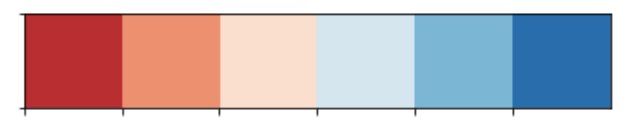

These articles show how workers performed on guessing missing words for articles
extracted randomly from Wikipedia For Schools.
The box color e.g.
represent the average
mean of workers on that particular word. Because 5 unique workers tried each article (so each word), that value
is in [0, 0.2, 0.4, 0.6, 0.8, 1] represented by the respective colors :

Along the input is written a number e.g. [0.3] which represents the variance
of success accross workers on that word.
The caption displayed when hovering the input represents the words that were submitted by workers.
Article 1633 - Avg score : 1.0
An oil refinery is an industrial process plant where crude [0.0] is processed and refined into useful petroleum products, such as gasoline and diesel fuel.
Article 2066 - Avg score : 1.0
The Magellanic [0.0] (Spheniscus magellanicus) is a South American penguin, breeding in coastal Argentina, Chile and the Falkland Islands, with some migrating to Brazil. It is the most numerous of the Spheniscus penguins. Its nearest relatives are the African Penguin, the Humboldt Penguin and the Galápagos Penguin.
Article 449 - Avg score : 1.0
Gadolinium ( IPA: /ˌgadəˈlɪniəm/) is a chemical element in the periodic table that has the symbol Gd and atomic [0.0] 64.
Article 3615 - Avg score : 0.933
A [0.0] is any three-dimensional structure where the upper surfaces are triangular and converge on one point. The base of a pyramid is usually quadrilateral or trilateral (but generally it can be any polygon shape), meaning that a [0.0] usually has three or four sides (but theoretically there is no limit to the number of sides a pyramid can generally have), but all pyramids must have trilateral sides. The measurements of these triangles uniformly classify the shape as isosceles and sometimes equilateral.A pyramid's design, with the [0.2] of the weight closer to the ground, means that less material higher up on the pyramid will be pushing down from above. This allowed early civilizations to create stable monumental structures. For thousands of years, the largest structures on Earth were pyramids: first the Red Pyramid in the Dashur Necropolis and then the Great Pyramid of Khufu, the only remaining Wonder of the World.
Article 2640 - Avg score : 0.9
Dilophosaurus was a theropod [0.0] from the Early Jurassic Period. The name is pronounced (dy-LOH-fo-sawr-us) meaning 'two-crested lizard', because it had two crests ( Greek di meaning 'two', lophos meaning 'crest' and sauros [0.2] 'lizard')
Article 2144 - Avg score : 0.9
Mount Everest or Chomolungma is the highest point on Earth, as measured by the height of its summit above [0.0] level. The mountain, which is [0.2] of the Himalaya range in High Asia, is located on the border between Nepal and China.
Article 2276 - Avg score : 0.867
The yen or en ( Japanese: 円, en, in older Japanese yen) is the [0.0] of Japan. It is also widely used as a reserve currency after the United States [0.0] and euro. The ISO 4217 codes for the yen are JPY and 392. Mary cut the pie in four pieces such that the four kids get RIDDLE-TOKEN piece(s) each. The Latinised [0.3] is ¥, while in Japanese it is written with the kanji 円.
Article 558 - Avg score : 0.867
A gas is one of the four major phases of [0.2] (after solid and liquid, and followed by plasma, that subsequently appear as a solid material is subjected to increasingly higher temperatures. Thus, as energy in the form of [0.0] is added, a solid (e.g., ice) will first melt to become a liquid (e.g., water), which will then boil or evaporate to become a gas (e.g., water vapor). There are either seven or eight shows today, so that's at most RIDDLE-TOKEN . If the [0.2] is further heated, its atoms or molecules can become (wholly or partially) ionized, turning the gas into a plasma.
Article 2735 - Avg score : 0.867
Danny Deever is an 1890 [0.2] by Rudyard Kipling, one of the first of the Barrack-Room Ballads. The poem, a ballad, describes the execution of a British [0.2] in India for murder. His execution is viewed by his regiment, paraded to watch it, and the [0.0] is composed of the comments they exchange as they see him hanged.
Article 160 - Avg score : 0.867
U2 is a rock [0.0] from Dublin, Ireland, featuring Bono (Paul David Hewson) on vocals, rhythm guitar and harmonica; The Edge (David Howell Evans) on lead guitar, keyboards and vocals; Adam Clayton on bass guitar; and Larry Mullen Jr. on drums, percussion and occasional vocals.Formed in 1976, U2 has consistently remained among the most popular acts in the world since the mid 1980s. The [0.3] has sold approximately 50.5 million albums in the U.S., according to the RIAA, and upwards of 140 million worldwide, has had six #1 albums in the US and nine #1 albums in the UK and are one of the most successful bands of the rock era. The band has won 22 Grammy awards, more than any other recording artist.The [0.0] is also politically active in human rights and charitable causes, such as the Make Poverty History campaign as well as Live Aid, Live 8, Bono's DATA (Debt, AIDS, Trade in Africa) campaign, and The Edge's Music Rising.
Article 1280 - Avg score : 0.867
In Greek mythology, Achilles (also Akhilleus or Achilleus) ( Ancient Greek: Άχιλλεύς) was a hero of the Trojan War, the central character and greatest warrior of Homer's Iliad, which takes for its theme, not the War of Troy in its entirety, but specifically the Wrath of Achilles.Later legends (beginning with a poem by Statius in the first [0.2] AD) state that Achilles was invulnerable on all of his body except for his heel. These legends state that Achilles was killed in battle by an arrow to the heel, and so an Achilles' [0.0] has come to mean a person's only weakness.Achilles is also famous for being the most 'handsome' of the heroes assembled at Troy, as well as the fleetest. Central to his myth is his [0.2] with Patroclus, characterized in different sources as deep friendship or love.
Article 2483 - Avg score : 0.84
A carnivore ( IPA: ['kɑ(r)nivɔ(r)]), meaning 'meat eater' (Latin carne meaning 'flesh' and vorare [0.0] 'to devour'), is an animal that eats a diet consisting mainly of meat, whether it comes from live animals or dead ones ( scavenging). Some animals are considered carnivores even if their diets contain very little [0.0] (e.g., predatory arthropods such as spiders or mantids that may rarely consume small vertebrate prey). Animals that subsist on a [0.0] consisting only of meat are referred to as obligate carnivores.The word also refers to the mammals of the Order Carnivora, many (but not all) of which fit the first definition. Bears are an [0.3] of members of Carnivora that are not true carnivores. Carnivores that eat insects primarily or exclusively are called insectivores, while those that eat fish primarily or exclusively are called piscivores.There are also several species of carnivorous plants, though most are primarily insectivorous.The theropod dinosaurs such as Tyrannosaurus [0.2] were mostly obligate carnivores, while sauropod and ornithischian dinosaurs were mostly herbivorous.
Article 616 - Avg score : 0.8
The 8th century is the period from 701 - 800 in accordance with the Julian [0.2] in the Christian Era.
Article 3553 - Avg score : 0.8
The International Astronomical Union defines "planet" as a celestial [0.2] that, within the Solar System,
Article 2155 - Avg score : 0.8
In mathematics, a matrix (plural matrices) is a rectangular [0.3] of numbers or, more generally, a table consisting of abstract quantities that can be added and multiplied. Matrices are used to describe linear equations, keep [0.0] of the coefficients of linear transformations and to record data that depend on two parameters. Matrices can be added, multiplied, and decomposed in various ways, making them a key concept in linear algebra and matrix theory.In this article, the entries of a [0.0] are real or complex numbers unless otherwise noted. If there are eight apple(s) and you take away five, then there remains only RIDDLE-TOKEN .
Article 2610 - Avg score : 0.8
Democracy (literally "rule by the people", from the Greek demos, "people," and kratos, "rule") is a form of [0.0] for a nation state, or for an organization in which all the citizens have an equal vote or voice in shaping policy. Today [0.3] is often assumed to be liberal democracy, but there are many other varieties and the methods used to govern differ. While the term [0.2] is often used in the context of a political state, the principles are also applicable to other bodies, such as universities, labor unions, public companies, or civic organizations. If there are nine kiwi(s) and you take away one, then there remains only RIDDLE-TOKEN .
Article 3318 - Avg score : 0.8
Local community is a geographically defined community, a group of people living close to each other.The term [0.3] suggest that its members have some relations that are communal - experiences, values, and/or interests may be shared, they may interact with each other and are concerned about mutual and collective well-being.Local community has been an issue of concern in social criticism and theoretical sociology, among others, especially in contrast to the modern society. The central idea, either expressed or rejected, is that local [0.0] has been in decline, if not lost, in our contemporary life.
Article 2090 - Avg score : 0.8
A meteor is the visible path of a meteoroid that enters the Earth's (or another body's) atmosphere, commonly called a [0.2] star or falling star.
Article 3659 - Avg score : 0.8
Praseodymium ( IPA: /ˌpreɪziə(ʊ)ˈdɪmiəm, ˌpreɪsi-/) is a chemical element in the periodic [0.2] that has the symbol Pr and atomic number 59.
Article 2095 - Avg score : 0.8
Mu Arae (μ Ara / μ Arae) is a Sunlike yellow-orange [0.2] located around 50 light years away in the constellation Ara. The star has a planetary [0.2] with four known planets. We already have three eggs, if Mary buys two more then we'll have RIDDLE-TOKEN eggs. The system's innermost [0.2] was the first "hot Neptune" to be discovered.
Article 2296 - Avg score : 0.8
Curium ( IPA: /ˈkjuːriəm/) is a synthetic element in the periodic [0.2] that has the symbol Cm and atomic number 96. If there are three pizza(s) and you take away two, then there remains only RIDDLE-TOKEN . A radioactive metallic transuranic [0.2] of the actinide series, curium is produced by bombarding plutonium with alpha particles (helium ions) and was named for Marie Curie and her husband Pierre.
Article 147 - Avg score : 0.8
The United Kingdom national football team (often known as the Great Britain and Northern Ireland national football team or the Great Britain national football team) represents the United Kingdom (UK) in [0.0] (soccer) at the Olympic Games. Separate teams for each Home Nation ( England, Scotland, Wales and Northern Ireland) compete in all other international competitions, including the World Cup and European Championships.The United Kingdom [0.0] is currently not active, but will be reforming to compete in the Olympics in London in 2012. Previously, the UK took [0.3] in the Olympic Games (as well as playing a handful of friendly matches) from 1908 until 1972 before disbanding.
Article 1708 - Avg score : 0.8
Apis andreniformis Apis cerana, or eastern honey bee Apis dorsata, or giant honey bee Apis florea, or dwarf honey bee Apis koschevnikovi Apis mellifera, or western [0.2] bee Apis nigrocincta Mary cut the pie in twelve pieces such that the six kids get RIDDLE-TOKEN piece(s) each.
Article 2777 - Avg score : 0.8
Volleyball is an Olympic sport in which two teams separated by a high [0.0] use their hands, arms, or (rarely) other parts of their bodies to hit a ball back and forth over the net. Each [0.3] is allowed three hits to get the ball over the net to the other team. A point is scored if the ball hits the [0.2] in the opponents' court, if the opponents commit a fault, or if they fail to return the ball properly.
Article 2837 - Avg score : 0.771
Edinburgh ( pronounced [ˈɛdɪnb(ə)rə]; Scottish Gaelic: Dùn Èideann) is the [0.2] of Scotland and its second-largest city. It is situated on the east coast of the central lowlands, on the south [0.2] of the Firth of Forth, on the North sea. It forms the City of Edinburgh council area; the city [0.2] area includes urban Edinburgh and a small rural area.It has been the capital of Scotland since 1437 and is the seat of the country's parliament. The [0.0] was one of the major centres of the enlightenment (see Scottish Enlightenment), led by the University of Edinburgh. The Old Town and New Town districts of Edinburgh were listed as a UNESCO World Heritage Site in 1995. In the census of 2001, Edinburgh had a total resident population of 448,624, making it the 7th largest city in the United Kingdom..Edinburgh is well-known for the annual Edinburgh Festival, actually a collection of independent festivals held annually over about four weeks from early August, when the [0.2] of the city doubles. The most famous of these events are the Edinburgh Fringe (the largest performing arts [0.0] in the world), the Edinburgh International Festival, the Edinburgh Military Tattoo, and the Edinburgh International Film Festival. Other famous events are the Hogmanay street party and the Beltane celebrations.The [0.2] is one of Europe's major tourist destinations, attracting roughly 13 million visitors a year, and is the second most visited tourist destination in the United Kingdom, after London.
Article 1021 - Avg score : 0.76
Snake charming is the [0.3] of apparently hypnotising a snake by simply playing an instrument. A typical performance may also include handling the snakes or performing other seemingly dangerous acts, as well as other [0.3] performance staples, like juggling and sleight of hand. The practice is most common in India, though other Asian nations such as Bangladesh, Sri Lanka, Thailand, and Malaysia are also home to performers, as are the North African countries of Egypt, Morocco and Tunisia.Ancient Egypt was home to one form of snake charming, though the [0.2] as it exists today likely arose in India. It eventually spread throughout Southeast Asia, the Middle East, and North Africa. Despite a sort of golden age in the 20th century, snake charming is today in [0.0] of dying out. This is due to a variety of factors, chief among them the recent enforcement of a 1972 law in India banning [0.3] of serpents. In retaliation, [0.0] charmers have organised in recent years, protesting the loss of their only means of livelihood, and the government has made some overtures to them.Many snake charmers live a wandering existence, visiting towns and villages on market days and during festivals. With a few rare exceptions, however, they typically make every [0.2] to keep themselves from harm's way. For one, the [0.3] typically sits out of biting range, and his animal is sluggish and reluctant to attack anyway. More drastic means of protection include removing the creature's fangs or venom glands, or even sewing the snake's [0.0] shut. The most popular species are those native to the snake charmer's [0.3] region, typically various kinds of cobra, though vipers and other types are also used.
Article 647 - Avg score : 0.756
Tripoli (Arabic: طرابلس Tarābulus) is the capital [0.0] of Libya. It has a [0.0] of 1.68 million. The [0.3] is located in the northwest of the country on the edge of the desert, on a point of rocky land projecting into the Mediterranean Sea and forming a bay. Tripoli was founded in the 7th [0.0] BCE by the Phoenicians, who named it Oea. It is located at 32°54'8" North, 13°11'9" East (32.90222, 13.185833).Tripoli is the largest city, the principal sea port, and the largest commercial and [0.3] centre in Libya. It is also the [0.3] of Al-Fateh University. Due to the city's long history, there are many sites of archaeological [0.3] in Tripoli. The climate is typical Mediterranean, with hot, dry summers, cool winters and some modest rainfall.The [0.2] was subjected to an air strike by the United States in 1986, in retaliation for what the US saw as Libya's proven support of terrorism. United Nations sanctions against Libya were lifted in 2003, which is expected to increase traffic through the Port of Tripoli and have a positive [0.3] on the city's economy.
Article 521 - Avg score : 0.75
Geometry ( Greek γεωμετρία; [0.0] = earth, metria = measure) arose as the field of knowledge dealing with spatial relationships. Geometry was one of the two fields of pre-modern mathematics, the other being the [0.2] of numbers.In modern times, geometric concepts have been extended. They sometimes show a high [0.3] of abstraction and complexity. Geometry now uses methods of [0.2] and abstract algebra, so that many modern branches of the field are not easily recognizable as the descendants of early geometry. (See areas of mathematics.)
Article 80 - Avg score : 0.75
The Republic of Macedonia ( Macedonian: Република Македонија / Republika Makedonija, Albanian: Republika e Maqedonisë), often referred to as Macedonia, is a landlocked [0.2] on the Balkan peninsula in southeastern Europe. We already have five eggs, if Mary buys three more then we'll have RIDDLE-TOKEN eggs. As the result of a naming dispute with Greece, in 1993 it was admitted to the United Nations under the provisional [0.3] the former Yugoslav Republic of Macedonia (FYROM), pending resolution of the dispute.The capital is Skopje, with 500,000 inhabitants, and there are a number of smaller cities, notably Bitola, Prilep, Tetovo, Kumanovo, Ohrid, Veles, Štip, Gostivar and Strumica. It has more than 50 natural and artificial lakes and sixteen mountains higher than 2,000 meters (6,550 ft) above [0.0] level.The country is a member of the UN and the Council of Europe and an associate member of La Francophonie, the World Trade Organization (WTO), the Organisation for Security and Cooperation in Europe. Since December 2005 it is also a [0.3] for joining the European Union and has applied for NATO membership.
Article 9 - Avg score : 0.75
Rondane National Park ( Norwegian: Rondane nasjonalpark) is the oldest national [0.0] in Norway, established on December 21, 1962. The park contains a number of peaks above 2000 metres (6560 feet), with the highest being Rondslottet at an [0.3] of 2178 metres (7146 feet). The park is an important habitat for herds of wild reindeer.The [0.0] was extended in 2003, and now covers an area of 963 km² (372 mi²) in the counties Oppland and Hedmark. Rondane lies just to the east of Gudbrandsdal and two other [0.3] areas, Dovre and Jotunheimen are nearby.
Article 3260 - Avg score : 0.743
King Kong is the three-time 2006 Academy Award-winning remake of the original 1933 King Kong [0.2] about a fictional giant ape called Kong. It was directed by Peter Jackson, produced by Jackson and Fran Walsh, written by Jackson, Walsh and Philippa Boyens, and its cast included Naomi Watts in the [0.0] of Ann Darrow, Jack Black as Carl Denham, Adrien Brody as Jack Driscoll and through performance capture Andy Serkis as Kong.In 1933, Great Depression-era New York City, actress Ann Darrow has just lost her job at the local theatre and is faced with dancing at the local burlesque show to survive. Meanwhile, film [0.3] Carl Denham faces the cancellation of his latest movie because of his unorthodox methods and approach to filmmaking. After Carl recruits Ann to replace his leading lady, who joins the film because of the presence of her favorite writer Jack Driscoll, they set sail to evade the police and journey to a remote Indian Ocean [0.0] known as Skull Island to find the legendary creature known as Kong.The film's budget climbed from an initial $150 million US to a record-breaking $207 million. With a huge marketing [0.3] and many commercial tie-ins, the December 14, 2005 release was all-encompassing for the movie market, and was seriously challenged only by its other major competitor, The Chronicles of Narnia: The Lion, the Witch and the Wardrobe. The [0.2] made a modest opening of $50.1 million, and significantly underperformed expectations at the box office. Nonetheless, Kong turned out to be very profitable as ticket and DVD sales combined, the film earned well over $600 million, becoming the fourth-highest grossing [0.3] in Universal Pictures history.It recieved positive reviews, which some considering it one of the all-round best movies of 2005, though it has been criticized for its excessive length at three hours and eight minutes.
Article 618 - Avg score : 0.743
Tennis is a [0.3] played between either two players ("singles") or two teams of two players ("doubles"). Players use a stringed racquet to strike a hollow rubber ball covered with felt over a [0.0] into the opponent's court. In some places [0.0] is still called lawn tennis to distinguish it from real tennis (also known as royal tennis or court tennis), an older form of the game that originated in France in the Middle Ages and is played indoors on a very different court. Originating in England in the late 19th century, lawn tennis [0.3] first throughout the English-speaking world, particularly among the upper classes. Tennis is now an Olympic [0.0] and is played at all levels of society, by all ages, and in many countries around the world. Except for the [0.0] of the tie-breaker in the 1970s, its rules have remained remarkably unchanged since the 1890s. Along with its millions of players, millions of people follow [0.0] as a spectator sport, especially the four Grand Slam tournaments.
Article 334 - Avg score : 0.733
Namibia, officially the Republic of Namibia, is a [0.3] in southern Africa on the Atlantic coast. It gained independence from South Africa in 1990 and its [0.0] city is Windhoek. Namibia is a [0.3] state of the Southern African Development Community (SADC), the African Union (AU), and the Commonwealth of Nations.
Article 2191 - Avg score : 0.733
Joanne “Jo” Rowling, OBE (born July 31, 1965) is an English fiction writer who writes under the pen [0.2] J. K. Rowling. Rowling is most famously known as the [0.2] of the Harry Potter fantasy series, which has gained international attention, won multiple awards, and sold over 300 million copies worldwide. In February 2004, Forbes [0.3] estimated her fortune at £576 million (just over US$1 billion), making her the first person to become a US-dollar billionaire by writing books.
Article 1526 - Avg score : 0.733
Fiction (from the Latin fingere, "to form, create") is the name given to imagined events, people or places and stands in contrast to non-fiction, which refers to factual claims and reality.Fiction may be represented in media using —novels, short stories, fables, fairy tales, films, comics, interactive fiction, cartoons, [0.2] games, Anime—Fictional works may include or reference factual occurrences. The [0.3] is also often used synonymously with literature and more specifically fictional prose. In this sense, fiction refers only to novels or short stories and is often divided into two categories, popular fiction (e.g., science fiction or mystery fiction) and literary [0.0] (e.g., Marcel Proust or William Faulkner).
Article 2015 - Avg score : 0.733
A mosque is a [0.2] of worship for followers of the Islamic faith. Muslims often refer to the [0.2] by its Arabic name, masjid (pl. masajid) (Arabic: مسجد — pronounced: /ˈmas.ʤid/ or /ˈmas.ˈɡʲid/). The [0.3] "mosque" in English refers to all types of buildings dedicated for Islamic worship, although there is a distinction in Arabic between the smaller, privately owned mosque and the larger, "collective" mosque (masjid jami) ( Arabic: جامع), which has more community and social amenities.The primary purpose of the mosque is to serve as a place where Muslims can come together for prayer. Sandra cut the omelet in two pieces such that the two kids get RIDDLE-TOKEN piece(s) each. Nevertheless, mosques are known around the world nowadays for their general importance to the Muslim [0.2] as well as their demonstration of Islamic architecture. Today, most mosques have elaborate domes, minarets, and [0.2] halls. They are not only places for [0.2] and prayer, but also places to learn about Islam and meet fellow believers.
Article 2654 - Avg score : 0.733
Deoxyribonucleic [0.2] (DNA) is a nucleic acid that contains the genetic instructions for the biological development of a cellular form of life or a virus. All known cellular [0.3] and some viruses have DNA. DNA is a long polymer of nucleotides (a polynucleotide) that encodes the sequence of amino [0.2] residues in proteins, using the genetic code.
Article 3558 - Avg score : 0.72
Python is a high-level [0.3] language first released by Guido van Rossum in 1991. Python is designed around a philosophy which emphasizes the importance of programmer [0.3] over computer effort, and it rejects more arcane language features, prioritizing readability over speed or expressiveness. Python is often characterized as minimalist, although this only applies to the core language's syntax and semantics; the standard library provides the language with a large number of additional libraries and extensions.Python is a multi-paradigm programming [0.0] which has a fully dynamic type system and uses automatic memory management; it is thus similar to Perl, Ruby, Scheme, Smalltalk, and Tcl.The language has an open, community-based development model managed by the non-profit Python Software Foundation. While various parts of the [0.3] have formal specifications and standards, the language as a whole is not formally specified. The de facto standard for the [0.0] is the CPython implementation. If there are nine apple(s) and you take away six, then there remains only RIDDLE-TOKEN .
Article 3369 - Avg score : 0.72
The City of Los Angeles, known also as "L.A.," is the most populous [0.0] in the state of California and the second-most populous in the United States. It is an alpha [0.2] city having a population of approximately 4 million people and spanning 498 square miles. According to the U.S. Census Bureau, the Los Angeles metropolitan area has a total area of 4,850 square miles and is [0.0] to roughly 13 million people.Los Angeles was founded in 1781 by Spanish missionaries, yet it was not incorporated as a municipality until April 4, 1850—five months before California achieved statehood. If there are eight kiwi(s) and you take away three, then there remains only RIDDLE-TOKEN . It is the county [0.2] of Los Angeles County.The Los Angeles area, recognized by its sprawling urban terrain, is one of the world's most important centers of culture, science, technology, international trade, and higher education, and is home to numerous world-renowned institutions in a broad range of professional and cultural fields. The city and its immediate surrounding vicinity leads the world in producing popular entertainment—such as [0.3] pictures, television, and recorded music—which forms the base of its international fame and global status.
Article 1129 - Avg score : 0.72
Swissair Flight 111 (SR-111, SWR-111) was a Swissair McDonnell Douglas MD-11 on a scheduled airline [0.0] from John F. Kennedy International Airport in New York City, United States to Cointrin International Airport in Geneva, Switzerland. This flight was also a codeshare flight with Delta Air Lines.On September 2, 1998 the aircraft used for the flight, registered HB-IWF, crashed into the Atlantic Ocean [0.3] of Halifax International Airport at the entrance to St. Margarets Bay, Nova Scotia. The [0.0] site was 8 km from shore, roughly equidistant between the tiny fishing and tourist communities of Peggys Cove and Bayswater. All 229 people on board were killed.The resulting investigation by the Transportation Safety Board of Canada (TSB) took over four years and [0.3] US$39 million ( CAD$57 million). Their main conclusion was that flammable material used in the aircraft's structure allowed a fire to spread beyond the [0.3] of the crew, resulting in the loss of control and crash of the aircraft.
Article 49 - Avg score : 0.72
Right whales are baleen whales belonging to the [0.3] Balaenidae. Three right [0.2] species are recognized in the genus Eubalaena, while the Bowhead Whale—also a right whale—is placed in its own genus, Balaena.Right whales can grow up to 18 m (60 feet) long and weigh up to 100 tonnes. They are called "right whales" because whalers thought the whales were the "right" ones to hunt, as they float when killed and often swim within [0.3] of the shore. Populations were vastly reduced by intensive harvesting during the active years of the [0.0] industry. Today, instead of hunting them, people often watch these acrobatic whales for pleasure.The four right [0.2] species live in distinct locations: around 300 Atlantic Northern Right Whales live in the North Atlantic; approximately 200 Pacific Northern Right Whales live in the North Pacific; about 7,500 Southern Right Whales are spread throughout the southern part of the Southern Hemisphere; and 8,000–9,200 Bowhead Whales are distributed entirely in the Arctic Ocean.
Article 2707 - Avg score : 0.711
Duchenne muscular dystrophy (DMD) (also known as muscular dystrophy - Duchenne type) is an inherited disorder characterized by rapidly progressive [0.0] weakness which starts in the legs and pelvis and later affects the whole body. Duchenne muscular dystrophy (DMD) is the most common [0.3] of muscular dystrophy. It usually affects only males, but in rare cases it can also affect females. A milder form of this disease is known as Becker's muscular [0.2] (BMD). In Becker muscular dystrophy, most of the symptoms are similar to Duchenne, but the onset is later and the [0.2] is milder.DMD is named after the French neurologist Guillaume Benjamin Amand Duchenne (1806-1875), who first described the disease in the 1860s. It is due to mutations in the dystrophin gene, which encodes a [0.3] membrane protein in myocytes (muscle cells). Arnold cut the omelet in eight pieces such that the four kids get RIDDLE-TOKEN piece(s) each. One third of the cases are known to be caused by [0.3] of spontaneous mutations in the gene, while the remainder are inherited. Boys with DMD develop weak muscles because the muscle fibers that were present at [0.0] are destroyed. Symptoms result in death by age 30 and respiratory failure usually results in a [0.0] expectancy of 20 years. A 1996 study found that early detection of the disease does not improve life-expectancy, and the most common [0.0] of death is respiratory failure.
Article 3312 - Avg score : 0.7
Laurence Stephen Lowry ( November 1, 1887– February 23, 1976) was an English [0.2] born in Barratt Street, Old Trafford, Manchester. Many of his drawings and paintings depict Salford and surrounding areas, including Pendlebury where he lived and worked for well over thirty years.Lowry is famous for painting scenes of [0.3] in the industrial districts of northern England during the early 20th century. He had a distinctive [0.0] of painting and is best known for urban landscapes peopled with many human figures ('matchstick men'). He tended to paint these in drab colours. He also painted mysterious unpopulated landscapes, brooding portraits, and the secret 'marionette' works (the latter only found after his death).Because of his use of stylised figures and the [0.3] of weather effects in many of his landscapes he is sometimes characterised as a naïve 'Sunday painter' although this is not the position of the galleries that have organised retrospective of his works.
Article 2026 - Avg score : 0.7
Mustard seeds are the proverbially small seeds of the various [0.2] plants. They are important spices in many regional cuisines. The seeds can come from three different plants: black mustard ( B. nigra), brown Indian mustard ( B. juncea), and white or yellow mustard ( B. hirta/Sinapis alba).In the Indian subcontinent they are often used whole, and are quickly fried in oil until they pop to impart a flavor to the oil.Mustard seeds generally take 3-7 days to germinate if placed under the proper conditions, which include a cold [0.0] and relativly moist soil. Mustard [0.3] can be extracted from the seeds. The seeds, particularly the white ones, can also be [0.2] into a flour, and mixed to a thick paste with a little water to make the condiment mustard. The ground [0.0] powder is usually mixed with ordinary flour to reduce the strength of the resulting condiment.Other ingredients can be used to mix mustard, for example, sugar, honey, vinegar, wine, or milk.When initially mixed the sauce is mild in flavor, but it develops in time. Strong mustard has a very powerful (and painful) effect on the nasal membranes if eaten carelessly.The whole seeds can be soaked in liquid before grinding to create whole grain mustard.It is possible to buy ready prepared [0.0] (condiment) in many places.
Article 763 - Avg score : 0.7
The Oz books form a [0.3] series that begins with The Wonderful Wizard of Oz, and that relates the "history" of the Land of Oz. Oz was originally created by [0.0] L. Frank Baum, who went on to write fourteen Oz books. Although most of the Oz books are strictly adventures, Baum—as well as many later Oz authors—styled themselves as "Royal Historians" of Oz. Many other authors have put their own twists on Oz, notably Gregory Maguire's revisionist Wicked.
Article 2930 - Avg score : 0.7
Edward I ( 17 June 1239 – 7 July 1307), popularly known as Longshanks, also as "Edward the Lawgiver" because of his legal reforms, and as "Hammer of the Scots", achieved [0.3] as the monarch who conquered Wales and who tried to do the same to Scotland. He reigned from 1272 to 1307, ascending the [0.0] of England on 21 November 1272 after the death of his father, King Henry III of England. His [0.3] was Queen consort Eleanor of Provence. He was voted the 94th greatest Briton in the 2002 [0.3] of 100 Greatest Britons.
Article 1562 - Avg score : 0.7
Fossil fuels are hydrocarbons, primarily coal, [0.3] oil or natural gas, formed from the remains of dead plants and animals. The [0.3] that hydrocarbons were formed from these remains was first introduced by Mikhail Lomonosov in 1757. In common dialogue, the [0.2] fossil fuel also includes hydrocarbon-containing natural resources that are not derived from animal or plant sources. These are sometimes known instead as mineral fuels. The utilization of fossil fuels has enabled large-scale industrial development and largely supplanted water-driven mills, as well as the combustion of wood or peat for heat.Fossil fuel is a general term for buried combustible geologic deposits of organic materials, formed from decayed plants and animals that have been converted to crude oil, coal, natural gas, or heavy oils by [0.2] to heat and pressure in the earth's crust over hundreds of millions of years. When generating electricity, energy from the [0.3] of fossil fuels is often used to power a turbine. Older generators often used steam generated by the burning of the fuel to turn the turbine, but in newer power plants the gases produced by burning of the [0.2] turn a gas turbine directly.With global modernization in the 20th and 21st centuries, the thirst for energy from fossil fuels, especially gasoline derived from oil, is one of the causes of major regional and global conflicts. A global movement toward the generation of renewable energy is therefore underway to help meet the increased global energy needs.The burning of fossil fuels by humans is the largest source of emissions of carbon dioxide, which is one of the [0.2] gases that allows radiative forcing and contributes to global warming. A small portion of hydrocarbon-based fuels are biofuels derived from atmospheric carbon dioxide, and thus do not increase the net amount of [0.0] dioxide in the atmosphere.
Article 123 - Avg score : 0.68
A [0.0] (from Late Latin revolutio which means "a turn around") is a significant change that usually occurs in a relatively short period of time. They vary in terms of numbers of their participants ( revolutionaries), means employed by them, duration, [0.2] and many other aspects. They may result in a socio- political change in the socio- political institutions, or a major [0.2] in a culture or economy.Scholarly debates about what is and what is not a revolution centre around several issues. Early study of revolutions primarily analyzed events in European [0.3] from psychological perspective, soon however new theories where offered using explanations for more global events and using works from other social sciences such as sociology and political sciences. Several generations of scholarly thought have generated many competing theories on revolutions, gradually increasing our [0.2] of this complex phenomenon.
Article 1485 - Avg score : 0.675
Football (also known as [0.2] football or soccer) is a team sport played between two teams of 11 players each. It is widely considered to be the most popular [0.0] in the world. A ball game, it is played on a rectangular [0.0] field, or occasionally an artificial turf, with a goal at each end of the field. The object of the game is to score by manoeuvring the [0.2] into the opposing goal; only the goalkeepers may use their hands or arms to propel the ball in general play. The [0.0] that scores the most goals by the end of the match wins. Sandra cut the omelet in eight pieces such that the eight kids get RIDDLE-TOKEN piece(s) each. If the score is tied at the end of the game, either a draw is declared or the [0.0] goes into extended time, depending on the format of the competition.The modern game was codified in England following the formation of the Football Association, whose 1863 Laws of the Game created the foundations for the way the sport is played today. Football is governed internationally by Fédération Internationale de Football Association (FIFA). The most prestigious international football [0.2] is the World Cup, held every four years. This event, the most widely viewed and famous in the world, boasts twice the [0.2] of the Summer Olympics.
Article 406 - Avg score : 0.667
In game theory, the Nash equilibrium (named after John Forbes Nash, who proposed it) is a kind of solution concept of a game involving two or more players, where no [0.3] has anything to gain by changing only his or her own strategy unilaterally. If each player has chosen a [0.3] and no player can benefit by changing his or her strategy while the other players keep theirs unchanged, then the current set of strategy choices and the corresponding payoffs constitute a Nash equilibrium.The concept of the Nash equilibrium (NE) is not exactly original to Nash (e.g., Antoine Augustin Cournot showed how to find what we now call the Nash equilibrium of the Cournot duopoly game). However, Nash showed for the first time in his dissertation, Non-cooperative games (1950), that Nash equilibria must exist for all finite games with any [0.0] of players. Until Nash, this had only been proven for 2-player zero-sum games by John von Neumann and Oskar Morgenstern (1947).
Article 3453 - Avg score : 0.667
The 21st century is the present [0.3] of the Gregorian calendar. It began on January 1, 2001 and will last to December 31, 2100, though common [0.3] mistakenly believes January 1, 2000 to December 31, 2099 to hold this distinction. Technologically it is different from the 20th [0.0] mostly by changes brought about by the Digital Revolution of the 1980s, 1990s and 2000s. There are either seven or eight shows today, so that's at least RIDDLE-TOKEN .
Article 2113 - Avg score : 0.667
Mongolia ( Mongolian: Монгол Улс) is the largest fully landlocked country typically classified as being a part of East Asia, though it is sometimes considered as being a [0.0] of Central Asia instead. It is bordered by Russia to the [0.0] and the People's Republic of China to the south. Its capital and largest city is Ulaanbaatar.Mongolia was the centre of the Mongol Empire in the thirteenth century and was later ruled by China during the Manchu Qing Dynasty from the end of the seventeenth century until 1911, when an independent [0.3] was formed with Russian assistance. Following the end of the Cold War, and after the [0.3] of communism in Mongolia in 1990, Mongolia adopted a new, democratic constitution which was ratified in 1992. This officially marked the [0.0] of Mongolia as a democratic country, making it one of the world's youngest democracies.At 1,564,116 square kilometres, Mongolia is the nineteenth largest country in the world. However, the country contains very little arable land as much of its area is covered by arid and unproductive steppes with mountains to the north and [0.2] and the Gobi Desert to the south. Approximately 30 [0.3] of the country's 2.8 million people are nomadic or semi-nomadic. The predominant religion in Mongolia is Tibetan Buddhism, and the [0.2] of the state's citizens are of the Mongol ethnicity, though Kazakhs and Tuvans also live in the country, especially in the west. About one-third of the [0.2] lives in Ulaanbaatar.
Article 2031 - Avg score : 0.667
Magic: The Gathering (colloquially "Magic", "MTG", or "Magic Cards") is a collectible [0.0] game created by Richard Garfield and introduced in 1994 by the company Wizards of the Coast, which was later purchased by Hasbro. Magic was the first example of the collectible card [0.0] genre and remains the most popular, with an estimated six million players world wide. Magic can be played by two or more players each using a deck(decks are often called libraries) of printed cards or through an internet-based computer version.Each [0.3] represents a battle between powerful wizards who use magical spells, items, and fantastic creatures depicted on individual Magic cards to defeat their opponents. Although the original concept of the [0.0] drew heavily from the motifs of traditional fantasy role-playing games such as Dungeons & Dragons, Magic bears little resemblance to pencil-and-paper adventure games. Rather, Magic is more similar to bridge or poker but has substantially more cards and complex rules than other card games.The world-wide popularity of Magic has spawned an organized tournament system and a [0.2] of professional Magic players, as well as a secondary market for Magic cards. Magic cards can be valuable due to scarcity arising from their power and utility in game [0.2] or the aesthetic qualities of their artwork.
Article 1401 - Avg score : 0.667
Accra, [0.3] 1,970,400 (2005), is the capital of Ghana. It is Ghana's largest [0.0] and its administrative, communications, and economic centre. The primary economic activities are financial and other services, agriculture, fishing, and manufacturing such as processed food, [0.3] and plywood, textiles, clothing, and chemicals. Accra is located at 5°30' North, 0°10' West (5.5, -0.1667). It sits nears the Greenwich Meridian in the Accra Metropolitan Area, in the Greater Accra Region.
Article 455 - Avg score : 0.667
Georgetown, estimated [0.0] 250,000 ( 1998), is the capital and largest city of Guyana, located in the Demerara-Mahaica region. It is situated on the Atlantic Ocean [0.3] at the mouth of the Demerara River and is nicknamed 'Garden City of the Caribbean.' Georgetown is located at 6°48′N 58°10′W. The [0.3] serves primarily as a retail and administrative centre.
Article 2913 - Avg score : 0.66
Edible salt, also called table [0.0] or just salt, is a mineral, one of a very few rocks commonly eaten by humans. There are different forms of edible salt: unrefined salt, refined salt, table [0.0] or iodised salt. It is a crystalline solid, white, pale pink or light grey in colour, obtained from sea water or from [0.2] deposits. Sea [0.0] comes in fine or larger crystals. In nature, it includes not only sodium chloride, but also other vital [0.3] minerals. Edible [0.3] salts may be slightly greyish in colour due to this mineral content.Salt is necessary for the survival of all living creatures, including humans. Salt is involved in regulating the [0.3] content (fluid balance) of the body. Salt [0.3] is one of the basic tastes. Salt cravings may be caused by trace mineral deficiencies as well as by a deficiency of [0.0] chloride itself.Salt is required for life, but overconsumption can increase the risk of health problems, including high blood pressure, in those individuals who are genetically predisposed to hypertension. In food preparation, salt is used as a [0.3] and as a seasoning.
Article 1776 - Avg score : 0.65
Hoover Dam ( 36°0′56″N, 114°44′16″W), also known as Boulder Dam, is a concrete gravity-arch [0.3] in the Black Canyon of the Colorado River, on the border between the U.S. states of Arizona and Nevada. The dam, located 48 km (30 miles) [0.3] of Las Vegas, is named after Herbert Hoover, who played an instrumental role in its construction, first as Secretary of Commerce and then later as President of the United States. The [0.2] & the powerplant are operated by the Bureau of Reclamation of the U.S. Department of the Interior. Listed on the National Register of Historic Places in 1981, Hoover Dam was designated a National Historic Landmark in 1985.Lake Mead is the [0.3] created behind the dam, named after Elwood Mead, who oversaw the construction of the dam.
Article 3787 - Avg score : 0.65
Weather forecasting is the application of science and technology to predict the state of the atmosphere for a future [0.3] and a given location. Humankind has attempted to predict the [0.0] since ancient times. Today, weather forecasts are made by collecting quantitative data about the current state of the [0.0] and using scientific understanding of atmospheric processes to project how the atmosphere will evolve. The chaotic nature of the atmosphere, the massive computational power required to solve the equations that describe the atmosphere, and incomplete understanding of atmospheric processes mean that forecasts become less accurate as the [0.0] of the forecast increases.
Article 2888 - Avg score : 0.65
Estonia (older Esthonia), officially the Republic of Estonia ( Estonian: Eesti or Eesti Vabariik), is a [0.0] in Northern Europe. Estonia has land borders to the [0.3] with fellow Baltic state Latvia (339 km) and Russia (229 km) to the east. It is separated from Finland in the [0.3] by the narrow Gulf of Finland and from Sweden in the west by the Baltic Sea. There are either three or five shows today, so that's at least RIDDLE-TOKEN . Estonia has been a [0.3] of the European Union since May 1, 2004 and of the NATO since March 29, 2004.
Article 417 - Avg score : 0.65
Gabon, officially the Gabonese Republic, is a [0.0] in west central Africa. It borders on Equatorial Guinea, Cameroon, Republic of the Congo and the Gulf of Guinea. Since its [0.3] from France on August 17, 1960, the Republic has been ruled by only two autocratic Presidents; the incumbent El Hadj Omar Bongo has been in power since 1967 and is currently (2006) Africa's longest-serving Head of State. Gabon introduced a multiparty [0.3] and a new democratic constitution in the early 1990s that allowed for a more transparent electoral process and for reforms of governmental institutions. A small population, abundant natural resources, and foreign private [0.3] have helped make Gabon one of the most prosperous countries in the region.
Article 2842 - Avg score : 0.65
Earwax, also known by the medical term cerumen, is a yellowish, waxy substance secreted in the ear [0.0] of humans and many other mammals. It plays an important [0.3] in the human ear canal, assisting in cleaning and lubrication, and also provides some protection from bacteria, fungus, and insects. A comprehensive review of the physiology and [0.2] of cerumen can be found in Roeser and Ballachanda. Excess or impacted cerumen can press against the eardrum and/or occlude the external auditory [0.2] and impair hearing.
Article 3016 - Avg score : 0.65
Bluegrass music is considered a form of American roots [0.2] with its own roots in English, Irish and Scottish traditional music. The [0.3] of the genre is derived from the Blue Grass Boys, the name of Bill Monroe's band. Inspired by immigrants from the British Isles (particularly the Scots-Irish immigrants of Appalachia), as well as the [0.3] of rural African-Americans, jazz, and blues. We already have four candies, if Mike buys six more then we'll have RIDDLE-TOKEN candies. Like jazz, bluegrass is played with each melody instrument switching off, playing improvised solos in turn while the others revert to backing; this is in contrast to old-time music, in which all instruments play the melody together or one [0.0] carried the lead throughout while the others provide accompaniment.
Article 2074 - Avg score : 0.64
Máel Coluim [0.2] Cináeda ( anglicised Malcolm II) (c. 980 – 25 November 1034) was King of Scots from 1005 until his death. He was a son of Cináed mac Maíl Coluim; the Prophecy of Berchán says that his mother was a [0.3] of Leinster and refers to him as forranach (the Destroyer or Avenger).To the Irish annals which recorded his death, Máel Coluim was ard rí Alban, High King of Scotland. In the same way that Brian Bóruma, High King of Ireland, was very far from being the only [0.3] in Ireland, Máel Coluim was one of several kings within the geographical boundaries of modern Scotland. His fellow kings included the [0.0] of Strathclyde, who ruled much of the south-west, various Norse-Gael kings of the western coasts and the Hebrides and, nearest and most dangerous rivals, the Kings or Mormaers of Moray. To the south, in the [0.3] of England, the Earls of Bernicia and Northumbria, whose predecessors as kings of Northumbria had once ruled most of southern Scotland, still controlled large parts of the south-east.
Article 2274 - Avg score : 0.64
John Lawrence Seigenthaler ( IPA pronunciation: [ˈsigɛnˌθɔlɚ]; born July 27, 1927) is an American journalist, writer, and political figure.Seigenthaler joined The Tennessean in 1949 and became editor in 1962, publisher in 1973, and chairman in 1982 before retiring as [0.3] emeritus in 1991. Seigenthaler was also founding editorial [0.3] of USA Today from 1982 to 1991. During this period he served on the board of directors for the American Society of Newspaper Editors and from 1988 to 1989 was its president.While covering a [0.3] in the mid-1950s, Seigenthaler met singer Dolores Watson. Giving up dreams of a musical career, Watson married Seigenthaler in 1955, and later gave birth to the couple's only child, John Seigenthaler, Jr., currently an [0.0] with NBC News. The elder Seigenthaler's brother, Thomas Seigenthaler, was the [0.3] of Seigenthaler Public Relations.
Article 2905 - Avg score : 0.633
María Eva Duarte de Perón ( May 7, 1919 – July 26, 1952) was the second wife of Argentine President Juan Domingo Perón (1895–1974) and the First Lady of Argentina from 1946 until her [0.0] in 1952. She is often referred to by the Spanish language diminutive Evita, which translates into English as "Little Eva".In 1951, Evita launched a campaign to be allowed to run for the [0.3] of Vice-President of Argentina. In 1952, Evita was given the official [0.2] of "Spiritual Leader of the Nation". Though she was never an officially elected political figure, most scholars agree that by her husband's second term in office Eva Perón had come to exercise more power and [0.3] within the government than anyone but her own husband. If there are five apple(s) and you take away three, then there remains only RIDDLE-TOKEN . This power derived from her [0.2] roles within the Pro-Peronist trade unions, the Eva Perón Foundation, and the Female Peronist Party. Many scholars agree that Evita was the most powerful [0.2] in the history of her nation, and some claim that at the time of her death she was one of the most powerful women on earth.
Article 1103 - Avg score : 0.633
Stephen Joseph Harper (born April 30, 1959) is the 22nd and current Prime Minister of Canada and [0.0] of the Conservative Party of Canada. He became Prime Minister after leading the Conservatives to a [0.2] government win in the January 2006 federal election, which ended more than twelve years of Liberal government.Harper has been the Member of Parliament (MP) for the riding of Calgary Southwest in Alberta since 2002, having previously served as the MP for Calgary West from 1993 to 1997. According to Canadian protocol, as Prime Minister, he is styled " The Right Honourable" for life.As one of the [0.3] members of the Reform Party, he ended his first stint as an MP to head the National Citizens Coalition. In 2002, Stephen Harper succeeded Stockwell Day as [0.3] of the Canadian Alliance and returned to Parliament as Leader of the Opposition. In 2003, he successfully reached an agreement with Progressive Conservative [0.2] Peter MacKay to merge the Canadian Alliance with the Progressive Conservative Party to form the Conservative Party of Canada. He was elected as the party's first non-interim [0.2] in March 2004.
Article 743 - Avg score : 0.633
The Importance of Being Earnest is a [0.2] by Oscar Wilde, a comedy of manners (extremely satiric) on the seriousness of society in either three or four acts (depending on edition) inspired by W. S. Gilbert's Engaged. It was first performed for the [0.0] on February 14, 1895 at the St. James' Theatre in London.It is set in England during the late Victorian era, and its primary source of humour is based upon the main character John's fictitious younger brother Ernest. John's surname, Worthing, is taken from the town where Wilde was staying when he wrote the play.Wilde's plays had reached a [0.3] of success and anything new from the playwright was eagerly awaited. The [0.3] were always hungry for details and would pursue stories about new plots and characters with a vengeance. To combat this Wilde gave the [0.2] a working title, Lady Lancing. The use of seaside [0.3] names for leading characters, or the locations of their inception, can be recognised in all four of Wilde's society plays.
Article 153 - Avg score : 0.633
The United States Constitution is the supreme [0.3] of the United States of America. It was adopted in its original [0.2] on September 17, 1787 by the Constitutional Convention in Philadelphia, Pennsylvania and later ratified by state-selected delegates representing the people of the several states. When delegates in nine of the then thirteen states ratified the document, it marked the creation of a [0.3] of sovereign states, and a federal government to administer that union. It took effect on March 4, 1789, replacing the weaker, non-centralized [0.3] that existed under the Articles of Confederation. The Constitution of the United States is one of the oldest constitutions still in use (the oldest being that of Republic of San Marino, which dates back to 1600), and the oldest federal [0.3] currently in use. The original transcribed copy of the document is on [0.2] at the National Archives in Washington, D.C.
Article 64 - Avg score : 0.633
The [0.0] is a thin layer of neural cells that lines the back of the eyeball of vertebrates and some cephalopods. In vertebrate embryonic development, the [0.2] and the optic nerve originate as outgrowths of the developing brain. Hence, the retina is [0.2] of the central nervous system (CNS). It is the only part of the CNS that can be imaged directly.The vertebrate [0.2] contains photoreceptor cells ( rods and cones) that respond to light; the resulting neural signals then undergo complex processing by other neurons of the retina. The retinal output takes the form of action potentials in retinal ganglion cells whose axons [0.0] the optic nerve. Several important features of visual perception can be traced to the retinal encoding and processing of light.The unique structure of the [0.0] vessels in the retina has been used for biometric identification.
Article 1560 - Avg score : 0.629
The Federal Bureau of Investigation (FBI) is a federal criminal investigative, [0.3] agency, and the primary investigative arm of the United States Department of Justice (DOJ). At present, the FBI has investigative [0.3] over violations of more than 200 categories of federal crimes , making the FBI the de-facto lead law enforcement agency of the United States government. The [0.0] of the bureau is "Fidelity, Bravery, Integrity. "Starting in 1908 as the Bureau of Investigation (BOI), the FBI did not receive its current [0.3] until 1935. J. Edgar Hoover, the first FBI Director, continuing his tenure from the BOI, was the longest-serving FBI [0.0] to date. He also is responsible for many of the advancements and changes that made [0.3] for it to become one of the top investigative agencies in the world. Sandra cut the omelet in six pieces such that the three kids get RIDDLE-TOKEN piece(s) each. The J. Edgar Hoover building, the FBI Academy, and the Criminal Justice Information Services Complex serve as the main support offices for each of the [0.3] offices that are located throughout the country.
Article 3042 - Avg score : 0.629
Brazil, officially the Federative Republic of Brazil (Portuguese: 'Brasil' or República Federativa do Brasil, listen ), is the largest and most populous country in South America, and fifth largest in the [0.0] in both area and population. Spanning a vast area between central South America and the Atlantic Ocean, it is the easternmost [0.2] of America and it borders Uruguay, Argentina, Paraguay, Bolivia, Peru, Colombia, Venezuela, Guyana, Suriname and the French department of French Guiana. In fact, it borders every South American nation except for Ecuador and Chile.Brazil is home to both extensive agricultural lands and [0.3] forests. Exploring vast natural resources and a large labor pool, it is South America's leading economic [0.2] and a regional leader. The country's name is generally believed to be derived from pau-brasil ( brazilwood), a tree highly valued by early colonists, though some credit the [0.0] to a mythical land mentioned in Europe during Middle Ages.Brazil was colonized by Portugal and it is the only Portuguese-speaking country in the Americas. Brazil is a multiracial [0.3] and its population is composed of European, Amerindian, African and Asian elements. Roman Catholicism in the country's main religion, with a [0.2] of adherents never seen in any other country.
Article 3477 - Avg score : 0.618
The Yellow River ( Traditional Chinese: 黃河; Simplified Chinese: 黄河; Hanyu Pinyin: Huáng Hé listen ; Wade-Giles: Hwang-ho, sometimes simply called the River in ancient Chinese) is the second longest [0.0] in China (after Yangtze River) and the seventh longest in the world. The [0.0] is 5464 km long . Originating in the Bayankala Mountains in Qinghai Province in western China, the Yellow [0.0] flows through nine provinces of China and empties into the Bohai Sea. The Yellow River basin has an east-west distance of 1900 km and north-south [0.0] of 1100 km. Total basin area is 752443 km².The middle stream of the Yellow River passes through the Loess Plateau where substantial [0.2] takes place. The large amount of mud and sand discharged into the river makes the Yellow River the most sediment-laden [0.2] in the world. The highest recorded annual [0.2] of silts discharged into the Yellow River is 3.91 billion tons in 1933. The highest [0.2] concentration level was recorded in 1977 at 920 kg/m³. These sediments later deposit in the slower lower reaches of the river, elevating the [0.2] bed and creating the famous "river above ground". In Kaifeng, Yellow River is 10 meters above the [0.3] level.The Yellow River is called the "Mother River of China" and "the Cradle of Chinese Civilization" in China, as the Yellow River basin is the birth-place of the northern Chinese civilizations and the most prosperous region in the early Chinese history. However, the frequent devastating flooding, largely due to the elevated river [0.2] in its lower course, has also earned it the unenviable distinction as "China's Sorrow". There are either two or four talks today, so that's at most RIDDLE-TOKEN .
Article 2285 - Avg score : 0.615
The Cape Porcupine or South African Porcupine, Hystrix africaeaustralis, is a [0.0] of Old World porcupine. Contrary to its name, this [0.2] species inhabits much of sub-Saharan Africa, excluding the southwestern deserts of the continent. This rodent is nocturnal and inhabits rocky outcrops and hills. They [0.2] in caves or dens they dig themselves. Female [0.0] porcupines are the biggest rodents in southern Africa, weighing more than 30 kilograms (66 pounds) and growing more than two feet long. The cape [0.0] is covered in bristly quills varying in thickness. The longest spines grow as long as the animal's [0.3] and quills only eight inches shorter. On its tail, the spines are hollow to make a rattling [0.2] to scare away predators. When attacked, the porcupine freezes.If cornered, it turns vicious and charges to stab its [0.3] with its quills. Otherwise, the [0.0] may retreat into its burrow, exposing only its quills and making it hard to dislodge.Unlike most rodents, the cape porcupine is very long-lived. The oldest animals can be 15 to 20 years old. They are also fast to grow. Litters of four are nursed for four months and reach adult [0.3] in only a year. The cape [0.0] eats mostly plant material: fruits, roots, tubers, bulbs, and bark. Special microorganisms in the animal's [0.0] break down this tough vegetation. The porcupine has also been reported to gnaw on [0.2] and bones. Retrieved from " http://en.wikipedia.org/wiki/Cape_Porcupine"
Article 341 - Avg score : 0.6
Nirvana was a popular rock [0.0] from Aberdeen, Washington, United States. With the [0.2] single " Smells Like Teen Spirit" from their 1991 album Nevermind, Nirvana exploded into the mainstream, bringing along with it a subgenre of alternative rock called grunge. Other Seattle grunge bands such as Alice in Chains, Pearl Jam, and Soundgarden also gained in popularity, and, as a result, alternative rock became a dominant genre on [0.2] and music television in the United States during the early-to-middle 1990s.As Nirvana's frontman, Kurt Cobain found himself referred to in the media as the "spokesman of a generation", with Nirvana the "flagship band" of " Generation X". Cobain was uncomfortable with the attention and placed his focus on the band's music, challenging the band's audience with their third studio [0.0] In Utero. While Nirvana's mainstream popularity waned in the months following its release, their core audience cherished the band's dark interior, particularly after their 1993 performance on MTV Unplugged.Nirvana's brief [0.2] ended with the death of Cobain in 1994, but the band's popularity expanded in the years that followed. Eight years after Cobain's death, " You Know You're Right", an unfinished demo that the [0.3] recorded two months prior to Cobain's death, topped radio playlists around the world. Since their debut, the [0.3] has sold more than fifty million albums worldwide (see also Best selling music artists), including more than ten million copies of Nevermind in the US alone. Nirvana remains a consistent [0.3] on radio stations worldwide. We already have three candies, if Mary buys five more then we'll have RIDDLE-TOKEN candies.
Article 339 - Avg score : 0.6
Newmarket is a market town in the English [0.3] of Suffolk, approximately 65 miles (105 kilometres) north of London, which has grown and become famous because of its connection with race horses and racing.
Article 1501 - Avg score : 0.6
Francisco José de Goya y Lucientes ( March 30, 1746 – April 16, 1828) was a Spanish painter and printmaker.Goya was a portraitist and [0.2] painter to the Spanish Crown, a chronicler of history, and, in his unofficial work, a revolutionary and a visionary. He has been regarded both as the last of the old masters and as the first of the moderns. The subversive and subjective element in his art, as well as his bold handling of paint, provided a model for the work of later generations of artists, notably Manet and Picasso.Many of Goya's works are on [0.0] at the Museo del Prado in Madrid.
Article 2684 - Avg score : 0.6
Dubnium ( IPA: /ˈduːbniəm/), also called eka-tantalum, is a chemical element in the periodic table that has the [0.3] Db and atomic number 105. This is a highly radioactive synthetic [0.3] whose most stable isotope has a half life of 32 hours (268Db). This relatively high stability compared to the surrounding elements on the periodic table gives evidence that by manipulating the [0.2] of neutrons in a nucleus, one can alter the stabilities of such nuclei.
Article 3041 - Avg score : 0.6
He is the most widely known [0.3] of reggae music, and is famous for having popularized the genre outside Jamaica. A faithful Rastafari, Marley is regarded by many as a prophet of the religion, as well as one of the greatest songwriters of all time.His best known songs are a [0.3] of reggae, rock, and rhythm and blues, and include " I Shot the Sheriff", made famous in 1974 by Eric Clapton, which raised Marley's international profile, "No Woman No Cry", "Exodus", "Could You Be Loved", "Jamming","Redemption Song" and one of his most famous songs, "One Love". His posthumous album Legend (1984) became the best-selling reggae [0.2] ever, with sales of more than 12 million copies.
Article 671 - Avg score : 0.6
A tornado is a violently rotating column of air which is in contact with both a [0.0] (or, in rare cases, cumulus) cloud base and the surface of the earth. Tornadoes can come in many shapes, but are typically in the [0.2] of a visible condensation funnel, with the narrow end touching the earth. Often, a cloud of debris encircles the lower [0.2] of the funnel.Most have winds of 110 mph (175 km/h) or less, are approximately 250 feet (75 meters) across, and travel a few miles (several kilometers) before dissipating. We already have three candies, if Arnold buys five more then we'll have RIDDLE-TOKEN candies. However, some tornadoes can have winds of more than 300 mph (480 km/h), be more than a [0.0] (1.6 km) across, and stay on the ground for dozens of miles (more than 100 kilometers).They have been observed on every continent except Antarctica; however, a significant percentage of the world's tornadoes occur in the United States. This is mostly due to the unique [0.3] of the country, which allows the conditions which breed strong, long-lived storms to occur many times a year. Other areas which commonly experience tornadoes include New Zealand, western and southeastern Australia, south-central Canada, northwestern Europe, Italy, south-central and eastern Asia, east-central South America, and Southern Africa.
Article 1046 - Avg score : 0.6
The Saturn V (pronounced 'Saturn Five', popularly known as the Moon Rocket) was a multistage liquid-fuel expendable rocket used by NASA's Apollo and Skylab programs.The largest production model of the Saturn family of rockets, the Saturn V was designed under the direction of Wernher von Braun at the Marshall Space Flight Centre in Huntsville, Alabama, with Boeing, North American Aviation, Douglas Aircraft Company, and IBM as the [0.3] contractors. It remains the most powerful launch vehicle ever brought to operational status, from a height, weight and payload standpoint, although the Russian Energia, which flew only two test missions, had slightly more takeoff thrust.In all, NASA launched thirteen Saturn V rockets between 1967 and 1973, with no [0.3] of payload. The design payload was the manned Apollo spacecraft used by NASA for moon landings, and the Saturn V went on to launch the Skylab [0.2] station.The three stages of the Saturn V were developed by various NASA contractors, but following a sequence of mergers and takeovers all of them are now owned by Boeing. Each first and second [0.2] was test fired at the Stennis Space Centre located near Bay St. Louis, Mississippi. The [0.3] was later used for the testing and verification of both the Space Shuttle Main Engine and the newer RS-68 rocket engine currently used on the Delta IV EELV rocket and in the future, on the Ares V rocket.
Article 698 - Avg score : 0.6
Theatre or theatre (from French "théâtre", from Greek "theatron", θέατρον, meaning "place of seeing") is the branch of the performing arts concerned with acting out stories in front of an [0.0] using combinations of speech, gesture, mime, puppets, music, dance, sound and spectacle — indeed any one or more elements of the other performing arts. Bernard Beckerman, [0.0] of Hofstra University's department of drama, in his book, Dynamics of Drama, defines theatre as what "occurs when one or more human beings, isolated in time and/or space, present themselves to another or others." In addition to the standard narrative dialogue style, [0.2] takes such forms as opera, ballet, mime, kabuki, puppetry, classical Indian dance, Chinese opera, mummers' plays, and pantomime. If there are six pizza(s) and you take away three, then there remains only RIDDLE-TOKEN .
Article 242 - Avg score : 0.6
Iceland, officially the Republic of Iceland ( Icelandic: Ísland or Lýðveldið Ísland; IPA: [ˈliðvɛltɪð ˈislant]) is a volcanic [0.3] nation in the northern Atlantic Ocean between Greenland, Norway, Scotland, Ireland and the Faroe Islands.
Article 2661 - Avg score : 0.6
Dance (from Old French dancier, perhaps from Frankish) generally refers to human movement either used as a form of [0.3] or presented in a social, spiritual or performance setting.Dance is also used to describe methods of non-verbal communication (see body language) between humans or animals ( bee dance, mating dance), motion in inanimate objects (the leaves danced in the wind), and certain musical forms or genres. Choreography is the art of making dances, and the person who does this is called a choreographer.Definitions of what constitutes dance are dependent on social, cultural, aesthetic, artistic and moral constraints and range from functional [0.2] (such as Folk dance) to codified, virtuoso techniques such as ballet. In sports, gymnastics, figure [0.0] and synchronized swimming are dance disciplines while Martial arts ' kata' are often compared to dances.
Article 1577 - Avg score : 0.6
Ferdinand Magellan (Portuguese: Fernão de Magalhães, IPA pronunciation: /fɨɾ'nɐ̃ũ dɨ mɐɣɐ'ʎɐ̃ĩʃ/; Spanish: Fernando or Hernando de Magallanes; Spring 1480– April 27, 1521) was a Portuguese maritime [0.2] who, at the service of Spain, led the first successful attempt to sail around the entire Earth. He did, however, die farther [0.3] than the Spice Islands of Indonesia, which he had visited from the west on earlier voyages, making him one of the first individuals to cross all the meridians of the globe. He became the first person to lead an [0.3] sailing westward from Europe to Asia and to cross the Pacific Ocean.Of the 237 or 270 crew members who set out with Magellan to circumnavigate the globe, only 17 managed to return to Spain and thereby complete the circumnavigation. They were led by Spaniard Juan Sebastián el Cano, who took over command of the [0.3] after Magellan's death.
Article 3203 - Avg score : 0.6
Bulgaria ( Bulgarian: България, IPA: [bɤlˈgarijə]), officially the Republic of Bulgaria ( Bulgarian: Република България, IPA: [rɛˈpubliˌkə bɤlˈgarijə]), is a country in Southeastern Europe, and the oldest contemporary [0.2] in Europe. It borders the Black Sea to the east, Greece and Turkey to the south, Serbia and the Republic of Macedonia to the west, and Romania to the north, mostly along the Danube.Bulgaria is an active [0.2] of NATO and is joining the European Union on January 1, 2007. The country has been a member of the United Nations since 1955, and is a founding [0.3] of the OSCE. As a Consultative Party to the Antarctic Treaty, Bulgaria takes part in the [0.2] of the territories situated south of 60° south latitude.
Article 829 - Avg score : 0.6
A [0.0] is a large, perennial, woody plant. Though there is no set definition regarding minimum size, the term generally applies to plants at least 6 m (20 ft) high at maturity and, more important, having secondary branches supported on a single main stem or [0.3] with clear apical dominance (see shrub for comparison). Compared with most other [0.3] forms, trees are long-lived. A few species of trees grow to 100 m (328 ft) tall and some can live for several thousand years.Trees are important components of the natural landscape due to their prevention of erosion and significant elements in landscaping and agriculture, both for their aesthetic [0.0] and their orchard crops (such as apples). Wood from trees is a common [0.3] material. Trees also play an intimate [0.0] in many of the world's mythologies (see trees in mythology).
Article 2589 - Avg score : 0.6
Canada ( pronounced /'kænədə/ in English and /kanadɑ/ in Canadian French) is the world's second-largest [0.0] by total area, occupying most of northern North America. Extending from the Atlantic Ocean to the Pacific Ocean and northward into the Arctic Ocean, Canada shares [0.3] borders with the United States to the south and to the northwest.Inhabited first by Aboriginal peoples, Canada was founded as a union of British and former French colonies. Canada gained independence from the United Kingdom in an incremental [0.2] that began in 1867 and ended in 1982.Canada is a federal constitutional monarchy with a parliamentary democracy. If there are eight kiwi(s) and you take away five, then there remains only RIDDLE-TOKEN . A technologically advanced and industrialized nation, Canada maintains a diversified [0.2] heavily reliant on trade—particularly with the United States, with which Canada has had a long and complex relationship—and abundant natural resources.
Article 1004 - Avg score : 0.6
Samoa, officially the Independent State of Samoa, is a [0.3] comprising a group of islands in the South Pacific Ocean. Previous names were German Samoa from 1900 to 1919, and Western Samoa from 1914 to 1997. It was recognized by the United Nations on 15 December 1976 ( UN members) as Samoa. The entire [0.2] was known as Navigators Islands before the 20th century because of the Samoans' seafaring skills. It has a [0.0] of 176,710 (2001 census).
Article 2781 - Avg score : 0.6
Vietnam ( Vietnamese: Việt Nam), officially the Socialist Republic of Vietnam is a [0.2] in Southeast Asia. With a [0.0] of approximately 84 million, Vietnam is one of the most densely populated nations in Southeast Asia.
Article 1871 - Avg score : 0.6
In physics, heat, symbolized by Q, is defined as [0.0] in transit. Generally, heat is a form of [0.0] transfer associated with the different motions of atoms, molecules and other particles that comprise matter when it is hot and when it is cold. High temperature bodies, which often result in high heat transfer, can be created by chemical reactions (such as burning), nuclear reactions (such as fusion taking place inside the Sun), electromagnetic dissipation (as in electric stoves), or mechanical [0.2] (such as friction). Heat can be transferred between objects by radiation, [0.3] and convection. Temperature, defined as the measure of an object to spontaneously give up energy, is used as a measure of the internal [0.3] or enthalpy, that is the level of elementary motion giving rise to heat transfer. Heat can only be transferred between objects, or areas within an object, with different temperatures (as given by the zeroth law of thermodynamics), and then, in the absence of work, only in the direction of the colder [0.2] (as per the second law of thermodynamics).
Article 1645 - Avg score : 0.6
Oliver Twist is an 1838 [0.0] by Charles Dickens. It was originally published as a serial.Like most of Dickens' work, the [0.0] is used to call the public's attention to various contemporary social evils, including the workhouse, child labour and the recruitment of children as criminals. The novel is full of sarcasm and dark humour, even as it treats its serious subject, revealing the hypocrisies of the time.It has been the [0.2] of numerous film and television adaptations, and the basis for a highly successful British musical, Oliver!.
Article 3262 - Avg score : 0.6
Kubla Khan, or a Vision in a Dream. A Fragment. is a famous poem by Samuel Taylor Coleridge, which takes its [0.3] from the Mongol and Chinese emperor Kublai Khan of the Yuan dynasty. Arnold cut the pie in twelve pieces such that the six kids get RIDDLE-TOKEN piece(s) each. Coleridge claimed he wrote the poem in the autumn of 1797 at a farmhouse near Exmoor, England, but it may have been composed on one of a [0.0] of other visits to the farm. It also may have been revised a number of times before it was first published in 1816.The poem's [0.3] lines are often quoted, and it introduces the name Xanadu (or Shangdu, the summer palace of Kublai Khan):Kubla Khan, want a twinkie?
Article 3554 - Avg score : 0.6
The Phoenix is a planned multi-agency Mars lander, headed by the University of Arizona's Lunar and Planetary Laboratory, under the [0.3] of NASA, scheduled to launch on August 3, 2007. It is a partnership of universities, NASA, the Canadian Space Agency, and the [0.3] industry. It will dig its robotic arm into the arctic terrain searching for [0.3] on the history of water, and search for environments suitable for microbial life on Mars. Mary cut the omelet in seven pieces such that the seven kids get RIDDLE-TOKEN piece(s) each.
Article 2219 - Avg score : 0.6
J. S. Fry & Sons, Ltd. was a chocolate [0.3] owned by Joseph Storrs Fry and his family.This business moved through several names and hands before ending up as J. S. Fry & Sons.Timeline:
Article 1882 - Avg score : 0.6
You need a frames capable [0.3] to view this index
Article 3104 - Avg score : 0.6
The blue shark, Prionace glauca is a carcharhinid [0.2] which is found in the deep waters of the world's temperate and tropical oceans. Although generally lethargic, they are capable of moving very quickly if the [0.3] arises. Blue sharks are viviparous and are noted for their large litters of 25 to over 100 pups. They feed primarily on small [0.0] and squid, although they are perfectly capable of taking larger prey should the opportunity present itself. They are often found in schools segregated by [0.3] and size.
Article 3215 - Avg score : 0.6
The [0.3] shark, Carcharhinus leucas, also known as the bull whaler, Zambezi River shark or colloquially Zambi, is common worldwide in warm, shallow waters along coasts, and well-known for its unpredictable, often aggressive behaviour. They have a [0.3] for fresh water that is unique among marine sharks, and can travel far up rivers, posing a threat to those who venture into the water. As a result they are probably responsible for the majority of attacks on humans that take [0.0] near the shore, including many attacks attributed to other species. They may be found far from the ocean but are not true freshwater sharks (unlike the [0.3] sharks of the genus Glyphis).
Article 1121 - Avg score : 0.6
The Suez Canal (Arabic: قناة السويس, translit: Qanā al-Suways, French: Le Canal de Suez), west of the Sinai Peninsula, is a 163-km-long (101 miles) and, at its narrowest point, 300-m-wide (984 ft) maritime canal in Egypt between Port Said (Būr Sa'īd) on the Mediterranean Sea, and Suez (al-Suways) on the Red Sea.The [0.0] allows two-way north to south water transport between Europe and Asia without circumnavigation of Africa. Before the [0.2] of the canal in 1869, goods were sometimes transported by being offloaded from ships and carried overland between the Mediterranean and the Red Sea.The canal comprises two parts, north and south of the Great Bitter Lake, linking the Mediterranean Sea to the Gulf of Suez on the Red Sea.
Article 47 - Avg score : 0.6
RSS is a family of [0.2] feed formats used to publish frequently updated pages, such as blogs or news feeds. Consumers of RSS content [0.0] special browsers called aggregators to watch for new content in dozens or even hundreds of web feeds. The initials "RSS" are variously used to refer to the following standards:
Article 3639 - Avg score : 0.6
Probability theory is a branch of mathematics concerned with [0.2] of random phenomena. The central objects of probability theory are random variables, stochastic processes, and events: mathematical abstractions of non-deterministic events or measured quantities that may either be single occurrences or evolve over [0.0] in an apparently random fashion. As a mathematical foundation for statistics, [0.0] theory is essential to most human activities that involve quantitative analysis of large sets of data. Methods of probability theory also apply to description of complex systems given only partial [0.3] of their state, as in statistical mechanics. A great [0.2] of twentieth century physics was the probabilistic nature of physical phenomena at microscopic scales, described in quantum mechanics.
Article 779 - Avg score : 0.6
The Supremes were a very successful Motown all- female singing [0.2] active from 1959 until 1977, performing at various times doo-wop, pop, soul, Broadway showtunes, psychedelia, and disco.One of Motown's signature acts, The Supremes were the most successful African American musical act of the 1960s, recording twelve American number-one hits between 1964 and 1969. Many of these singles were written and produced by Motown's main songwriting and [0.3] team, Holland-Dozier-Holland. The crossover [0.3] of the Supremes during the mid-1960s paved the way for future black soul and R&B; acts to gain mainstream audiences both in the United States and overseas.Founded in Detroit, Michigan in 1959, The Supremes began as a quartet called The Primettes. Founding members Florence Ballard, Mary Wilson, Diana Ross, and Betty McGlown, all from the Brewster-Douglas public housing project in Detroit, were the sister [0.3] to The Primes (later The Temptations). In 1960, Barbara Martin replaced McGlown, and the [0.2] signed with Motown in 1961 as The Supremes. Martin left at the [0.3] of 1961, and Ross, Ballard, and Wilson carried on as a trio. After they achieved [0.2] in the mid-1960s with Ross as the lead singer, Motown president Berry Gordy renamed the group Diana Ross & the Supremes in 1967, and replaced Ballard with Cindy Birdsong. Ross left the group for a successful [0.2] career in 1970, and was replaced by Jean Terrell. After 1972, the lineup of the Supremes changed frequently, with Lynda Laurence, Scherrie Payne, and Susaye Greene all becoming members before the group ended its eighteen-year [0.3] in 1977. We already have four oranges, if Mary buys six more then we'll have RIDDLE-TOKEN oranges.
Article 3368 - Avg score : 0.6
Lucy Christiana, Lady Duff Gordon ( June 13, 1863 – April 20, 1935) was a leading fashion [0.2] in the late C19th and first decades of the C20th. She is often referred to as "Lucile," the name she gave her London couture house, she opened branches in Paris, New York City and Chicago, dressing high society, the [0.3] and early silent cinema.Lucy Duff Gordon was a survivor of the sinking of the RMS Titanic in 1912 and is still referred to as the losing party in the precedent-setting 1917 contract law case of Wood v. Lucy, Lady Duff-Gordon, in which Judge Benjamin N. Cardozo decided against her in favour of her advertising agent.
Article 905 - Avg score : 0.6
The [0.0] (from Sanskrit स्वस्ितक svastika, from su "well", and asti "being", thus "good fortune" or "well-being") is an equilateral cross with its arms bent at right angles in either left-facing (卍) or right-facing (卐) direction. The swastika is a sacred [0.2] in Hinduism, Buddhism, Jainism and Odinism. We already have three eggs, if Mike buys two more then we'll have RIDDLE-TOKEN eggs. The Hindu version is often decorated with a dot in each quadrant.However, in the Western world, it is most widely known and used as a symbol of Nazism (the Hakenkreuz, "hook-cross") and this political [0.0] has eclipsed its historical status as the fylfot.It is traditionally oriented so that a main line is horizontal, though it is occasionally rotated at forty-five degrees.
Article 1696 - Avg score : 0.6
The History of Anglo-Saxon England covers the history of early medieval England from the end of Roman Britain and the establishment of Anglo-Saxon kingdoms in the 5th [0.0] until the Conquest by the Normans in 1066. The 5th and 6th centuries are known archaeologically as Sub-Roman Britain, or in popular history as the "Dark Ages"; from the 6th century larger distinctive kingdoms are developing, still known to some as the Heptarchy; the arrival of the Vikings at the end of the 8th century brought many changes to Britain, and relations with the continent were important [0.2] up to the 'end' of Anglo-Saxon England, traditionally held to be the Norman Conquest.
Article 1793 - Avg score : 0.6
The national [0.2] of Mexico (Spanish Himno Nacional Mexicano) is a musical composition that was officially adopted in 1943. The national anthem's lyrics, which allude to Mexican victories in the heat of [0.0] and cries of defending the homeland, were composed by poet Francisco González Bocanegra in 1853, after his fiancée locked him in a room. In 1854, Jaime Nunó arranged the [0.3] which now accompanies González's poem. The anthem, consisting of ten stanzas and a chorus, entered into [0.2] on September 16, 1854. Unofficially, the [0.3] is sometimes called "Mexicanos, al grito de guerra" (Spanish for "Mexicans, at the cry of war") which is also the first line of the chorus.
Article 767 - Avg score : 0.6
A ''tropical cyclone'' is a [0.3] system fueled by the heat released when moist air rises and the water vapor in it condenses. The [0.3] describes the storm's origin in the tropics and its cyclonic nature, which means that its circulation is counterclockwise in the northern hemisphere and clockwise in the southern hemisphere. Tropical cyclones are distinguished from other cyclonic windstorms such as nor'easters, European windstorms, and polar lows by the heat mechanism that fuels them, which makes them "warm core" [0.3] systems.Depending on their location and strength, there are various terms by which tropical cyclones are known, such as hurricane, typhoon, tropical storm, cyclonic storm and tropical depression.Tropical cyclones can produce extremely strong winds, tornadoes, torrential rain, high waves, and storm surges. They are born and sustained over large bodies of warm [0.2] and lose their strength over land; this explains why coastal regions can receive much damage while inland regions are relatively safe. The heavy rains and [0.3] surges can produce extensive flooding. Although their effects on human populations can be devastating, tropical cyclones also can have beneficial effects by relieving [0.3] conditions. They carry heat away from the tropics, an important [0.3] of the global atmospheric circulation that maintains equilibrium in the earth's troposphere.
Article 1072 - Avg score : 0.6
The Schuttern Gospels (British Library, Add. MS 47673) is an early 9th [0.0] illuminated Gospel Book that was produced at the Schuttern monastery in Baden. According to a colophon on folio 206v, the [0.2] was written by the deacon Liutharius, at the order of is Abbot, Bertricus. That number between eight and ten is RIDDLE-TOKEN .
Article 164 - Avg score : 0.6
The ukulele (ʻukulele in Hawaiian and standard Hawaiian English; pronounced /ʔukulele/, or the Anglicised /ˌjukəˈleɪli/), or uke, is a fretted string [0.0] which is, in its construction, essentially a smaller, four-stringed version of the guitar. In the early 20th century, the instrument's name was often rendered as ukelele, a [0.2] still used in Great Britain.There is also the banjolele or banjo uke, which has a banjo body.
Article 2682 - Avg score : 0.6
Domestic AC power plugs and sockets are devices that connect the home appliances and portable light fixtures commonly used in homes to the commercial power supply so that AC electric [0.0] can flow to them.Power plugs are male electrical connectors that fit into female electrical sockets. Plugs usually have a live or hot contact, a neutral contact, and an optional earth or [0.3] contact. Many plugs make no [0.3] between the live and neutral contacts, and in some cases they have two live contacts. The contacts may be brass, tin or nickel plated.Power sockets are female electrical connectors that have slots or holes which accept the pins or blades of [0.3] plugs inserted into them and deliver electricity to the plugs. Sockets are usually designed to reject any [0.3] which is not built to the same electrical standard.
Article 1313 - Avg score : 0.578
Ayaan Hirsi Ali ( pronunciation ), born Ayaan Hirsi Magan 13 November 1969 in Mogadishu, Somalia, is a Dutch feminist and politician, [0.3] of Hirsi Magan Isse. She is a prominent (and often controversial) author, film maker, and [0.3] of Islam. She was a member of the Tweede Kamer (the Lower House of the States-General of the Netherlands) for the People's Party for Freedom and Democracy (VVD) from January 30, 2003 until May 16, 2006.Hirsi Ali has had to maintain a high level of security due to threats against her [0.3] for voicing views critical of Islam. For example, her film Submission, directed by Theo van Gogh (who himself was assassinated for this film), made her one of the targets of the Hofstad Network.On May 15, 2006, officials of the Netherlands government cast doubt on Hirsi Ali's [0.3] as a Dutch national, because she provided false information in her application for refugee status in the Netherlands. She later used the same false [0.0] when she applied for, and was granted, Dutch citizenship. The Dutch [0.3] of immigration and integration, Rita Verdonk, moved to annul her citizenship, a move that was later overridden on the urging of Parliament. She released to the New York Times personal letters from her father and other family members that affirmed her [0.3] about fleeing a forced marriage. On June 27, 2006, the Dutch government announced that Hirsi Ali would keep her Dutch [0.0] after she signed the mea culpa dictate that indirectly lead to the fall of the second Balkenende cabinet.On May 16, Hirsi Ali announced her resignation from parliament and confirmed her previous statement that she would move to the United States to work at the American Enterprise Institute, a pro-market economics think tank. Her prospective [0.3] in September 2006 was welcomed by U.S. Deputy Secretary of State Robert Zoellick.
Article 3423 - Avg score : 0.575
Louis XIV (Louis-Dieudonné) ( September 5, 1638 – September 1, 1715) ruled as King of France and of Navarre from May 14, 1643 until his [0.0] just prior to his seventy-seventh birthday. If there are seven pizza(s) and you take away five, then there remains only RIDDLE-TOKEN . He acceded to the throne a few months before his fifth birthday, but did not assume actual personal control of the government until the [0.3] of his First Minister ("premier ministre"), Jules Cardinal Mazarin, in 1661. Louis XIV, known as The Sun King (in French Le Roi Soleil) or as Louis the Great (in French Louis le Grand, or simply Le Grand Monarque, "the Great Monarch"), ruled France for seventy-two years—the longest [0.3] of any French or other major European monarch. Louis XIV increased the [0.2] and influence of France in Europe, fighting three major wars—the Franco-Dutch War, the War of the League of Augsburg, and the War of the Spanish Succession—and two minor conflicts—the War of Devolution, and the War of the Reunions.Under his reign, France achieved not only political and military pre-eminence, but also cultural dominance with various cultural figures such as Molière, Racine, Boileau, La Fontaine, Lully, Rigaud, Le Brun and Le Nôtre. These cultural achievements contributed to the [0.0] of France, its people, its language and its king. Louis XIV became the [0.0] of an absolute monarch. The phrase "L'État, c'est moi" ("I am the State") is frequently attributed to him, though this is considered by historians to be a historical inaccuracy and is more likely to have been conceived by political opponents as a [0.2] of confirming the stereotypical view of the absolutism he represented. Quite contrary to that apocryphal quote, Louis XIV is actually reported to have said on his [0.0] bed: "Je m'en vais, mais l'État demeurera toujours." ("I am going away, but the State will always remain").
Article 1448 - Avg score : 0.575
Ariel Sharon (Hebrew: אֲרִיאֵל שָׁרוֹן, also known by his diminutive Arik אָרִיק) (born February 27, 1928) is a former Israeli politician and general.He served as Prime Minister of Israel from March 2001 until April 2006, though the powers of his [0.3] were exercised by acting Prime Minister Ehud Olmert following Sharon's massive stroke on January 4, 2006. He fell into a coma, and has not regained consciousness.During his lengthy career, Sharon was a highly controversial [0.3] among many factions, both inside and outside Israel. His supporters view him as a leader who strove to establish [0.3] without sacrificing Israel's security. Many Israelis likewise consider him a war [0.3] who helped defend the country during some of its greatest struggles. Some of his critics have sought to prosecute him as a [0.2] criminal for alleged crimes related to the Sabra and Shatila massacre during the 1982 Lebanon War, for which the Kahan Commission held him both 'indirectly' and 'personally' responsible. While no Israelis participated in the massacre, the investigation found that Sharon was personally responsible due to [0.2] and complacency. Nevertheless, Sharon remained a leading figure in the Likud Party, and held various senior cabinet and party posts, ultimately becoming party [0.0] in 1999 and Prime Minister in 2001.During his tenure as Prime Minister, Sharon's policies caused a rift within the Likud Party, and Sharon ultimately left Likud to form a new party called Kadima. He became the first Prime Minister of Israel who did not belong to either Labor or Likud — the two parties that have traditionally dominated Israeli politics. The new party created by Sharon, with Olmert having stepped in as its leader, won the most Knesset seats in the 2006 elections, and is now the senior [0.2] partner in the Israeli government.
Article 1171 - Avg score : 0.571
The common sorrel, or spinach dock, is a perennial herb, which grows abundantly in meadows in most parts of Europe and is cultivated as a leaf vegetable.In the Caribbean, [0.2] typically refers to Jamaican Red Sorrel ( Hibiscus sabdariffa). A popular sorrel [0.0] is widely consumed which is dark red, and has a sweet, spiced flavor. The deep red coloured annual is also used in making tarts and jellies. If there are seven kiwi(s) and you take away six, then there remains only RIDDLE-TOKEN . The fibre is also used by craftspeople.Common sorrel is a slender [0.2] about 60 cm high, with juicy stems and leaves. It has whorled spikes of reddish-green flowers, which bloom in June and July. The stamens and pistils are on different plants. The seeds, when ripe, are brown and shining. The perennial roots run deeply into the ground.The leaves of sorrel are eaten by the larvae of several species of Lepidoptera including blood-vein.Common [0.2] has been cultivated for centuries, although its popularity has decreased considerably over time. The edible leaves have a [0.2] that is very similar to that of kiwifruit (Chinese Gooseberry), or sour wild strawberries. They are often puréed in soups and sauces and is the characteristic [0.2] in shav. The plant contains oxalic acid, which contributes to its characteristic flavor, and so may be contraindicated in people with rheumatic-type complaints, [0.3] or bladder stones, and the like.
Article 484 - Avg score : 0.567
Globalisation or globalization is an [0.2] term for a complex series of economic, social, technological, cultural and political changes seen as increasing interdependence, integration and interaction among people and companies in disparate locations. As a [0.2] 'globalization' has been used as early as 1944 but economists began applying it around 1981. Theodore Levitt is usually credited with its coining through the [0.2] he wrote in 1983 for the Harvard Business Review entitled "Globalization of markets". The more encompassing phenomenon has been perceived in the [0.2] of sociological study on a worldwide scale." Globalization " was first defined at the University of Pittsburgh by sociologist Roland Robertson as " The compression of the [0.3] and the intensification of the consciousness of the world as a whole. " (Globalization: Social Theory and Global Culture 1992)The [0.2] "globalization" is used to refer to these collective changes as a process, or else as the cause of turbulent change. The distinct uses include:
Article 2480 - Avg score : 0.567
Carl Edward Sagan ( November 9, 1934 – December 20, 1996) was an American astronomer, astrobiologist, and highly successful [0.3] popularizer. He pioneered [0.2] and promoted the Search for Extra-Terrestrial Intelligence ( SETI). He is world-famous for writing popular science books and for co-writing and presenting the award-winning 1980 [0.3] series Cosmos: A Personal Voyage, which was the most-watched PBS program until Ken Burns' The Civil War in 1990. A [0.2] to accompany the program was also published. He also wrote the novel Contact, the basis for the 1997 film of the same [0.2] starring Jodie Foster. During his lifetime, Sagan published more than 600 scientific papers and popular articles and was author, co-author, or [0.3] of more than 20 books.
Article 2438 - Avg score : 0.567
Chester Alan Arthur ( October 5, 1829 – November 18, 1886) was an American [0.3] who served as the twenty-first President of the United States. Arthur was a member of the Republican Party and worked as a [0.3] before becoming the 20th vice president under James Garfield. While Garfield was mortally wounded by Charles Guiteau on July 2, 1881, he did not die until September 19, at which [0.2] Arthur was sworn in as president, serving until March 4, 1885.Before entering national politics, Arthur had been Collector of Customs for the Port of New York. He was appointed by Ulysses S. Grant but was fired by Rutherford B. Hayes under false [0.3] of bribery and corruption. A political protégé of Roscoe Conkling, his notable achievements in office as President included civil service reform and the [0.3] of the Pendleton Civil Service Reform Act. The passage of this [0.3] earned Arthur the moniker "The Father of Civil Service."
Article 3790 - Avg score : 0.567
Water is a tasteless, odourless [0.2] that is essential to all known forms of life and is known as the universal solvent. It appears colorless to the naked [0.2] in small quantities. The UN Environment Program estimates there are 1.4 billion cubic kilometres (330 million mi3) available on Earth, and it exists in many forms. It appears mostly in the oceans (saltwater) and polar ice caps, but it is also present as clouds, rain water, rivers, [0.3] aquifers, lakes, and sea ice. Water in these bodies perpetually moves through a [0.3] of evaporation, precipitation, and runoff to the sea. Clean [0.0] is essential to human life. Significant quantities exist on the moons Europa and Enceladus. Thales of Miletus, an early Greek philosopher, known for his analysis of the scope and nature of the [0.3] " landscaping", believed that "all is water."
Article 1226 - Avg score : 0.56
Antlions are a [0.3] of insects in the order Neuroptera, classified as Myrmeleontidae, from the Greek "myrmex", meaning "ant", and "leon", meaning "lion". Strictly speaking the term [0.2] applies to the larval form of the members of this family. Antlions are worldwide in distribution, most common in arid and sandy habitats, and can be fairly small to very large (wingspan [0.3] of 2-15 cm). Antlions are omnivorous. The antlion larvae eat ants and other insects, while the adult antlion eats pollen and nectar.The [0.2] larva is often called a "'doodlebug"'. One theory is that it gets this [0.2] from the odd winding, spiralling trails it leaves in the sand while looking for a good location to build its trap. These trails look like [0.3] has doodled in the sand.The adult antlion has two pairs of long, narrow, multi-veined wings in which the apical veins enclose regular oblong spaces, and a long, slender abdomen. Although they greatly resemble dragonflies or damselflies, they belong to an entirely different [0.2] of insects. Antlions are easily distinguished from damselflies by their longer, prominent, apically clubbed antennae and different pattern of [0.3] venation. They also are very feeble fliers and are normally found fluttering about in the night, in [0.0] of a mate. The [0.3] is rarely seen in the wild because it is typically active only in the evening.
Article 3662 - Avg score : 0.55
Paul Cézanne ( January 19, 1839 – October 22, 1906) was a French artist and Post-Impressionist painter whose work laid the foundations of the transition from the 19th century conception of artistic endeavour to a new and radically different [0.3] of art in the 20th century. Cézanne can be said to form the [0.2] between late 19th century Impressionism and the early 20th century's new line of artistic enquiry, Cubism. If there are eight apple(s) and you take away four, then there remains only RIDDLE-TOKEN . The line attributed to both Matisse and Picasso that Cézanne "...is the father of us all..." cannot be easily dismissed.Cézanne's work demonstrates a [0.3] of design, colour, composition and draftsmanship. His often repetitive, sensitive and exploratory brushstrokes are highly characteristic and clearly recognisable. Using planes of colour and small brushstrokes that build up to form complex fields, at once both a direct expression of the sensations of the observing eye and an abstraction from observed nature, Cézanne's paintings convey intense study of his subjects, a searching gaze and a dogged struggle to deal with the [0.3] of human visual perception.
Article 2920 - Avg score : 0.55
Empires: Dawn of the Modern World is a history-based real-time strategy [0.0] game developed by Stainless Steel Studios and released on October 21, 2003. If you make one dollar(s) an hour and work for six hour(s), that's already RIDDLE-TOKEN dollar(s) earnt. Considered an unofficial [0.3] to Empire Earth, the game requires players to collect resources to build an empire, train military units, and conquer opposing civilizations.Based on a slightly compressed version of world history, Empires covers five eras, from the Medieval Age to World War II. The [0.2] features seven civilizations: England, the Franks, Korea and China are playable from the Medieval Age to the Imperial Age; and the United States, Russia, Germany, France and the United Kingdom are playable in the World War I and World War II ages. The [0.2] attracted positive critical reaction.
Article 1590 - Avg score : 0.55
Forrest Gump is an Academy Award winning 1994 film based on a novel by Winston Groom, and the [0.2] of the title character of both. The film was a huge commercial success, earning USD$677 million worldwide during its theatrical run (the [0.0] grossing film in North America released that year). The film garnered a total of 13 Academy Award nominations, of which it won six, including Best Picture, Best Visual Effects, Best Director ( Robert Zemeckis), and Best Actor ( Tom Hanks).The film tells the story of a simple man (or gump) and his epic journey through life, [0.0] historical figures, influencing popular culture and experiencing first-hand historic events while largely unaware of their significance, due to his lower than average IQ of 75 (The average human IQ is 100). We already have six oranges, if Valentine buys four more then we'll have RIDDLE-TOKEN oranges. The [0.3] differs substantially from the book on which it was based.
Article 799 - Avg score : 0.55
Tropical Storm Allison was a tropical [0.3] that devastated southeast Texas in June of the 2001 Atlantic hurricane season. The first [0.2] of the season, Allison lasted unusually long for a June storm, remaining tropical or subtropical for 15 days. The storm developed from a tropical [0.2] in the northern Gulf of Mexico on June 4, and struck the northern Texas coast shortly thereafter. It drifted northward through the state, then turned back to the [0.3] and re-entered the Gulf of Mexico. The storm continued to the east-northeast, making landfall on Louisiana and then moving across the [0.3] United States and Mid-Atlantic. Allison was the first storm since Tropical Storm Frances in 1998 to strike the upper Texas coastline.The [0.0] dropped heavy rainfall along its path, peaking at over 40 inches (1000 mm) in Texas. The worst of the [0.2] occurred in Houston, where most of Allison's damage occurred. There, 30,000 became homeless after the [0.0] destroyed 2,744 homes. Downtown Houston was inundated with flooding, causing severe [0.0] to hospitals and businesses. 23 people died in Texas. Throughout its entire path, Allison caused $6.05 billion (2006 USD) in [0.2] and 41 deaths. Aside from Texas, the places worst [0.3] were Louisiana and southeastern Pennsylvania.Following the storm, President George W. Bush declared 75 counties along Allison's path as disaster areas, which allowed the affected citizens to apply for aid. Allison is the only tropical [0.3] to have its name retired without ever reaching hurricane strength.
Article 191 - Avg score : 0.55
Unix (officially trademarked as UNIX) is a computer operating [0.0] originally developed in the 1960s and 1970s by a group of AT&T; employees at Bell Labs including Ken Thompson, Dennis Ritchie, and Douglas McIlroy. Today's Unix systems are split into various branches, developed over time by AT&T;, as well as various commercial vendors and non-profit organizations.The present owner of the [0.2] UNIX is The Open Group, an industry standards consortium. Only systems fully compliant with and certified to the Single UNIX Specification qualify as "UNIX" (others are called "Unix system-like" or " Unix-like").During the late 1970s and early 1980s, Unix's influence in academic circles led to large-scale [0.3] (particularly of the BSD variant, originating from the University of California, Berkeley) of Unix by commercial startups, the most notable of which is Sun Microsystems. Today, in addition to certified Unix systems, Unix-like operating systems such as Linux and Mac OS X are commonly encountered.Sometimes, Traditional Unix may be used to describe a Unix or an [0.3] system that has the characteristics of either Version 7 Unix or UNIX System V.
Article 1283 - Avg score : 0.55
Atlantic herring Clupea harengus is the one of the most abundant species of [0.0] on the planet. Mary cut the pie in five pieces such that the five kids get RIDDLE-TOKEN piece(s) each. They can be found on both sides of the Atlantic Ocean congregating together in large schools or ( swarms). They can grow up to 45 centimeters (approximately 18 inches) in [0.3] and weigh more than half a kilogram. They feed on copepods, krill and small fish, their natural predators are seals, whales, [0.0] and other larger fish.The Atlantic herring fishery has long been an important part of the economy of New England and the Canadian Maritime provinces, this is because the fish congregate relatively near to the coast in massive schools, notably in the cold waters of the semi-enclosed Gulf of Maine and Gulf of St. Lawrence. North Atlantic herring schools have been measured up to 4 cubic kilometers in size, containing an estimated 4 billion [0.3] although as of late the stocks of this fishery are collapsing.
Article 3281 - Avg score : 0.55
Leicester ( pronounced [ˈlɛstə]) is the largest [0.3] in the East Midlands of England. It is the traditional [0.2] town of Leicestershire, and, since 1997, has been a self-governing unitary authority. It lies on the River Soar and at the [0.3] of the English National Forest. In 2004, the [0.0] of the city proper was estimated at 285,100, with 441,213 living in the urban area. It is currently, by population, the 10th largest [0.3] in England and the 13th largest in the UK. It is also the 97th largest in Europe. The urban [0.2] extends beyond the boundaries of the city proper to include the satellite towns of Oadby, Wigston, Braunstone Town, Birstall, Glenfield, Blaby, Thurmaston, Syston and Leicester Forest East. A [0.3] of these towns are in fact closely integrated suburbs of the city itself, especially Glenfield and Braunstone. In terms of [0.2] within the city limits it is the largest in the East Midlands.Leicester is one of the oldest cities in England, having been founded by the Romans.
Article 976 - Avg score : 0.55
A silent film is a [0.3] with no accompanying, synchronized recorded spoken dialogue. The technology for silent films was invented around 1860, but remained a novelty until around 1880 - 1900, when films on a single reel became easily produced.The idea of combining motion pictures with recorded sound is nearly as old as the motion [0.0] itself, but because of the technical challenges involved, most films were silent before the late 1920s. Arnold cut the cake in twelve pieces such that the three kids get RIDDLE-TOKEN piece(s) each. But the silent picture was a universal [0.2] through its messages. The silent [0.3] era is sometimes referred to as the "Age of the Silver Screen".
Article 942 - Avg score : 0.55
A suikinkutsu ( Japanese: 水 琴 窟; literally "water [0.3] cave") is a type of Japanese garden ornament and music device. A suikinkutsu consists of an upside down buried [0.3] with a hole at the top. Water drips through the hole at the top onto a small pool of [0.3] inside of the pot, creating a pleasant splashing sound that rings inside of the pot similar to a bell or a Japanese zither called koto. It is usually built next to a traditional Japanese stone basin called chozubachi, part of a tsukubai for washing hands before the Japanese [0.3] ceremony. We already have two oranges, if Arnold buys three more then we'll have RIDDLE-TOKEN oranges.
Article 1961 - Avg score : 0.55
The mammals are the class of vertebrate animals characterized by the production of milk in females for the nourishment of young, from mammary glands present on most species and specialized skin glands in monotremes that seep or ooze milk; the presence of [0.0] or fur; specialized teeth; three minute bones within the ear; the presence of a neocortex region in the brain; and endothermic or " warm-blooded" bodies. The [0.3] regulates endothermic and circulatory systems, including a four-chambered heart. Mammals encompass some 5,500 species (including humans), distributed in about 1,200 genera, 152 families and up to 46 orders, though this varies with the [0.3] scheme. Phylogenetically, Mammalia is defined as all descendants of the most recent common [0.3] of monotremes (e.g., echidnas and platypuses) and therian mammals ( marsupials and placentals).
Article 842 - Avg score : 0.55
The Waste Land ( 1922), sometimes mistakenly written as The Wasteland, is a highly influential 434-line modernist [0.2] by T. S. Eliot. It is perhaps the most famous and most written-about long [0.2] of the 20th century. Despite the alleged obscurity of the poem – its shifts between satire and prophecy, its abrupt and unannounced changes of speaker, location and time, its elegiac but intimidating summoning up of a vast and dissonant range of cultures and literatures – the poem has nonetheless become a familiar [0.2] of modern literature. Among its famous phrases are "April is the cruellest month" (its first line); "I will show you fear in a [0.3] of dust"; and the Sanskrit "Shantih shantih shantih (its last line)."
Article 139 - Avg score : 0.545
IPA [ˈʁiu dʒi ʒaˈneiɾu]; Portuguese for River of January) is the name of both a [0.2] and a city in southeastern Brazil. The [0.2] was the capital of Brazil ( 1763- 1960) and of the Portuguese Empire ( 1808- 1821). Commonly known as just Rio (particularly in English and by its inhabitants), the city is also nicknamed A Cidade Maravilhosa - "The Marvelous City".It is famous for its spectacular natural setting, its Carnival celebrations, [0.3] and other music, hotel-lined tourist beaches, such as Copacabana, Ipanema, and Leblon, pavements decorated with black and cream swirl pattern mosaics, and the easygoing lifestyle of its inhabitants. Some of the most famous local landmarks in addition to the beaches include the giant statue of Jesus, known as Christ the Redeemer ('Cristo Redentor') atop Corcovado mountain; Sugar Loaf [0.2] (Pão de Açúcar) with its cable car; the Sambódromo, a giant permanent parade stand used during Carnival; and Maracanã stadium, one of the world's largest. Rio also boasts the world's largest [0.3] inside an urban area, called Floresta da Tijuca, or ' Tijuca Forest'.Rio de Janeiro is located at 22 degrees, 54 minutes south latitude, 43 degrees 14 minutes west longitude ( 22°54′S 43°14′W). The [0.3] of the City of Rio de Janeiro is about 6,094,183 ( 2005 IBGE estimate), occupying an area of 1182.3 km² (456.5 mi²) . The larger metropolitan [0.3] population is estimated at 11-12 million. It is Brazil's second-largest [0.2] after São Paulo and was the country's capital until 1960, when Brasília took its place. Residents of the [0.2] are known as Cariocas. The city's current [0.3] (2006) is Cesar Maia. The official [0.2] of Rio is " Cidade Maravilhosa."
Article 1436 - Avg score : 0.543
An [0.0] or dirigible is a buoyant aircraft that can be steered and propelled through the air. Unlike aerodynamic [0.3] (e.g. airplanes and helicopters) which stay aloft by moving an [0.3] through the air in order to produce lift, aerostatic craft such as airships (and balloons) stay aloft primarily by means of a cavity (usually quite large) filled with a gas of lesser density than the surrounding atmosphere.Airships were the first aircraft to make controlled, powered flight. Their widest use took [0.3] from roughly 1900 through the 1930s. However, their use decreased over [0.3] as their capabilities were surpassed by those of airplanes. In addition they suffered a series of high profile accidents — most notably the [0.2] of the Hindenburg. Today they are used in a [0.3] of niche applications, particularly advertising.
Article 2688 - Avg score : 0.543
Doctor Who is a long-running British science fiction television programme (and 1996 television movie) produced by the BBC about a mysterious time-travelling adventurer known as " The Doctor", who explores time and space with his companions, fighting evil.The programme is listed in the Guinness Book of World Records as the longest-running [0.0] fiction television series in the world and is also a significant part of British popular culture. It has been recognised for its imaginative stories, creative low-budget special effects during its original run and pioneering use of electronic [0.3] (originally produced by the BBC Radiophonic Workshop). In Britain and elsewhere, the show has become a cult television favourite on a par with Star Trek and has influenced generations of British [0.2] professionals, many of whom grew up watching the series. It has received recognition from critics and the public as one of the finest British [0.0] programmes, including a BAFTA Award for Best Drama Series in 2006.The programme originally ran from 1963 to 1989. A [0.2] movie was made in 1996, and the programme was successfully relaunched in 2005, produced in-house by BBC Wales. Some development money for the new [0.3] is contributed by the Canadian Broadcasting Corporation (CBC), which is credited as a co-producer in overseas markets, although they do not have creative input into the series.A Christmas special, The Runaway Bride, is scheduled to air in December 2006. A third series, starring David Tennant as the Doctor and Freema Agyeman as his [0.3] Martha Jones, will follow in 2007 on BBC One.
Article 1972 - Avg score : 0.543
Mauthausen (known from the summer of 1940 as Mauthausen-Gusen) grew to become a large group of Nazi [0.0] camps that were built around the villages of Mauthausen and Gusen in Upper Austria, roughly 20 kilometres east of the city of Linz.Though initially it consisted of a single camp at Mauthausen, with time it was expanded to become one of the largest labour camp complexes in German-controlled Europe. Apart from the four main sub-camps at Mauthausen and nearby Gusen, more than 50 sub-camps, located throughout Austria and southern Germany, used the inmates as [0.3] labour. Several subordinate camps of the KZ Mauthausen [0.3] included quarries, munitions factories, mines, arms factories and Me 262 fighter-plane assembly plants.In January 1945, the camps, directed from the central office in Mauthausen, contained roughly 85,000 inmates. The death [0.3] remains unknown, although most sources place it between 122,766 and 320,000 for the entire complex. The camps formed one of the first massive [0.3] camp complexes in Nazi Germany, and were the last ones to be occupied by the Western Allies or the Soviet Union. The two main camps, Mauthausen and Gusen I, were also the only two camps in the [0.3] of Europe to be labelled as "Grade III" camps, which meant that they were intended to be the toughest camps for the "Incorrigible Political Enemies of the Reich". Unlike many other concentration camps, intended for all categories of prisoners, Mauthausen was mostly used for extermination through [0.3] of the intelligentsia, who were educated people and members of the higher social classes in countries subjugated by Germany during World War II.
Article 3783 - Avg score : 0.533
William Pitt the Younger ( 28 May 1759 – 23 January 1806) was a British politician of the late [0.0] and early nineteenth centuries. We already have two oranges, if Sandra buys three more then we'll have RIDDLE-TOKEN oranges. He is known as "William Pitt the Younger" to distinguish him from his father, William Pitt the Elder, who also served as Prime Minister of Great Britain.The younger Pitt's prime ministerial tenure, which came during the [0.3] of George III, was dominated by major events in Europe, including the French Revolution and the Napoleonic Wars. Pitt, although often referred to as a Tory, always considered himself to be an "independent Whig" and was generally opposed to the [0.0] of a strict partisan political system.
Article 2517 - Avg score : 0.533
A [0.0] is a visible mass of condensed droplets or frozen crystals suspended in the atmosphere above the surface of the Earth or another planetary body. The branch of meteorology in which clouds are studied is nephology.On Earth, the condensing substance is water vapor, which forms small droplets of water or [0.3] crystals, typically 0.01 mm in diameter. When surrounded with billions of other droplets or crystals, they are visible as clouds. Dense deep clouds exhibit a high [0.2] (70% to 95%) throughout the visible range of wavelengths: they thus appear white, at least from the top. Cloud droplets tend to scatter light very efficiently, so that the intensity of the solar radiation decreases with [0.2] into the cloud, hence the grey or even sometimes dark appearance of the clouds at their base. Thin clouds may appear to have acquired the colour of their environment or background, and clouds illuminated by non-white light, such as during [0.0] or sunset, may be colored accordingly. In the near-infrared range, however, clouds would appear very dark because the [0.3] that constitutes the cloud droplets strongly absorbs solar radiation at these wavelengths.
Article 703 - Avg score : 0.533
The Legend of Zelda (ゼルダの伝説, Zeruda no Densetsu ?) is a Nintendo [0.3] game series created by the celebrated game designer Shigeru Miyamoto. The games are primarily set in the fantasy [0.0] of Hyrule, although some have been set in different countries or other worlds. The gameplay consists of a [0.2] of action, adventure, role-playing, and puzzle-solving, and occasional platforming elements. The series is known for its beautiful and inspiring settings, creative gameplay, interesting characters, stirring original music, and high overall [0.2] values. It is widely considered one of the most influential [0.3] game franchises ever created, and has earned a spot as one of the company's flagship franchises alongside such notable series as Mario and Metroid. As of September 2005, the Legend of Zelda [0.3] has sold 47 million units.
Article 1187 - Avg score : 0.533
Sea level rise is an increase in [0.3] level. Multiple complex factors may influence such changes.The sea level has risen more than 120 metres since the [0.2] of the last ice age about 18,000 years ago. The [0.2] of that occurred before 6,000 years ago. From 3,000 years ago to the start of the 19th century sea level was almost constant, rising at 0.1 to 0.2 mm/yr; since 1900 the [0.3] has risen at 1 to 3 mm/yr ; since 1992 satellite altimetry from TOPEX/Poseidon indicates a rate of about 3 mm/yr . This change may be the first [0.3] of the effect of global warming on sea level. Global [0.0] is predicted to cause significant rises in sea level over the course of the twenty-first century.
Article 2758 - Avg score : 0.533
Vitamins are nutrients required in very small amounts for essential metabolic reactions in the [0.3] . The term vitamin does not include other essential nutrients such as dietary minerals, essential fatty acids, or essential [0.2] acids. Nor does the term refer to the large [0.3] of other nutrients that promote health, but are not strictly essential.Vitamins act both as catalysts and substrates in chemical reactions. When acting as a catalyst, vitamins are bound to enzymes and are called cofactors, for example [0.2] K forms part of the proteases involved in blood clotting. Vitamins also act as coenzymes to carry chemical groups between enzymes, for example folic [0.0] carries various forms of carbon groups (methyl, formyl or methylene) in the cell.Until the 1900s, vitamins were obtained solely through food intake. Many [0.3] sources contain different ratios of vitamins. Therefore, if the only source of vitamins is food, a seasonal, yearly or even daily [0.2] in diet also alters the ratio of ingested vitamins. Many vitamins can be stored by the body over a [0.2] of dosages and short term deficiencies (e.g. during a particular food growing season), do not always result in disease.Vitamins have been produced as commodity chemicals and made widely available as inexpensive pills for several decades allowing for consistent [0.3] to dietary intake.
Article 1594 - Avg score : 0.533
Film is a term that encompasses motion pictures as individual projects, as well as the [0.2] in general. The origin of the name comes from the [0.3] that photographic film (also called filmstock) has historically been the primary medium for recording and displaying motion pictures. Many other terms exist for an individual [0.0] picture, including picture, picture show, photoplay, flick, and most commonly, movie. Additional terms for the field in general include the big screen, the silver screen, the cinema, and the movies.Films are produced by recording actual people and objects with cameras, or by creating them using [0.2] techniques and/or special effects. They comprise a series of individual frames, but when these images are shown rapidly in succession, the [0.2] of motion is given to the viewer. Flickering between frames is not seen due to an effect known as [0.3] of vision — whereby the eye retains a visual image for a fraction of a second after the source has been removed. Also of relevance is what causes the perception of motion; a psychological [0.3] identified as beta movement.Film is considered by many to be an important art form; films entertain, educate, enlighten and inspire audiences. The visual elements of cinema need no translation, giving the motion [0.3] a universal power of communication. Any [0.3] can become a worldwide attraction, especially with the addition of dubbing or subtitles that translate the dialogue.
Article 367 - Avg score : 0.533
Nobelium ( IPA: /ˌnə(ʊ)ˈbiːliəm/), also known as unnilbium ( IPA: /ˌjuːˈnɪlbiəm/, [0.3] Unb), is a synthetic element in the periodic table that has the symbol No and atomic number 102. A radioactive metallic transuranic element in the actinide series, nobelium is synthesized by bombarding [0.3] with carbon ions. It was first identified by a [0.2] led by Albert Ghiorso and Glenn T. Seaborg in 1958.
Article 1309 - Avg score : 0.533
Count Alexey Andreyevich Arakcheyev (Russian: граф Алексей Андреевич Аракчеев; October 4, 1769- May 3, 1834) was a Russian general and statesman under the [0.2] of Alexander I.As he grew up, he was Peter Ivanovich Melissino's pupil and rapidly started teaching arithmetic and geometry. His military career started when he was sought after by Paul I as an artillery officer.He served under Paul I and Alexander I as army leader and [0.2] inspector respectively. After the Tsar's [0.3] and Nicholas I's coronation, he lost all his powers and properties.
Article 3759 - Avg score : 0.533
William III of England (The Hague, 14 November 1650 – Hampton Court, 8 March 1702; also known as William II of Scotland and William III of Orange) was a Dutch aristocrat and a Protestant Prince of Orange from his birth, Stadtholder of the main provinces of the Dutch Republic from 28 June 1672, King of England and King of Ireland from 13 February 1689, and King of Scotland from 11 April 1689, in each [0.0] until his death.Born a member of the House of Orange-Nassau, William III won the English, Scottish and Irish Crowns following the Glorious Revolution, during which his uncle and father-in-law, James II, was deposed. In England, Scotland and Ireland, William ruled jointly with his wife, Mary II, until her [0.0] on 28 December 1694. He reigned as 'William II' in Scotland, but 'William III' in all his other realms. Among Unionists in Northern Ireland, he is [0.0] informally known as King Billy.William III was appointed to the Dutch post of Stadtholder on 28 June 1672, and remained in office until he died. In that context, he is sometimes referred to as 'William Henry, Prince of Orange', as a [0.3] of his Dutch title, Willem Hendrik, Prins van Oranje. A Protestant, William participated in many wars against the powerful Catholic King Louis XIV of France. Many Protestants heralded him as a champion of their faith; it was partly due to such a reputation that he was able to take the crown of England, many of whose people were intensely fearful of Catholicism and the papacy, although other reasons for his [0.0] might be his army and a fleet four times larger than the famed Spanish Armada. His [0.2] marked the beginning of the transition from the personal control of government of the Stuarts to the Parliamentary type rule of the House of Hanover.
Article 1754 - Avg score : 0.533
The [0.2] (Equus caballus, sometimes seen as a subspecies of the Wild Horse, Equus ferus caballus) is a large odd-toed ungulate mammal, one of ten modern species of the genus Equus. Horses have long been among the most economically important domesticated animals; although their [0.2] has declined with mechanization, they are still found worldwide, fitting into human lives in various ways. The horse is prominent in religion, mythology, and art; it has played an important role in transportation, agriculture, and war; it has additionally served as a [0.0] of food, fuel, and clothing.Almost all breeds of horses can, at least in theory, carry humans on their backs or be harnessed to pull objects such as carts or plows. However, [0.0] breeds were developed to allow horses to be specialized for certain task; lighter horses for racing or riding, heavier horses for farming and other tasks requiring pulling power. In some societies, horses are a [0.0] of food, both meat and milk; in others it is taboo to consume them. In industrialized countries horses are predominantly kept for [0.2] and sporting pursuits, while they are still used as working animals in many other parts of the world.
Article 500 - Avg score : 0.533
Gangtok pronunciation ( Nepali/Hindi: गंगटोक) is the capital and largest town of the Indian [0.3] of Sikkim. It is situated in the lower Himalayas, located at 27.2° N 88.4° E. Known for its clean surroundings and temperate climate, this hill station of about fifty thousand people is the centre of Sikkim's [0.3] industry.Gangtok was a small hamlet until the construction of the Enchey Monastery in 1840 made it a pilgrimage centre. It became a major stopover between Tibet and British India at the [0.3] of the 19th century. If you make one dollar(s) an hour and work for four hour(s), that's already RIDDLE-TOKEN dollar(s) earnt. Following India's [0.3] in 1947, Sikkim became a nation-state with Gangtok as its capital. In 1975 the monarchy was abrogated and Sikkim became India's twenty-second state, with Gangtok remaining as its capital.The precise [0.3] of the name Gangtok is unclear, though it is generally held to mean "lofty hill". Gangtok is also a [0.3] of Tibetan Buddhist culture and learning with numerous monasteries and religious educational institutions.
Article 3012 - Avg score : 0.533
The Battle of the Little Bighorn — which is also called Custer's last stand and Custer Massacre and, in the [0.3] of the relevant Native Americans, the Battle of the Greasy Grass — was an armed engagement between a Lakota- Northern Cheyenne combined force and the 7th Cavalry of the United States Army. It occurred June 25– June 26, 1876, near the Little Bighorn River in the eastern Montana Territory.The battle was the most famous incident in the Indian Wars and was a remarkable [0.2] for the Lakota and Northern Cheyenne. A U.S. cavalry [0.3] commanded by Lt. Col. George Armstrong Custer was annihilated.
Article 1533 - Avg score : 0.533
The current national flag of Belarus was formally changed on June 7, 1995, following the [0.0] of a referendum voted on by the Belarusian people in the previous month. This new [0.0] replaced a historical flag used by the Belarusian People's Republic of 1918, before Belarus became a Soviet Republic, and again after it regained its independence in 1991. The current flag is a modification of the 1951 [0.0] used while the country was a republic of the Soviet Union. The 1995 [0.2] has been the basis of several flags used by government bodies.A few groups have continued to use the previous flag, though its display in Belarus has been restricted by the government of president Alexander Lukashenko. The 1991 [0.0] is still used in protests against the government and by the Belarusan diaspora. International independent observers have said that the [0.3] that selected the current flag did not meet democratic standards. We already have three candies, if Arnold buys five more then we'll have RIDDLE-TOKEN candies.
Article 1492 - Avg score : 0.533
The Full Moon is the lunar phase that occurs when the Moon lies on the opposite [0.0] of Earth from the Sun. There are either four or seven talks today, so that's at least RIDDLE-TOKEN . The Moon as seen from the [0.3] of Earth is fully illuminated by the Sun at this time, presenting a "full" round disk to viewers on Earth. As always, only half the total [0.2] of the Moon is illuminated.
Article 446 - Avg score : 0.525
Gardening is the [0.3] of growing plants with the goal of crafting a purposeful landscape. Residential gardening most often takes place in or about a residence, in a [0.0] referred to as the garden. Although a garden typically is located on the land near a residence, it may also be located in a roof, in an atrium, on a balcony, in a windowbox, or on a patio or vivarium.Gardening also takes place in non-residential green areas, such as parks, public or semi-public gardens ( botanical gardens or zoological gardens), amusement and theme parks, along [0.0] corridors, and around tourist attractions and hotels. In these situations, a staff of gardeners or groundskeepers maintains the gardens.Indoor [0.2] is concerned with the growing of houseplants within a residence or building, in a conservatory, or in a greenhouse. Indoor gardens are sometimes incorporated as part of [0.2] conditioning or heating systems.Water gardening is concerned with growing plants adapted to pools and ponds. Bog gardens are also considered a type of [0.2] garden. These all require special conditions and considerations. A simple water garden may consist solely of a tub containing the [0.3] and plant(s).Container gardening is concerned with growing plants in any type of container either indoors or outdoors. Common containers are pots, hanging baskets, and planters. Container gardening is usually used in atriums and on balconies, patios, and [0.2] tops.
Article 1253 - Avg score : 0.525
Amtrak ( AAR reporting mark AMTK and AMTZ) is the brand name of the United States' intercity passenger train [0.3] created on May 1, 1971. Officially known as the National Railroad Passenger Corporation, the [0.3] "Amtrak" is a portmanteau of the words "American" and "track. "Amtrak is a quasi-governmental agency; all of its preferred [0.3] is owned by the federal government. The members of Amtrak's [0.0] of directors are appointed by the President of the United States, and are subject to confirmation by the United States Senate. Some common [0.3] is held by the private railroads that transferred their passenger service to Amtrak in 1971. Though Amtrak stock does not pay dividends and is not routinely traded, a small [0.2] of private investors have purchased Amtrak stock from its original owners.Amtrak employs over 19,000 people. The nationwide [0.3] of 22,000 miles (35,000 km) of routes serves 500 communities in 46 states of the United States, with some of the routes serving communities in Canada. In fiscal year 2005, Amtrak served over 25.3 million passengers, a [0.2] record.
Article 13 - Avg score : 0.52
Richard Milhous Nixon ( January 9, 1913 – April 22, 1994) was the 37th President of the United States, serving from 1969 to 1974. His resignation came in the [0.2] of imminent impeachment related to the Watergate scandal. Nixon's abuse of his office, as well as his broad view of the prerogatives of the president, led many to call his [0.3] in the White House the Imperial Presidency.Nixon is noted for his innovative foreign policy, especially détente with the Soviet Union, his opening of U.S. relations with China, and ending American involvement in the Vietnam War, as well as for his middle-of-the-road domestic policy that combined conservative rhetoric and, in many cases, liberal action, as in his civil rights, environmental, and economic initiatives.Nixon was the 36th Vice President (1953–1961), serving under Dwight D. Eisenhower. Nixon is the only American to have been elected twice to both the vice [0.2] and the presidency. Some give Nixon credit for redefining the [0.0] of the vice president. We already have three oranges, if Valentine buys five more then we'll have RIDDLE-TOKEN oranges. During his time in that office, he was a highly visible [0.2] for the Eisenhower administration, particularly on issues affecting the Republican Party and international affairs during the Cold War.
Article 1376 - Avg score : 0.52
Antimony ( IPA: /anˈtɪməni/) is a chemical element in the periodic table that has the symbol Sb ( Latin: stibium, meaning "mark") and atomic [0.3] 51. A metalloid, [0.2] has four allotropic forms. The stable [0.3] of antimony is a blue-white metal. Yellow and black [0.3] are unstable non-metals. Antimony is used in flame-proofing, paints, ceramics, enamels, a wide [0.2] of alloys, electronics, and rubber.
Article 2659 - Avg score : 0.52
The Cathedral Church of Christ, Blessed Mary the Virgin and St Cuthbert of Durham, which is almost always referred to as Durham Cathedral, in the city of Durham, County Durham, North East England, was founded in 1093 and remains a [0.2] for Christian worship today. It is generally regarded as one of the finest examples of a Norman cathedral in Europe, and has been designated a UNESCO World Heritage Site along with nearby Durham Castle, which faces it across Palace Green, high above the River Wear.The Cathedral houses the shrine and related treasures of Cuthbert of Lindisfarne, a 7th [0.0] saint, and these are on public view. It is also [0.3] to the head of St Oswald of Northumbria and the remains of the Venerable Bede. One can also climb the 325 steps to the top of the 66 m tall tower, from where a fine view of Durham and the surrounding [0.3] can be enjoyed.There are regular services sung by the Cathedral Choir. The [0.2] of Bishop of Durham is still the fourth most significant in the Church of England hierarchy, and signposts for the modern day County Durham are nowadays subtitled "Land of the Prince Bishops".
Article 292 - Avg score : 0.52
Åland (pronounced IPA: ['oːland] in Swedish), also called the Åland Islands or Ahvenanmaa(n maakunta) (in Finnish, meaning " Perch Land"), is an [0.3] in the Baltic Sea. It is situated at the [0.3] to the Gulf of Bothnia and forms an autonomous, demilitarised, monolingually Swedish-speaking administrative province of Finland.The islands consist of the main island Fasta Åland (where 90% of the population resides) and an archipelago to the east that consists of over 6,500 skerries and islands. Fasta Åland is separated from the [0.3] of Sweden by forty kilometres (twenty-five miles) of open water to the west. In the east, the Åland [0.3] is virtually contiguous with the Finnish Archipelago Sea. Åland's only land border is extremely short and strangely shaped; it is located on the uninhabited [0.2] of Märket, which it shares with Sweden.Due to Åland's autonomous status, the powers exercised at the provincial level by representatives of the central state administration in the rest of Finland are largely exercised by the Government of Åland in Åland.
Article 2763 - Avg score : 0.52
Velociraptor (meaning "swift thief") is a genus of dromaeosaurid theropod [0.3] that existed approximately 83 to 70 million years ago during the later part of the Cretaceous Period. Fossils of this species have been found in central Asia, from both Inner and Outer Mongolia.Smaller than other dromaeosaurids like Deinonychus and Achillobator, the turkey-sized Velociraptor nevertheless shared many of the same anatomical features. It was a bipedal carnivore with a long, stiffened [0.3] and had an enlarged, sickle-shaped claw on each hindfoot, which is thought to have been used to kill its prey. Velociraptor can be distinguished from other dromaeosaurids by its long and low skull, with an upturned snout.Due in large [0.2] to its prominent role in Michael Crichton's novel Jurassic Park and the subsequent motion picture series, Velociraptor (commonly shortened to 'raptor') is one of the dinosaur genera most familiar to the general public. It is also well-known to paleontologists, with over a [0.3] recovered fossil skeletons — the most of any dromaeosaurid. One particularly famous [0.2] shows a Velociraptor locked in combat with a Protoceratops.
Article 1391 - Avg score : 0.52
Athanasius Kircher (sometimes erroneously spelt Kirchner) ( May 2, 1602– 28 November 1680) was a 17th [0.0] German Jesuit scholar who published around 40 works, most notably in the fields of oriental studies, geology and medicine. He made an early [0.0] of Egyptian hieroglyphs. One of the first people to observe microbes through a microscope, he was thus ahead of his time in proposing that the plague was caused by an infectious microorganism and in suggesting effective measures to prevent the spread of the disease.He has been compared to Leonardo da Vinci for his inventiveness and the breadth and [0.2] of his work. If there are nine pizza(s) and you take away three, then there remains only RIDDLE-TOKEN . A scientific star in his day, towards the end of his [0.3] he was eclipsed by the rationalism of René Descartes and others. In the late 20th century, however, the aesthetic qualities of his [0.2] again began to be appreciated.
Article 2822 - Avg score : 0.514
X-Men: The Last Stand is the third [0.2] adaptation of the Marvel Comics' X-Men superhero comic books. It was directed by Brett Ratner and written by Simon Kinberg and Zak Penn. The previous two movies were X-Men (2000) and X2 (2003). The movie revolves around a "mutant cure" that causes serious repercussions among mutants and humans, and on the mysterious [0.0] of Jean Grey, who appeared to have died in X2. The [0.3] is based on two X-Men comic book story arcs: writer Chris Claremont's and artist John Byrne's " Dark Phoenix Saga" in The Uncanny X-Men (1980), and writer Joss Whedon's six-issue "Gifted" arc in Astonishing X-Men (2004).The film was released May 26, 2006 in the United States and Canada, and one or two days earlier in approximately 22 other countries. Despite mixed reviews from critics, the film has done extremely well at the [0.0] office. Its opening-day gross of $45.5 million is the third-highest on [0.0] while its opening weekend gross of $102.75 million is the fifth highest ever. Currently it holds the record for highest grossing movie during Memorial Day [0.2] totaling nearly $122.9 million in its first four days. It is the highest-grossing of the series, earning over $458.7 million worldwide.The [0.2] is sometimes colloquially referred to as X3 or X-Men 3.
Article 3272 - Avg score : 0.514
Krakatoa (Indonesian name: Krakatau, Portuguese name: Krakatao) is a volcanic [0.2] in the Sunda Strait between Java and Sumatra in Indonesia. There are either one or eight talks today, so that's at most RIDDLE-TOKEN . The name is used for the island group, the main [0.3] (also called Rakata), and the volcano as a whole. The best known eruption culminated in a series of massive explosions on August 26-27, 1883.The 1883 [0.2] ejected more than 25 cubic kilometres of rock, ash, and pumice , and generated the loudest sound ever historically reported — the cataclysmic explosion was distinctly heard as far away as Perth in Australia (approx. 1930 miles or 3100 km), and the [0.3] of Rodrigues near Mauritius (approx. 3000 miles or 4800 km). Atmospheric shock waves reverberated around the [0.3] seven times and were detectable for five days . Near Krakatoa, according to official records, 165 villages and towns were destroyed and 132 seriously damaged, at least 36,417 (official toll) people died, and many thousands were injured by the eruption, mostly in the tsunamis which followed the explosion.The [0.3] destroyed two-thirds of the island of Krakatoa. New eruptions at the [0.0] since 1927 have built a new island, called Anak Krakatau (child of Krakatoa).
Article 2163 - Avg score : 0.514
Mass media is a term used to denote, as a class, that [0.2] of the media specifically conceived and designed to reach a very large audience (typically at least as large as the whole population of a nation state). It was coined in the 1920s (with the advent of nationwide radio networks, mass-circulation newspapers and magazines), although mass media was present centuries before the term became commom.The [0.2] public media has a similar meaning: it is the sum of the public mass distributors of news and entertainment(almost all being members of AFL-CIO, via Newspaper Guild and AFTRA)and other information: newspapers, television and radio broadcasting, book [[publishers], and suchlike. To this have been added more recently the Internet, podcasting, blogging, and suchlike. All of these public media sources have better informed the general [0.0] of what is going on in the world today.Some traditional public broadcasters are turning to these new areas to reach more people or quicker. These methods of [0.3] reach a greater number of people faster than traditional oral communication. Such things as podcasting and blogging give people an opportunity to express themsleves in ways that can only be done with such technology.The mass-media audience has been viewed by some commentators as forming a mass society with special characteristics, notably atomization or lack of social connections, which render it especially susceptible to the influence of modern mass-media techniques such as [0.3] and propaganda. It is also gaining popularity in the blogosphere when referring to the [0.3] media (MSM). The mass-media audience can be easily persuaded one [0.2] or another (depending on the subject of discussion)whether or not they want to believe the media. Mass media can be one of the hardest forms of media to decipher what is true and what is not.
Article 1169 - Avg score : 0.511
The San Diegan was one of the named [0.3] trains of the Atchison, Topeka and Santa Fe Railway, and a " workhorse" of the railroad. Its 126- [0.0] (203- kilometer) route ran from Los Angeles, California south to San Diego. It was assigned [0.3] Nos. 70–79 (Nos. There are either two or four talks today, so that's at least RIDDLE-TOKEN . 80–83 were added in 1952 when RDCs began operating on the line).The Los Angeles-San Diego [0.3] (popularly known as the " Surf Line" — officially, the Fourth District of the Los Angeles Division) was to the Santa Fe as the New York–Philadelphia corridor was to the Pennsylvania Railroad. Daily [0.3] could reach a density of ten trains (each way) during the summer months. The first San Diegan ran on March 27, 1938 as one [0.3] of equipment making two round trips each way.A second trainset delivered in 1941 made possible four streamlined trains each way. In addition, a third [0.2] of heavyweight equipment made a fifth trip in each direction. During and after the Second World War, furlough [0.2] from San Diego's military bases necessitated extra (albeit heavyweight) sections of San Diegans, and racetrack specials to Del Mar added to passenger train miles.Amtrak continued to operate the San Diegan when it took over operation of the nation's passenger service on May 1, 1971, and it retired the name on June 1, 2001. Today the route of the San Diegan (the second busiest rail [0.2] in the United States) is served by Amtrak's Pacific Surfliner.
Article 1588 - Avg score : 0.5
Food is any substance, usually comprised primarily of carbohydrates, fats, [0.2] and/or proteins, that can be eaten or drunk by animals (including humans) for nutrition and/or pleasure.cian was here:)!!! Most cultures have a recognizable cuisine: a specific [0.2] of cooking traditions, preferences, and practices, the study of which is known as gastronomy. The study of [0.2] is called food science. In English, the term food is often used metaphorically or figuratively, as in [0.2] for thought.
Article 3013 - Avg score : 0.5
The Lowell Line is a [0.2] line of the MBTA Commuter Rail system, running north from Boston to Lowell, Massachusetts. Originally built as the Boston and Lowell Railroad, and later operated as part of the Boston and Maine Railroad's Southern Division, the line was [0.2] of the first railroads in North America and the first major one in Massachusetts.
Article 1929 - Avg score : 0.5
Madagascar (officially the Republic of Madagascar) or Malagasy Republic, is an island [0.2] in the Indian Ocean, off the southeastern coast of Africa. The main island, also called Madagascar, is the fourth largest [0.0] in the world, and is home to five percent of the world's plant and animal species, (more than 80 percent of which are indigenous to Madagascar.) Most notable are the [0.2] infraorder of primates, the carnivorous fossa, three endemic bird families and six endemic baobab species. If there are four apple(s) and you take away two, then there remains only RIDDLE-TOKEN . The adjective for Madagascar is Malagasy (pronounced "mal-la-gas-ee" or "mal-a-gash"), and the official national [0.3] is the Malagasy language.
Article 2455 - Avg score : 0.5
Sid Meier's Civilization is a computer [0.0] created by Sid Meier for Microprose in 1991. We already have two candies, if Mary buys three more then we'll have RIDDLE-TOKEN candies. The game's [0.0] is "...to build an empire that would stand the test of time". The [0.0] begins in 4000 BC, and the players attempt to expand and develop their empires through the ages until modern and near-future times. It is also known simply as Civilization, or abbreviated to Civ or Civ I. It is generally acknowledged to be a pioneer in the genre of turn-based [0.0] games.
Article 2909 - Avg score : 0.5
El-Aaiún or Laâyoune (Arabic: العيون, transliterated al-`ayūn), is the main city of Western Sahara, a former Spanish [0.2] now mostly administred by Morocco. It is the [0.2] of the Laâyoune-Boujdour-Sakia El Hamra region. El-Aaiún is located at 27°9′13″N, 13°12′12″W (27.153611, -13.203333). The city has a population of 188,084 and is the largest [0.3] in Western Sahara. It is a growing economical [0.2] in what Morocco sees as its Southern Provinces. Its [0.0] is a mixture of Moroccans from the North as well as Sahrawis from Southern Saharan Morocco and natives of Western Sahara. "El Aaiún" is the [0.2] of the Arabic name used as the Spanish name for the city. "Laâyoune" is a French [0.2] used in Moroccan literature. The Arabic name means "the springs" (or "the eyes").The United Nations mission for the referendum, MINURSO, which administers the ceasefire settlement of 1991 between Morocco and the Polisario Front, has its headquarters in the city.In the spring of 2005 Sahrawi demonstrations and riots demanding the [0.2] of common law and political prisoners took part in some parts of the city, and a trend towards opening up the closed territory seems to have been broken off, with several expulsions of foreign journalists and human rights delegations, accused by the Moroccan authorities of serving as a pretext for the pro-independence activists to step up riots.In the area south of Tindouf, Algeria, there is a Sahrawi refugee camp named El-Aaiun, after this city. Retrieved from " http://en.wikipedia.org/wiki/El_Aai%C3%BAn"
Article 1097 - Avg score : 0.5
Hawking is the Lucasian Professor of Mathematics at the University of Cambridge, and a Fellow of Gonville and Caius College, Cambridge. He is known for his significant contributions to the [0.2] of quantum physics, particularly his theories regarding theoretical cosmology, quantum gravity, black holes, and his popular works in which he discusses his own theories and cosmology in general. These include the runaway popular science bestseller A Brief History of Time, which stayed on the London Sunday Times bestseller list for a record-breaking 237 weeks.Despite enduring severe disability and, of late, being rendered quadriplegic by motor neuron disease (specifically, amyotrophic lateral sclerosis, or, " Lou Gehrig's disease"), he has had a successful [0.2] for many years, and has achieved status as an academic celebrity.
Article 3293 - Avg score : 0.5
This is a [0.3] of members of the Commonwealth of Nations by date joined. As of 2005, there are 53 states that are members of the Commonwealth of Nations and five former members (some of which no longer exist).The [0.3] of joining the Commonwealth is given in parentheses, together with dates of leaving and rejoining, and dates of suspension and readmission. We already have three eggs, if Valentine buys two more then we'll have RIDDLE-TOKEN eggs.
Article 2029 - Avg score : 0.5
Modernist [0.3] is a mode of writing that is characterised by two main features. The first is technical innovation in the writing through the extensive [0.3] of free verse. The second is a move away from the Romantic idea of an unproblematic poetic 'self' directly addressing an equally unproblematic ideal reader or audience.Modernist poetry in English is generally considered to have emerged in the early years of the 20th [0.0] with the appearance of the Imagist poets. In common with many other modernists, these poets were writing in reaction to what they saw as the excesses of Victorian poetry, with its [0.3] on traditional formalism and overly flowery poetic diction. In many respects, their criticism of contemporary poetry echoes what William Wordsworth wrote in the Preface to Lyrical Ballads to instigate the Romantic movement in British poetry over a [0.3] earlier.In general, the modernists saw themselves as looking back to the best practices of poets in earlier periods and other cultures. Their models included ancient Greek literature, Chinese and Japanese poetry, the troubadours, Dante and the medieval Italian philosophical poets (such as Guido Cavalcanti), and the English Metaphysical poets.Much of the early [0.3] produced by these writers took the form of short, compact lyrics. However, as modernist [0.3] in English developed, longer poems came to the fore. These long poems represent the main [0.2] of the modernist movement to the 20th century English poetic canon.
Article 2716 - Avg score : 0.5
David Helvarg (born April 10, 1951) is an American [0.3] and environmental activist. Mike cut the cake in three pieces such that the three kids get RIDDLE-TOKEN piece(s) each. He is the founder and president of the marine conservation [0.2] organization Blue Frontier Campaign, a part of the Seaweed rebellion, which arose from his second book Blue Frontier. His first book, The War against the Greens, puts a case that violent organized resistance is being orchestrated against the environmental movement.Helvarg began his career as a freelance journalist before becoming a [0.3] correspondent and then returning to news journalism. He writes about politics, AIDS, and [0.2] life. He has reported from every [0.3] and he has been published in specialist and popular magazines, and US newspapers both locally and in syndication. His experience of military conflict, civil [0.2] and marine biology is the basis of his lobbying.
Article 2182 - Avg score : 0.5
Joseph Vissarionovich Dzhugashvili ( Georgian: იოსებ ჯუღაშვილი; Russian: Ио́сиф Виссарио́нович Джугашвили, Iosif Vissarionovich Dzhugashvili; December 18, 1878 [ O.S. December 6] – March 5, 1953), better known by his adopted name, Joseph Stalin (alternatively transliterated Josef Stalin), was the de facto leader of the Soviet Union from about 1928 until his [0.0] in 1953.Stalin held the title of General Secretary of the Central Committee of the Communist Party of the Soviet Union (1922-1953) — a position originally without significant influence but which, through Stalin's ascendancy, became that of de facto party leader. Between 1934 and 1953, this [0.0] was nominally but one of several Central Committee Secretaryships, but his leadership was universally acknowledged.
Article 723 - Avg score : 0.5
The Shawshank Redemption is a 1994 movie, written and directed by Frank Darabont, based on the Stephen King [0.0] Rita Hayworth and Shawshank Redemption. The film stars Tim Robbins as Andy Dufresne and Morgan Freeman as Ellis "Red" Redding.The plot of Shawshank revolves around Andy Dufresne's life in [0.0] after being convicted of the murder of his wife and her lover. Despite a poor box office [0.0] (partially due to competition from the commercial success of films such as Forrest Gump, Pulp Fiction, and Speed), Shawshank received favourable reviews from critics and enjoyed a remarkable life on cable television, home video, and DVD. It is consistently ranked amongst the finest movies of all time.Darabont secured the film adaptation rights in 1987 from Stephen King after impressing the [0.0] with his short film adaptation of "The Woman in the Room" in 1983. This is one of the more famous Dollar Deals made by King with aspiring filmmakers.
Article 3422 - Avg score : 0.5
Ladysmith Black Mambazo is a [0.0] from South Africa that is noted for singing a cappella isicathamiya and mbube music. They rose to worldwide prominence as a [0.3] of singing with Paul Simon on his album, Graceland. There are either two or six shows today, so that's at most RIDDLE-TOKEN . They were formed by Joseph Shabalala in 1960 and became one of South Africa's prolific recording artists, with their releases receiving [0.3] and platinum disc honours. The [0.2] has now become a mobile academy, teaching people about South Africa and its culture.
Article 630 - Avg score : 0.5
Turner [0.3] encompasses several chromosomal abnormalities, of which monosomy X, is the most common. It occurs in 1 out of every 2,500 female births. Instead of the normal XX [0.3] chromosomes for a female, only one X chromosome is present and fully functional. This is called 45,X or 45,X0, although other genetic variants occur.
Article 2071 - Avg score : 0.5
The Republic of Malawi ( IPA: [məˈlɑːwi] or [malaβi]; formerly Nyasaland) is a democratic, densely populated [0.3] located in southeastern Africa. The origin of the [0.3] Malawi remains unclear; it is held to be either derived from that of southern tribes, or noting the "glitter of the sun rising across the lake" (as seen in its flag). There are either one or five shows today, so that's at most RIDDLE-TOKEN .
Article 853 - Avg score : 0.5
Thucydides (circa 460 BC – c. 400 BC), Greek Θουκυδίδης, Thoukudídēs) was an ancient Greek historian, and the author of the History of the Peloponnesian War, which recounts the 5th [0.2] BC war between Sparta and Athens to the year 411 BCE. This is widely considered the first [0.2] of scientific history, describing the human world as produced by men acting from ordinary motives, without the intervention of the gods.
Article 2692 - Avg score : 0.5
The DC-4 is a four-engined [0.0] developed by the Douglas Aircraft Company. It served extensively during the Second World War in a military role, and after the [0.0] for civilian airlines.
Article 3424 - Avg score : 0.5
Literature is literally "acquaintance with letters" as in the first [0.0] given in the Oxford English Dictionary (from the Latin littera meaning "an individual written character ( letter)"). The term has generally come to identify a collection of texts or work of art, which in Western culture are mainly prose, both [0.0] and non-fiction, drama and poetry.
Article 1928 - Avg score : 0.5
Medicine is a branch of health [0.3] and the sector of public life concerned with maintaining or restoring human health through the study, diagnosis, treatment and possible prevention of disease and injury. It is both an area of knowledge – a science of [0.3] systems, their diseases and treatment – and the applied practice of that knowledge.
Article 3806 - Avg score : 0.5
A [0.2] is a tool that is intended or is used to injure, kill, or incapacitate, to damage or destroy, or to otherwise render resources non-functional or unavailable. Weapons may be used to [0.3] and defend, and consequently also to threaten or protect. Metaphorically, [0.3] used to damage (even psychologically) can be referred to as a weapon. A weapon can be as simple as a [0.3] or as complex as an intercontinental ballistic missile. If there are nine apple(s) and you take away two, then there remains only RIDDLE-TOKEN .
Article 1324 - Avg score : 0.5
Augustus (Latin: IMP•CAESAR•DIVI•F•AVGVSTVS; September 23, 63 BC– August 19, AD 14), known as Gaius Julius Caesar Octavianus (English Octavian; Latin: C•IVLIVS•C•F•CAESAR•OCTAVIANVS) for the period of his life prior to 27 BC, was the first and among the most important of the Roman Emperors.Although he preserved the outward [0.0] of the Roman Republic, he ruled as an autocrat for 41 years, and his rule is the dividing line between the Republic and the Roman Empire. He ended a century of civil wars and gave Rome an [0.0] of peace, prosperity, and imperial greatness, known as the Pax Romana, or Roman peace.
Article 2130 - Avg score : 0.5
It is frequently performed at professional and [0.0] theatres around the world. Sandra cut the pie in five pieces such that the five kids get RIDDLE-TOKEN piece(s) each. The play, loosely based upon the historical account of King Macbeth of Scotland by Raphael Holinshed and the Scottish philosopher Hector Boece, is often seen as an archetypal tale of the dangers of the lust for [0.0] and betrayal of friends.
Article 2919 - Avg score : 0.5
The economy of the Iroquois originally focused on communal production and combined elements of both [0.2] and hunter-gatherer systems. The tribes of the Iroquois Confederacy and other Northern Iroquoian-speaking peoples, including the Huron, lived in the [0.3] including what is now New York State and the Great Lakes area. The Iroquois Confederacy was composed of five different tribes — a [0.2] was added later — who had banded together shortly before European contact. While not Iroquois, the Huron peoples fell into the same linguistic [0.3] and shared an economy similar to the Iroquois. Among these developments were ideas concerning the nature and management of property.The Iroquois developed a [0.2] of economics very different from the now dominant Western variety. This system was characterized by such components as communal [0.2] ownership, division of labor by gender, and trade mostly based on gift economics.Contact with Europeans in the early 1600s had a profound impact on the economy of the Iroquois. At first, they became important trading partners, but the expansion of European [0.2] upset the balance of the Iroquois economy. In the 20th century, some of the Iroquois groups took [0.2] of their independent status on the reservation and started Indian casinos.
Article 2253 - Avg score : 0.491
James Knox Polk ( November 2, 1795– June 15, 1849) was the eleventh President of the United States, serving from March 4, 1845 to March 4, 1849. Polk was born in Mecklenburg County, North Carolina but mostly lived in and represented the [0.2] of Tennessee. A Democrat, Polk served as Speaker of the House (1835–1839) and [0.3] of Tennessee (1839–1841) prior to becoming president. Polk was the first [0.0] who retired after one term and did not seek reelection. He is noted for his [0.0] in winning a war with Mexico and adding vast new territories. He lowered the tariff and established a treasury [0.2] that lasted until 1913. A " dark horse" in 1844, he fulfilled his promise to serve only one term, and died three months after his term ended.His single term in office is most notable for the largest expansion (in area) of the nation's boundaries (exceeding even the Louisiana Purchase), through the negotiated [0.0] of the Oregon Territory and the purchase of 1.2 million square miles through the Treaty of Guadalupe Hidalgo that ended the Mexican–American War. The expansionism, however, opened a furious [0.3] over slavery in the new territories that was resolved by the Compromise of 1850. He signed the Walker Tariff that brought an era of near free trade to the [0.2] until 1861. He oversaw the [0.3] of the U.S. Naval Academy, the Smithsonian, the Washington Monument, and the issuance of the first [0.3] stamps in the United States. He was the first President of the United States ever to be photographed. Scholars have ranked him #10 to #12 on the list of greatest presidents for his [0.2] to set an agenda and achieve all of it.
Article 3064 - Avg score : 0.491
The Bushpig (Potamochoerus larvatus) is a very hairy member of the pig [0.2] that lives in forest thickets, riverine vegetation and reedbeds close to water in Africa. They are mainly nocturnal and are seldom seen during the day.They range in [0.3] from 60 to 85cm (24 – 33 in.) at the shoulder and 46 to 82kg (101-180 lbs) in weight.The Bushpig resembles the domestic [0.0] and is identified by the blunt, muscular snout, small eyes, and pointed, tufted ears. Their [0.2] varies from reddish-brown to dark brown and becomes darker with age. Both sexes have a lighter coloured [0.0] which bristles when the animal becomes agitated. The upper parts of the [0.3] and ears are also lighter in colour. Sharp tusks are not very long and are not conspicuous. Unlike the Warthog, the Bushpig runs with its [0.2] down. Males are normally larger than females.Bushpigs are quite social animals and are found in sounders of up to 12 members. A typical [0.2] will consist of a dominant male and a dominant female, with other females and juveniles accounting for the rest. Litters of 3-4 young are born in summer after a gestation [0.0] of ± 4 months. Bushpigs can be very aggressive, especially when they have young.They are Omnivorous and their [0.2] could include roots, crops, carrion, as well as newborn lambs. They grunt softly while foraging and make a long, resonant growl as an alarm call.Still distributed over a relatively wide natural range, the [0.2] occurs from Somalia to eastern and southern former Zaire and southwards to Cape Province and Natal in South Africa (Oliver, 1993), having probably been introduced on Madagascar, Comoro and Mayotte Islands (Wilson & Reeder, 1993).The word 'Bushpig' may also be used to describe a very unattractive female, particualy in Australia. E.g.
Article 2636 - Avg score : 0.489
Until 1991, South African [0.0] divided the population into four major racial categories: blacks (African), whites, coloureds, and Asians. Although this [0.0] has been abolished, many South Africans still view themselves and each other according to these categories. Black Africans comprise about seventy-five percent of the population and are divided into a [0.0] of different ethnic groups including those from Angola and Mozambique who are descendants of refugees who have settled South Africa. Whites comprise about thirteen [0.0] of the population. There is a Portuguese minority including the descendants of the first European explorers and the Portuguese who left the former Portuguese colonies of southern Africa (Angola and Mozambique) after their [0.3] in the mid-70s. Coloureds are mixed-race people primarily descended from the earliest settlers, their slaves, and the indigenous peoples. They comprise about nine [0.0] of the total population. Most Asians descend from Indian indentured workers who came to South Africa in the mid-19th century to work on the [0.2] estates in Natal. They constitute about three percent of the [0.0] and are concentrated in the KwaZulu-Natal Province. There is also a small Chinese [0.2] of approximately 100,000 people.
Article 2084 - Avg score : 0.486
Muḥammad ibn Mūsā al-Khwārizmī (Arabic: محمد بن موسى الخوارزمي) was a Persian mathematician, astronomer, [0.0] and geographer. He was born around 780, in either Khwarizm or Baghdad, and died around 850. He was the [0.3] of al-Kitāb al-mukhtaṣar fī ḥisāb al-jabr wa-l-muqābala, the first book on the systematic solution of linear and quadratic equations. Consequently he is considered to be the father of algebra, a [0.2] he shares with Diophantus. The [0.2] algebra is derived from al-jabr, one of the two operations used to solve quadratic equations, as described in his book. Algoritmi de numero Indorum, the Latin translation of his other major work on the Indian numerals, introduced the positional number system and the [0.2] zero to the Western world in the 12th century. The words algorism and algorithm [0.0] from Algoritmi, the Latinization of his name. His name is also the origin of the Spanish [0.0] guarismo, meaning digit.
Article 1293 - Avg score : 0.486
African American literature is [0.3] written by, about, and sometimes specifically for African Americans. The [0.3] began during the 18th and 19th centuries with writers such as poet Phillis Wheatley and orator Frederick Douglass, reached an early high point with the Harlem Renaissance, and continues today with authors such as Toni Morrison, Maya Angelou and Walter Mosley being ranked among the top writers in the United States. Among the themes and issues explored in African American [0.3] are the role of African Americans within the larger American society, African American culture, racism, slavery, and equality.As African Americans' place in American society has changed over the centuries, so, too, have the foci of African American literature. Before the American Civil War, African American literature primarily focused on the issue of slavery, as indicated by the popular subgenre of [0.3] narratives. At the [0.3] of the 20th century, books by authors such as W.E.B. DuBois and Booker T. Washington debated whether to confront or appease racist attitudes in the United States. There are either five or eight talks today, so that's at least RIDDLE-TOKEN . During the American Civil Rights movement, authors like Richard Wright and Gwendolyn Brooks wrote about issues of racial [0.0] and black nationalism. Today, African American [0.2] has become accepted as an integral part of American literature, with books such as Roots: The Saga of an American Family by Alex Haley, The Colour Purple by Alice Walker, and Beloved by Toni Morrison achieving both best-selling and award-winning status.
Article 101 - Avg score : 0.486
Rapping, the rhythmic delivery of rhymes, is one of the central elements of hip hop [0.3] and music. It can be delivered over a beat or a [0.2] — without accompaniment. Stylistically, rap occupies a gray [0.0] between speech, poetry, prose, and song. Derived from African, and Jamaican, roots, rap has developed both inside and outside of [0.0] hop since the early 1970s.Modern rappers deliver stylized, rhythmic raps with complex cadences, rhymes, and wordplay. Rap lyrics cover a variety of subjects, from social [0.2] to monetary boasts to sex. Rappers may [0.2] their skills by competing in freestyle battles in which they ridicule their opponents with improvised rhymes. Although rap has become an international [0.3] through hip hop culture and music, issues concerning racial, class, and sexual disputes remain among rappers and their listeners.
Article 3142 - Avg score : 0.48
The Bourbonnais train accident was a train-truck collision between Amtrak's southbound City of New Orleans passenger [0.0] and a semi truck in the city of Bourbonnais, Illinois, south of Chicago. The [0.0] derailed almost the entire train, killing 11 passengers. A National Transportation Safety Board (NTSB) investigation into the accident attributed the cause to the truck driver trying to beat the [0.2] across a grade crossing. The NTSB's recommendations from the accident included increased enforcement of grade crossing signals, the installation of [0.0] recorders at all new or improved grade crossings as well as procedures to provide emergency responders with accurate lists of all crew members and passengers aboard trains. The [0.3] of Bourbonnais erected a memorial near the site to commemorate those killed in the accident.
Article 450 - Avg score : 0.48
Guinea, officially the Republic of Guinea (French: République de Guinée), is a [0.0] in West Africa, formerly known as French Guinea. It borders Guinea-Bissau and Senegal on the north, Mali on the [0.3] and north-east, the Côte d'Ivoire on the south-east, Liberia on the south, and Sierra Leone on the west. Its territory encompasses the water source for the Niger, Senegal, and Gambia rivers, with a [0.2] facing the Atlantic Ocean. The name Guinea (geographically assigned to most of Africa's west coast, south of the Sahara desert and [0.0] of the Gulf of Guinea) originates from Berber and roughly translates into 'land of the blacks.' It is sometimes called Guinea-Conakry per its capital to differentiate it from the neighboring Guinea-Bissau (whose [0.2] is Bissau).
Article 3309 - Avg score : 0.48
In economics, land comprises all naturally occurring resources whose supply is inherently fixed (i.e., does not respond to changes in price), such as geographical locations (excluding infrastructural improvements and "natural capital", which can be degraded by human actions), [0.2] deposits, and even geostationary orbit locations and portions of the electromagnetic spectrum. In classical economics it is considered one of three factors of production, the other two being capital and labor; income derived from [0.3] or control of natural resources is often referred to as rent.Land in the economic sense of the term is not produced by human labor, but only by the forces of nature (or God, in theistic views). Georgists hold that this implies a perfectly inelastic supply curve (i.e., zero elasticity), suggesting that a land [0.2] tax that recovers the rent of land for public purposes would not affect the opportunity cost of using land, but would instead only decrease the value of owning it. This view is supported by evidence that although land can come on and off the market, [0.2] inventories of land show if anything an inverse relationship to price (i.e., negative elasticity). And although land (especially in the form of, e.g., mineral deposits) must first be discovered in order to have value or be put to use, it is generally conceded that the fruits of scientific discoveries, whether of natural laws or of mineral deposits, cannot rightly be monopolized for purposes of private economic rent capture.Land, particularly geographic locations and [0.2] desposits, has historically been the cause of much conflict and dispute; land reform programmes, which are designed to redistribute possession and/or use of geographic land, are often the cause of much controversy, and conflicts over the economic rent of mineral deposits have contributed to many civil wars, particularly in Africa. Retrieved from " http://en.wikipedia.org/wiki/Land_%28economics%29"
Article 3381 - Avg score : 0.48
Limerick ( Irish: Luimneach: Lom na nEach - the bare [0.2] - i.e. open ground - of the horses) is a [0.2] and the county seat of County Limerick in the province of Munster, in the midwest of the Republic of Ireland. The city lies on the River Shannon, with three main crossing points near the city centre.The population of Limerick including the immediate suburbs and environs is 93,321 (based on the 2002 census carried out by the CSO), which would rank it as the third biggest [0.0] in the Republic of Ireland; however, the official population of the city itself according to the city boundary laws is 52,560, according to the most recent census of 2006. This figure has remained virtually unchanged for 25 years, and places it as the fourth largest city in the Republic of Ireland after Dublin, Cork and Galway, and the fifth largest urban [0.0] on the island of Ireland (after Dublin, Belfast, Cork and Derry).Limerick is at the centre of the Midwest region which contributes €8.224 billion (2002) towards Irish GDP. It is situated 195 km [0.3] of Dublin and is equidistant at 105 km from the cities of Cork to the south and Galway to the north.
Article 3532 - Avg score : 0.48
The [0.2] (Solanum tuberosum) is a perennial plant of the Solanaceae, or nightshade, family, commonly grown for its starchy tuber. Potatoes are the world's most widely grown tuber crop, and the fourth largest crop in terms of fresh produce (after rice, wheat, and maize), but this [0.0] is inflated due to the high water content of fresh potatoes relative to that of other crops. The [0.3] originated in South America, somewhere in present-day Chile or Peru. Potatoes are important to the culture of the Andes, where farmers grow many different varieties that have a remarkable [0.0] of colors and shapes. Potatoes spread to the rest of the [0.0] after European contact with the Americas in the late 1400s and early 1500s and have since become an important field crop.
Article 709 - Avg score : 0.48
The [0.3] is a division of an animal's body that lies between the head and the abdomen.In humans, the thorax is the region of the chest formed by the sternum, the thoracic vertebrae and the ribs. It extends from the [0.3] to the diaphragm, not including the upper limbs. The [0.2] and the lungs reside in the thoracic cavity, as well as many blood vessels. The inner organs are protected by the [0.0] cage and the sternum.In insects and the extinct trilobites, the thorax is one of the three main divisions (or tagmata) of the creature's body, each of which is in turn composed of multiple segments. It is the [0.2] where the wings and legs attach in insects, or an area of multiple articulating plates in trilobites. In most insects, the [0.3] itself is composed of three segments; the prothorax, the mesothorax, and the metathorax. In extant insects, the [0.3] never has wings, though legs are always present in adults; wings (when present) are restricted to at least the mesothorax, and typically also the metathorax, though the wings may be reduced or modified on either or both segments (as in the fly shown, where the metathoracic wings have been reduced to tiny balancing organs called halteres). In the Apocritan Hymenoptera, the first abdominal [0.2] is fused to the metathorax, where it forms a structure known as the propodeum. Accordingly, in these insects, the functional thorax is composed of four segments, and is therefore typically called the mesosoma to distinguish it from the "thorax" of other insects.Each thoracic segment in insects is further subdivided into various parts, the most significant of which are the [0.2] portion (the notum), the lateral portion (the pleuron; one on each side), and the ventral portion (the sternum). In some insects, each of these parts is composed of one to several independent exoskeletal plates with [0.3] between them (called sclerites), though in many cases the sclerites are fused to various degrees.
Article 2064 - Avg score : 0.48
A mixtape is a compilation of songs and or tracks (typically copyrighted [0.3] taken from other sources) recorded in a specific order, traditionally onto a compact audio cassette. The songs can be sequential; by the 1980s, seamless mixtapes made by beatmatching the songs and creating overlaps and fades between the end of one [0.2] and the beginning of another became more popular.The most common early mixtapes were bootleg 8 track tapes that were sold at flea markets and truck stops in the late 60's through the early 80's, with names like "Super 73", "Country Chart Toppers" or "Top Pops 1977". The tapes with the year in the title usually were released before Christmas or early the following year, and were very big sellers.With the advent of affordable, consumer-level digital audio, creating and distributing mixes in the form of a compact disc or MP3 playlist has become the contemporary method of choice, but the term mixtape is still commonly used, and will be used throughout this [0.3] to refer to mixes in different media (CD, MP3, MiniDisc, audio cassette 8 track, etc. ).A mixtape, which usually reflects the musical tastes of its compiler, can range from a casually selected list of favorite songs, to a conceptual mix of songs linked by a theme or mood, to a highly personal [0.3] tailored to the tape's intended recipient. Essayist Geoffrey O'Brien has called the personal mixtape "the most widely practiced American art form," and many mixtape enthusiasts believe that by carefully selecting and ordering the tracks in a mix, an artistic [0.3] can be created that is greater than the sum of its individual songs, much as an album of pop music in the post-Beatles era can be considered as something more than a collection of singles.
Article 1011 - Avg score : 0.48
Suffrage (from the Latin suffragium, meaning "vote") is the civil right to vote, or the [0.3] of that right. In that context, it is also called political franchise or simply the franchise, a term dating from the time when the Franks of ancient France were free.Historically, many groups have been excluded from the [0.2] to vote, on various grounds, because their members were subjects of feudal kings or princes or otherwise not free humans. Sometimes this exclusion was an explicit policy, clearly stated in the electoral laws; at other times it was implemented in practice by provisions that may seem to have little to do with the [0.3] actually being implemented (e.g. Arnold cut the omelet in eight pieces such that the eight kids get RIDDLE-TOKEN piece(s) each. poll taxes and [0.3] requirements used to keep emancipated slaves in the pre- Civil Rights Era American South from voting). In other cases, a group has been permitted to vote, but the electoral system or institutions of [0.3] gave their votes less influence than those of other groups.The legitimacy of democratic government is usually considered to derive primarily from universal suffrage.
Article 1570 - Avg score : 0.48
Firefly is an American science fiction [0.0] television series that premiered in the United States and Canada on September 20, 2002. Its naturalistic future setting, modeled after traditional Western movie motifs, presents an atypical [0.0] fiction backdrop for the narrative. It was conceived by [0.3] and director Joss Whedon, creator of Buffy the Vampire Slayer and Angel, under his production tag, Mutant Enemy. Whedon served as executive producer, along with Tim Minear.Firefly was originally broadcast on the FOX [0.0] but was cancelled after only eleven of the fourteen produced episodes were aired. Despite the series' relatively short [0.3] span, it won an Emmy in 2003 for "Outstanding Special Visual Effects for a Series", received strong sales when it was released onto DVD, and had impressive fan support campaigns. This led Whedon and Universal Pictures to produce a film based on the series, titled Serenity after the fictional [0.3] featured in the show.The series is set in 2517 AD and follows the adventures of the renegade crew of Serenity, a Firefly-class spaceship. The [0.2] cast portrays the nine characters who live on Serenity. The [0.2] explores the vicissitudes of people who fought on the losing side of a civil war, as well as the pioneer culture that exists on the fringes of their star system. In addition, it is a future where the only two surviving superpowers are the United States and China, which formed the central federal [0.3] called the Alliance. According to Whedon, [0.2] has changed in the future: there are more people with more advanced technology, but they still have the same problems politically, morally and ethically.
Article 962 - Avg score : 0.48
Scotch College is an independent [0.2] for boys, situated in Swanbourne, Western Australia, Australia. The [0.3] is a member of the Public Schools Association (PSA) and is now a Uniting Church school, although it was founded in 1897 by the Presbyterian Church of Australia. The school in recent years has undertaken the International Baccalaureate's Primary Years and Middle Years programmes.Scotch has a large campus in Swanbourne and an outdoor [0.0] centre in Dwellingup. The campus in Swanbourne consists of a high [0.0] for years 8-12, a junior school for years Pre-Primary to Grade 7, a boarding house and sports grounds. The school has over 120 boarding students.Scotch College describes learning as "more than an academic issue; it is a 'total picture' which provides a [0.0] between a student's intellectual, physical, emotional, relational and spiritual needs".
Article 1326 - Avg score : 0.48
Argentina is a [0.2] in southern South America. It ranks second in land area in South America, and eighth in the world.Argentina occupies a continental [0.2] area of 2,791,810 km² (1,078,000 sq mi) between the Andes mountain range in the west and the southern Atlantic Ocean in the east and south. It is bordered by Paraguay and Bolivia in the north, Brazil and Uruguay in the northeast, and Chile in the [0.0] and south. The [0.2] claims the British overseas territories of the Falkland Islands (Spanish: Islas Malvinas) and South Georgia and the South Sandwich Islands. Under the [0.2] of Argentine Antarctica, it claims 969,464 km² (374,312 sq mi) of Antarctica, overlapping other claims made by Chile and the United Kingdom.The country is formally called the Argentine Republic (Spanish: República Argentina, IPA [reˈpuβlika aɾxenˈtina]). For many legal purposes, Nación Argentina (Argentine Nation) is used.
Article 3657 - Avg score : 0.48
Pakistan, officially the Islamic Republic of Pakistan ( Urdu: اسلامی جمہوریۂ پاکستان), is a [0.2] located in South Asia. It has a thousand-kilometre coastline along the Arabian Sea in the south and borders Afghanistan and Iran to the west, India to the east and the People's Republic of China in the far northeast.Pakistan is the sixth most populous [0.3] in the world and is the second most populous Muslim country. We already have three candies, if Sandra buys five more then we'll have RIDDLE-TOKEN candies. It was established as a modern state in 1947, as one of the two parts of the partitioned British India, but the region has a long history of settlement and [0.2] including the Indus Valley Civilisation. The [0.2] was invaded by Persians, Greeks, Arabs, Turks, Mongols, Afghans, and was incorporated into the British Raj in the nineteenth century. Since independence, Pakistan has experienced times of significant military and economic growth, and periods of instability, with the [0.2] of East Pakistan (present-day Bangladesh).
Article 290 - Avg score : 0.475
Éire ( pronounced [ˈeːrʲə]) is the Irish name of the island called Ireland in the English language.The [0.3] Éire is the nominative form in modern Irish of the name for the goddess called Ériu in Old Irish, a mythical figure who helped the Gaels conquer Ireland as described in the Book of Invasions. Éire is still used in the Irish language today to refer to the [0.3] of Ireland as well as the Republic of Ireland - as well as the goddess. The dative form Éirinn is anglicized as Erin, which is occasionally used as a poetic name for Ireland in English, and has also become a common feminine [0.0] in English.The name was given in Article 4 of the 1937 Irish constitution to the Irish state, created under the 1921 Anglo-Irish Treaty, which was known between 1922 and 1937 as the Irish Free State. Article 4 stated that: "The [0.3] of the state is Éire, or, in the English language, Ireland. "The name "Éire" features on all Irish coinage (and Irish euro coins), [0.3] stamps, passports and other official state documents issued since 1937 — for instance the Official Seal of the President of Ireland. Before then, "Saorstát Éireann", the Irish [0.2] of Irish Free State, was used except for postage stamps which regularly used "Éire" during the Irish Free State era in both definitive and special issues.Since 1949, the term Republic of Ireland has generally been used in preference to Éire, when speaking English. It is sometimes felt that use of "Éire" is associated with a condescending [0.2] to Ireland in some right-wing quarters of the British media. Technically, as the Republic of Ireland Act enacted in 1948 makes clear, the "Republic of Ireland" is actually a [0.2] rather than the name of the state, even if generally used as such.
Article 2203 - Avg score : 0.467
He is equally important as a social [0.3] theorist, as he developed an alternative to the Hobbesian state of nature and argued a government could only be legitimate if it received the consent of the governed through a social contract and protected the natural rights of life, liberty, and estate. If such consent was not given, argued Locke, citizens had a [0.3] of rebellion. Locke is one of the few major philosophers who became a minister of government.Locke's ideas had an enormous influence on the [0.3] of political philosophy, and he is widely regarded as one of the most influential Enlightenment thinkers and contributors to liberal theory. His writings, along with those of many Scottish Enlightenment thinkers, influenced the American revolutionaries as reflected in the American Declaration of Independence.
Article 1641 - Avg score : 0.467
Odysseus or Ulysses ( Greek Ὀδυσσεύς Odysseys; Latin: Ulixes or, less commonly, Ulysses), pronounced /oʊˈdɪs.i.əs/, is the main hero in Homer's [0.3] poem, the Odyssey, and plays a key role in Homer's Iliad. Mike cut the pie in six pieces such that the two kids get RIDDLE-TOKEN piece(s) each. King of Ithaca, husband of Penelope, father of Telemachus, and [0.3] of Laërtes and Anticlea (the tragedy Iphigenia at Aulis names Sysiphus as his father), Odysseus is renowned for his guile and resourcefulness, and is most famous for the ten years it took him to return home after the Trojan War.Relatively little is known of Odysseus' background except that his grandfather (or step-grandfather) is Arcesius, son of Cephalus and grandson of Aeolus. Ithaca, an island along the Ionian coastline of Greece, is one of several islands that would have comprised the [0.3] of Odysseus' family, but the true extent of the Cephallenian realm and the actual identities of the islands named in Homer's works are unknown.
Article 1901 - Avg score : 0.467
Mahmoud Abbas (Arabic: محمود عباس) (born March 26, 1935), commonly known by the kunya or nom de guerre Abu Mazen (ابو مازن), was elected President of the Palestinian National Authority (PNA) on January 9, 2005, and took office on January 15, 2005.Abbas is a leading [0.3] in Fatah. If there are five pizza(s) and you take away four, then there remains only RIDDLE-TOKEN . He served as the first Prime Minister of the Palestinian Authority from March to October 2003 when he resigned citing lack of [0.2] from Israel and the United States as well as "internal incitement" against his government. Before being named Prime Minister, Abbas led the PLO's Negotiations Affairs Department. With Hamas now in [0.2] of the Palestinian Authority, Abbas is frequently portrayed as the face of Palestinian moderation.
Article 917 - Avg score : 0.467
Sumo (相撲, Sumō ?) We already have three candies, if Mary buys two more then we'll have RIDDLE-TOKEN candies. is a competition [0.3] sport where two wrestlers or rikishi face off in a circular area. The sport is of Japanese origin and is surrounded by [0.2] and ritual. The Japanese consider Sumo a gendai budō: a modern Japanese martial art, even though the sport has a history spanning many centuries.The Sumo tradition is very ancient, and even today the [0.2] includes many ritual elements, such as the use of salt for purification, from the days Sumo was used in the Shinto religion.
Article 2623 - Avg score : 0.467
Douglas Noël Adams ( March 11, 1952 – May 11, 2001) was a British author, comic [0.2] dramatist, and amateur musician. He is known most notably as [0.3] of the Hitchhiker's Guide to the Galaxy series. Hitchhiker's began on radio, and developed into a "trilogy" of five books (which sold more than fifteen million copies during his lifetime) as well as a television series, a towel, a comic book series, a computer [0.2] and a feature film that was completed after Adams's death. He was known to some fans as Bop Ad (after his illegible signature), or by his initials " DNA".In [0.2] to The Hitchhiker's Guide to the Galaxy, Douglas Adams wrote or co-wrote three stories of the science fiction television series Doctor Who, and served the series as Script Editor during the seventeenth season. His other written works include the Dirk Gently novels, and co-author credits on two Liff books and Last Chance to See, itself based on a [0.2] series. Adams also originated the [0.2] for the computer game Starship Titanic, which was realized by a company that Adams co-founded, and adapted into a novel by Terry Jones. A posthumous collection of essays and other material, including an incomplete novel, was published as The Salmon of Doubt in 2002.His fans and friends also knew Adams as an environmental activist, a self-described "radical atheist" and a [0.3] of fast cars, cameras, the Macintosh computer, and other "techno gizmos." He was a keen technologist, using such inventions as e-mail and Usenet before they became widely popular, or even widely known.Toward the end of his life, he was a sought-after [0.0] on topics including technology and the environment. Since his death at the age of 49, he is still widely revered in science [0.2] and fantasy fandom circles.
Article 73 - Avg score : 0.467
Rosa Louise McCauley Parks ( February 4, 1913 – October 24, 2005) was an African American seamstress and civil rights activist whom the U.S. Congress dubbed the "Mother of the Modern-Day Civil Rights Movement".Parks is famous for her [0.3] on December 1, 1955 to obey bus driver James Blake's demand that she relinquish her seat to a white passenger. Her subsequent [0.2] and trial for this act of civil disobedience triggered the Montgomery Bus Boycott, one of the largest and most successful mass movements against racial segregation in history, and launched Martin Luther King, Jr., one of the organizers of the boycott, to the forefront of the civil rights movement. Her role in American history earned her an iconic [0.0] in American culture, and her actions have left an enduring legacy for civil rights movements around the world.
Article 2557 - Avg score : 0.467
The Chinese Rites controversy was a dispute within the Roman Catholic Church in the early 18th century about whether Chinese folk religion rites and offerings to the [0.2] constituted idolatry or not. If there are nine apple(s) and you take away seven, then there remains only RIDDLE-TOKEN . Pope Clement XI decided in favour of the Dominicans (who argued that Chinese [0.2] religion and offerings to the emperor were incompatible with Catholicism), which greatly reduced Catholic missionary activity in China.At the time, there was fascination among European intellectuals with Chinese culture, Confucianism, and the Chinese language. Some even pretended that the Church declared Confucius as a Christian saint.It was related to larger controversies between the two orders over the [0.3] of local practices of other countries, such as the ascetic brahmin practices of India.
Article 1902 - Avg score : 0.467
Milan ( Italian: Milano; Milanese: Milán (listen)) is the main [0.2] of northern Italy, located in the plains of Lombardy. We already have three oranges, if Mary buys five more then we'll have RIDDLE-TOKEN oranges. The [0.3] proper (Comune di Milano) has about 1,308,500 inhabitants (2004). The population of the urban [0.2] ( Greater Milan La Grande Milano), comprising the core of Lombardy, is estimated, as of 2006, to be about 4,280,820 people.
Article 3649 - Avg score : 0.467
Persian literature (in Persian: ادبیات پارسی) spans two and a half millennia, though much of the pre-Islamic [0.3] has been lost. Its sources often come from far-flung regions beyond the borders of present-day Iran, as the Persian [0.2] flourished and survives across wide swaths of Central Asia. For instance, Rumi, one of Persia's (and Islam's) best-loved poets, wrote in Persian but lived in Konya, now in Turkey and then the [0.3] of the Seljuks. The Ghaznavids conquered large territories in Central and South Asia, and adopted Persian as their [0.3] language. There is thus Persian [0.3] from areas that are now part of Afghanistan, Pakistan, India and Central Asia. Not all this literature is written in Persian, as some consider works written by ethnic Persians in other languages, such as Greek and Arabic, to be included.Surviving works in Persian languages (such as Old Persian or Middle Persian) [0.3] back as far as 650 BCE, the date of the earliest surviving Achaemenid inscriptions. The bulk of the surviving Persian literature, however, comes from the times following the Islamic conquest of Iran [0.3] 650 CE. After the Abbasids came to power (750 CE), the Persians became the scribes and bureaucrats of the Islamic [0.3] and increasingly, also its writers and poets. Persians wrote both in Arabic and Persian; Persian predominated in later literary circles. Persian poets such as Sa'di, Hafiz, Omar Khayyam and Rumi are well known in the world and have influenced the [0.3] of many countries.
Article 1858 - Avg score : 0.467
The first Native Americans arrived in Arizona between 16,000 BC and 10,000 BCE, while the history of Arizona as recorded by Europeans began when Marcos de Niza, a Franciscan, explored the [0.2] in 1539. Coronado's expedition entered the area in 1540–1542 during its [0.2] for Cíbola. Padre Eusebio Francisco Kino developed a [0.2] of missions and taught the Indians Christianity in Pimería Alta (now southern Arizona and northern Sonora) in the 1690s and early 1700s. Spain founded fortified towns (presidios) at Tubac in 1752 and Tucson in 1775.All of present-day Arizona became part of Mexico's northwest frontier upon the Mexican assertion of [0.2] from Spain in 1821. The United States took [0.3] of most of Arizona at the end of the Mexican-American War in 1848. In 1853, the [0.0] below the Gila River was acquired from Mexico in the Gadsden Purchase. If there are eight apple(s) and you take away seven, then there remains only RIDDLE-TOKEN . Arizona was administered as part of the Territory of New Mexico until it was organized into a separate [0.3] on February 24, 1863.Arizona was admitted into the Union—officially becoming a U.S. state—on February 14, 1912.Phoenix was the site of a German and Italian prisoner of war camp during World War II. The site was purchased after the war by the Maytag [0.0] and is currently the Phoenix Zoo. Also located in the [0.3] were the War Relocation Authority's second- and third-largest Japanese American internment camps, Poston and Gila River.
Article 1318 - Avg score : 0.467
The Australian Open is the first of the world's four Grand Slam [0.2] tournaments, held each January at Melbourne Park. The [0.0] was held for the first time in 1905. Like the other three Grand Slam events, it was contested by top-ranked amateur players and known as the Australian championships until the [0.0] of open tennis in 1968. Originally based at the grass courts at Kooyong in the city of Melbourne's inner south-east, the tournament was in danger of fading into irrelevance before being revived in 1988 with a shift to Melbourne Park (then called Flinders Park), a new ( Rebound Ace) hardcourt venue next to the Melbourne Cricket Ground on the southern [0.0] of the central business district. Mats Wilander was the only player to win the tournament both on [0.2] and on Rebound Ace.Like all the Grand Slam tournaments, there are men's and women's singles competitions, men's, women's, and mixed doubles, as well as junior and master's competitions.The Australian Open was held in December from 1977 through 1985, returning to its original January date in 1987. In 1986, because of the return to January, no [0.2] was held. Arnold cut the pie in eight pieces such that the two kids get RIDDLE-TOKEN piece(s) each.
Article 2916 - Avg score : 0.467
Epazote, Wormseed, Jesuit's Tea, Mexican Tea, or Herba Sancti Mariæ (Chenopodium ambrosioides) is a [0.3] native to Central America, South America, and southern Mexico. Its name derives from the Nahuatl [0.2] for "skunk herb" (epatli = skunk + zotli = herb). The flowers are small and green, produced in a branched panicle at the [0.2] of the stem.As well as in its native area, it is grown in warm temperate to subtropical areas of Europe and the United States ( Missouri, New England, Eastern United States), sometimes becoming an invasive weed.
Article 2870 - Avg score : 0.467
Eris ( IPA pronunciation /ˈɛɹɪs/) or /ˈiɹɪs/), also designated (136199) Eris or 136199 Eris (See Minor [0.3] names), is the largest known dwarf planet in the solar system. It is a trans-Neptunian [0.2] (TNO), orbiting the Sun in a region of space known as the scattered disc, just beyond the Kuiper belt, and accompanied by at least one moon, Dysnomia. Mike Brown, who led the Mount Palomar-based [0.0] team, announced in April 2006 that the Hubble Telescope has measured Eris's diameter to be 2400 km, slightly larger than that of Pluto.Eris' size resulted in its discoverers and NASA labelling it the solar system's tenth planet. This, along with the prospect of other similarly sized objects being discovered in the future, stimulated the International Astronomical Union (IAU) to define the [0.3] "planet" more precisely. Under a new [0.3] approved on August 24, 2006, Eris was designated a "dwarf planet" along with Pluto and Ceres. Brown has since stated his [0.3] of the new "dwarf planet" label.
Article 3672 - Avg score : 0.467
Pellagra is a vitamin deficiency disease caused by dietary lack of niacin (vitamin B3) and protein, especially proteins containing the essential amino [0.2] tryptophan. Because [0.3] can be converted into niacin, foods with tryptophan but without niacin, such as milk, prevent pellagra. However, if dietary [0.2] is diverted into protein production, niacin deficiency may still result.Some sources also claim a relationship between lysine and pellagra, but this position does not have nearly as much support.
Article 3473 - Avg score : 0.467
The District of Yamoussoukro is the official [0.2] city of Côte d'Ivoire. A city of 200,659 inhabitants as of 2005, and located 240 kilometers north of Abidjan on rolling hills and plains, the [0.2] covers 3,500 km² (1,351.3 mi²) and is coterminous with the Department of the same name. If there are eight apple(s) and you take away three, then there remains only RIDDLE-TOKEN . The Department and municipality is further split into four sub-prefectures: Attiégouakro, Didiévi, Tié- diékro and the Commune of Yamoussoukro, which contain 169 villages and hamlets.The current [0.3] of district is N'Dri Koffi Apollinaire.
Article 2820 - Avg score : 0.467
4 Vesta ( IPA /ˈvɛstə/, ( key) ves'-tə) is the second most massive object in the [0.0] belt, with a mean diameter of about 530 km and an estimated mass 9% the mass of the entire asteroid belt. There are either three or six talks today, so that's at least RIDDLE-TOKEN . Its size and unusually bright surface make Vesta the brightest asteroid, and the only one ever visible to the naked eye from Earth besides 1 Ceres, which is visible under exceptional [0.0] conditions. Due to the availability of [0.3] samples in the form of the HED meteorites, it has also been the most studied.
Article 2111 - Avg score : 0.467
Marseilles — French: pronounced /maʀsɛj/ or [mɑxˈsɛjɐ] locally — Provençal Occitan: Marselha [maʀˈsejɔ, maʀˈsijɔ] in classical norm or Marsiho [maʀˈsijɔ] in Mistralian [0.3] — Latin: Massilia) is the second largest city in France and the third metropolitan area, with 1,516,340 inhabitants at the 1999 census. Located in the former [0.3] of Provence and on the Mediterranean Sea, it is France's largest commercial port. Marseille is also the [0.3] of the Provence-Alpes-Côte d'Azur région, as well as the préfecture (capital) of the Bouches-du-Rhône département.
Article 3348 - Avg score : 0.467
Looney Tunes is a Warner Brothers animated [0.3] series which ran in many movie theatres from 1930 to 1969. Animation's first animated theatrical series and the second longest continuous animated [0.3] in any medium. The regular Warner Bros. [0.3] cast also became known as the "Looney Tunes" (often misspelled, intentionally or not, as "Looney Toons").
Article 1252 - Avg score : 0.467
An automobile (or motor car) is a wheeled passenger [0.3] that carries its own motor. Most definitions of the term specify that automobiles are designed to run primarily on roads, to have seating for one to seven people, typically have four wheels and be constructed principally for the [0.3] of people rather than goods. However, the term is far from precise.As of 2002 there were 590 million passenger cars worldwide (roughly one [0.3] for every eleven people), of which 140 million in the U.S. (roughly one car for every two people). .
Article 294 - Avg score : 0.457
Nazi Germany or Third Reich, officially called the German Reich (Deutsches Reich), and later the Greater German Reich (Großdeutsches Reich), refers to Germany in the years 1933 to 1945, when it was governed by the National Socialist German Workers Party (Nationalsozialistische Deutsche Arbeiterpartei, NSDAP), with Führer Adolf Hitler as [0.3] and, from 1934, head of state. Nazi Germany precipitated World War II.In addition to Weimar-era Germany proper, the Reich included areas with ethnic German populations such as Austria, the Sudetenland and the territory of Memel, all added before the war.Other regions were acquired only after the outbreak of conflict, but had been [0.3] of Imperial Germany prior to the Treaty of Versailles and had varying German populations: Alsace-Lorraine, Danzig and parts of Poland. Others regions, particularly the rest of Poland, had never been part of a German state.Some other acquired regions, especially parts of Slovenia, had once been [0.2] of the Austrian Empire. In addition, from 1939 to 1945, the Reich ruled Bohemia and Moravia as a Protectorate, peacefully subjugated prior to the [0.3] of the world war. Czech Silesia was incorporated into the province of Silesia during the same period.The Reich's borders had changed defacto well before its military defeat in May 1945, as the German [0.3] fled westward from the advancing Red Army and the Western Allies pressed eastward from France. By the end of the war, a small [0.3] of land stretching from Austria to Bohemia and Moravia - as well as a few other isolated regions - were the only areas not under Allied control. Upon its defeat, the Reich as a [0.3] was declared suppressed and was replaced by occupation zones administrated by the United States, France, the United Kingdom and the Soviet Union.
Article 2849 - Avg score : 0.457
Edward Jenner, FRS, ( May 17, 1749 – January 26, 1823) was an English country doctor who studied [0.3] and his natural surroundings from childhood and practiced medicine in Berkeley, Gloucestershire, England. He is famous as the first doctor to introduce and study the smallpox vaccine.Jenner trained in Sodbury, Gloucestershire as an apprentice to Dr. Ludlow for 8 years from the age of 13, then went up to London in 1770 to study under the [0.3] John Hunter (a noted experimentalist, and later a fellow of the Royal Society ) and others at St George's Hospital. William Osler records that Jenner was a [0.3] to whom Hunter repeated William Harvey's advice, very famous in medical circles, "Don't think, try". Jenner therefore was early noticed by men famous for advancing the practice and institutions of medicine, and Hunter remained in [0.2] with him over natural history and proposed him for the Royal Society. Returning to his native countryside, by 1773 he became a successful general [0.2] and surgeon, practicing in purpose-built premises at Berkeley.Jenner and others formed a medical society in Rodborough, Gloucestershire, meeting to read papers on medical subjects and dine together. Jenner contributed papers on angina pectoris, [0.3] and valvular disease of the heart and commented on cowpox. He also belonged to a similar society which met in Alveston, near Bristol.He was elected Fellow of the Royal Society in 1788, following a careful study combining observation, experiment and dissection into a description of the previously misunderstood [0.2] of the cuckoo in the nest.
Article 940 - Avg score : 0.455
A ship is a large, sea-going watercraft.A [0.3] usually has sufficient size to carry its own boats, such as lifeboats, dinghies, or runabouts. A rule of [0.0] saying (though it doesn't always apply) goes: "a boat can fit on a ship, but a ship can't fit on a boat". Consequently submarines are referred to as "boats", because early submarines were small enough to be carried aboard a ship in [0.2] to distant waters. Another [0.3] of large vessel which is traditionally called a boat is the Great Lakes freighter. Often local law and [0.3] will define the exact size (or the number of masts) which a boat requires to become a ship. Compare vessel.During the age of sail, [0.2] signified a ship-rigged vessel, that is, one with three or more masts, usually three, all square-rigged. Such a vessel would normally have one fore and aft [0.3] on her aftermost mast which was usually the mizzen. Almost invariably she would also have a bowsprit but this was not [0.3] of the definition. The same economic pressures which increased sizes to the point of carrying four or five masts, also introduced the [0.3] and aft rig to larger vessels, so few ship-rigged vessels were built with more than three masts. The five-masted Preussen was the outstanding example, but the big German ships and barques were built partly for [0.2] reasons. Naval is the adjective pertaining to ships, though in common usage it has come to be more particularly associated with the [0.2] ' navy'.
Article 2467 - Avg score : 0.45
Croatia ( Croatian: Hrvatska listen ), officially the Republic of Croatia (Republika Hrvatska), is a [0.2] in Europe at the crossroads of the Mediterranean, Central Europe and the Balkans. We already have five candies, if Mary buys three more then we'll have RIDDLE-TOKEN candies. Its [0.2] is Zagreb. Croatia shares land borders with Slovenia and Hungary to the north, Serbia to the east, Bosnia and Herzegovina and Montenegro to the south, as well as a [0.0] border with Italy to the west. It is a candidate for [0.2] in the European Union and NATO.
Article 199 - Avg score : 0.45
Iron Mike is the de facto [0.3] of various monuments commemorating servicemen of the United States military. The term "Iron Mike" is uniquely American [0.3] used to refer to men who are especially tough, brave, and inspiring. Because the [0.3] of the slang term was popular in the first half of the 20th century, many statues from that period acquired the Iron Mike nickname, and over the generations the artists' titles were largely forgotten. Even official military publications and [0.2] texts tend to prefer the nickname to the original titles.
Article 1092 - Avg score : 0.45
Spring Heeled Jack (also Springheel Jack, Spring-heel Jack, etc.) is a character from English folklore said to have existed during the Victorian [0.2] and able to jump extraordinarily high. The first recorded claimed [0.3] of Spring Heeled Jack occurred in 18371. There are either one or four shows today, so that's at least RIDDLE-TOKEN . Later alleged sightings were reported from all over England, from London up to Sheffield and Liverpool, but they were especially prevalent in suburban London and later in the Midlands and Scotland2.Many theories have been proposed to ascertain his [0.2] and identity, none of which have been capable of completely clarifying the subject. The phenomenon remains unexplained.The urban legend of Spring Heeled Jack gained immense popularity in its [0.3] due to the tales of his bizarre appearance and his capacity to perform extraordinary leaps, to the point that it became the topic of several works of fiction and much speculation about possible paranormal origins.
Article 631 - Avg score : 0.45
Eldrick "Tiger" Woods (born December 30, 1975 in Cypress, California) is an American professional golfer whose achievements to [0.2] rank him among the most successful golfers of all time. Currently the World No. 1, Woods was the highest paid professional [0.0] in 2005, having earned an estimated $87 million. In 2006, at the [0.0] of 30, he won his eleventh and twelfth professional major golf championships and has more wins on the PGA Tour than any other active golfer. He is the only active golfer currently in the top 10 in either career major wins or career PGA Tour wins.Woods, who is multiracial, is credited with prompting a major [0.0] of interest in the game of golf among minorities and young people in the United States.
Article 1944 - Avg score : 0.45
Mbabane, with an estimated population of 70,000 (2003), is the [0.0] of Swaziland. We already have three eggs, if Valentine buys five more then we'll have RIDDLE-TOKEN eggs. It is located on the Mbabane River and its tributary the Polinjane River in the Mdimba Mountains at 26°19' South, 31°8' East (-26.31667, 31.1333). The town grew after the nation's administrative [0.2] moved from Manzini in 1902. It is also a commercial hub for the surrounding region, while tin and iron are mined nearby.Mbabane's closest [0.3] crossing to South Africa is Ngwenya-Oshoek, and though siSwati is the primary language, English is widespread. Mbabane, and Swaziland itself, thrive on tourism and [0.2] exports.The average annual temperature is 15°C in July and 22°C in January .
Article 1411 - Avg score : 0.45
ASCII (American Standard Code for Information Interchange), generally pronounced [ˈæski], is a [0.3] encoding based on the English alphabet. ASCII codes represent [0.3] in computers, communications equipment, and other devices that work with text. We already have five eggs, if Sandra buys three more then we'll have RIDDLE-TOKEN eggs. Most modern character encodings—which support many more characters—have a historical [0.3] in ASCII.ASCII was first published as a standard in 1967 and was last updated in 1986. It currently defines codes for 128 characters. 33 are non-printing, mostly obsolete control characters that affect how [0.2] is processed, and the other 95 printable characters are as follows (starting with the space character):
Article 3360 - Avg score : 0.45
Lhasa ( Tibetan: ལྷ་ས་; Wylie: lha-sa; Simplified Chinese: 拉萨; Traditional Chinese: 拉薩; pinyin: Lāsà), sometimes spelled Llasa, is the traditional capital of Tibet and the [0.3] of the Tibet Autonomous Region of the People's Republic of China. It is also the traditional seat of the Dalai Lama.Lhasa literally means "place of the gods", although ancient Tibetan documents and inscriptions demonstrate that the [0.2] was first called Rasa, which means "courtyard place" or "goat place". Its [0.3] is about 3,650 m (12,000 ft), making it one of the highest cities in the world. The city is [0.3] to about 200,000 inhabitants.
Article 3077 - Avg score : 0.45
Buddhist art originated on the Indian subcontinent following the historical [0.3] of Gautama Buddha, 6th to 5th century BCE, and thereafter evolved by contact with other cultures as it spread throughout Asia and the world.Early Buddhist art, followed the Indian aniconic tradition which avoids direct representation of the human figure. Around the 1st century CE an iconic period emerged lasting to this [0.2] which represents the Buddha in human form.Buddhist art followed believers as the dharma spread, adapted, and evolved in each new host country. It developed to the north through Central Asia and into Eastern Asia to form the Northern [0.3] of Buddhist art, and to the east as far as Southeast Asia to form the Southern branch of Buddhist art. In India, Buddhist [0.2] flourished and even influenced the development of Hindu art, until Buddhism nearly disappeared in India around the 10th century due in part to the vigorous expansion of Islam alongside Hinduism.
Article 2660 - Avg score : 0.45
Ethiopia's [0.3] is highly diverse. Some of these have as few as 10,000 members. In general, most of the Christians live in the highlands, while Muslims and adherents of traditional African religions tend to inhabit [0.3] regions. English is the most widely spoken foreign [0.0] and is taught in all secondary schools. Amharic was the language of primary school [0.0] but has been replaced in many areas by local languages such as Oromifa and Tigrinya.
Article 1693 - Avg score : 0.45
The area in which the [0.2] of Miami, Florida would later be founded by Europeans was inhabited for more than a thousand years by the Tequesta Indians. Pedro Menéndez de Avilés and his men first visited and claimed the [0.2] around Miami for Spain in 1566. A Spanish mission was established one [0.0] later. Fort Dallas was built in the mid-1800s and subsequently was a [0.2] of fighting during the Second Seminole War.The Miami area was better known as “Biscayne Bay Country” in the early years of its growth. The few published accounts from that period describe the area as a [0.2] that held much promise. The area was also characterized as “one of the finest building sites in Florida.” However, the Great Freeze of 1894 changed all that, and the crops of the Miami [0.2] were the only ones in Florida that survived. Julia Tuttle, a local [0.2] grower, convinced Henry Flagler, a railroad tycoon, to expand his Florida East Coast Railroad to Miami. On July 28, 1896, Miami was officially incorporated as a city with a population of just over 300.Miami prospered during the 1920s but weakened after the collapse of the Florida land [0.2] of the 1920's, the 1926 Miami Hurricane and the Great Depression in the 1930s. When World War II began, Miami, well-situated due to its location on the southern [0.2] of Florida, played an important role in the battle against German submarines. There are either one or two talks today, so that's at most RIDDLE-TOKEN . The [0.3] helped to expand Miami's population to almost half a million. After Fidel Castro rose to [0.0] in 1959, many Cubans emigrated to Miami, further increasing the population. In the 1980s and 1990s, various crises struck South Florida, among them the Arthur McDuffie beating and the subsequent riot, [0.0] wars, Hurricane Andrew, and the Elián González uproar.
Article 3688 - Avg score : 0.45
War and Peace (Russian: Война и мир, Voyna i mir; in original orthography: Война и миръ, Voyna i mir") is an [0.3] novel by Leo Tolstoy, first published from 1865 to 1869 in Russki Vestnik, which tells the story of Russian society during the Napoleonic Era. Mike cut the cake in seven pieces such that the seven kids get RIDDLE-TOKEN piece(s) each. It is usually described as one of Tolstoy's two major masterpieces (the other being Anna Karenina) as well as one of the world's greatest novels.War and Peace offered a new kind of fiction, with a great many characters caught up in a plot that covered [0.2] less than the grand subjects indicated by the title, combined with the equally large topics of youth, age and marriage. While [0.3] it is considered a novel, it broke so many novelistic conventions of its day that many critics of Tolstoy's time did not consider it as such. Tolstoy himself considered Anna Karenina ( 1878) to be his first [0.3] at a novel in the European sense.
Article 1418 - Avg score : 0.45
Abraham Goldfaden ( July 24, 1840 – January 9, 1908), ( Yiddish: אברהם גולדפדן) born Abraham Goldenfoden (first name alternately Avram, Avron, Avrohom, Avrom, or Avrum, last [0.3] alternately Goldfadn; the Romanian spelling Avram Goldfaden is common) was a Russian-born Jewish poet and playwright, author of some 40 plays. In 1876 he founded in Romania what is generally credited as the world's first professional Yiddish-language [0.2] troupe. He was also responsible for the first Hebrew-language [0.2] performed in the United States. In many of his plays he alternates prose and verse, [0.2] and dance, moments of acrobatics and some of jonglerie, and even of spiritualism..."
Article 253 - Avg score : 0.444
Isaac or Yitzchak (Hebrew: יִצְחָק, Standard Yiẓḥaq Tiberian Yiṣḥāq ; Arabic: إسحٰق, ʾIsḥāq ; "he will laugh") was the only son of Abraham and Sarah, and the [0.3] of Jacob and Esau as described in the Hebrew Bible. His [0.3] is told in the Book of Genesis. Isaac was the longest-lived of the patriarchs, and the only biblical [0.3] whose name was not changed. Isaac was the only [0.3] who did not leave Canaan, although he once tried to leave and God told him not to do so. Compared to other patriarchs in the Bible, his [0.2] is less colorful, relating few incidents of his life.The New Testament contains few references to Isaac. The early Christian church viewed Abraham's [0.3] to follow God's command to sacrifice Isaac as an example of faith and obedience.Isaac is a prophet in Islam. A few narratives of Isaac appear in the Qur'an. The Qur'an views Isaac as a righteous man, servant of God and the [0.3] of Jews. The Qur'an states that Isaac and his [0.2] are blessed as long as they uphold their covenant with God. Some early Muslims believed that Isaac was the son who was supposed to be sacrificed by Abraham.Some academic scholars have described Isaac as "a legendary figure" while others view him "as a [0.2] representing tribal history, though as a historical individual" or "as a seminomadic leader, or as the founder of a cult."
Article 1036 - Avg score : 0.444
The Speaker of the United States House of Representatives is the presiding officer of the lower [0.0] of Congress, the House of Representatives. The current Speaker is Dennis Hastert, a Republican Congressman from Illinois, whose [0.0] will expire at the end of the 109th Congress on January 3, 2007. On November 16, Nancy Pelosi, the House Democratic leader, was nominated by her [0.3] to be Speaker of the House for the 110th Congress; she would then be the first woman to hold the office. The formal [0.2] for Speaker of the House will occur when the new Congress convenes in January 2007. Since Democrats control the chamber, this election is merely a formality.The [0.2] of Speaker was created by the Constitution of the United States. Although the Constitution does not require the Speaker to also be a [0.0] of the House, the Speaker has always been a Representative. In practice, the Speaker is always a member of the [0.3] party, and is that party's leader, outranking the House Majority Leader. In the Presidential Line of Succession, the Speaker is second in the line, after the Vice President of the United States and before the President Pro Tempore of the United States Senate.The Speaker of the House does not normally personally preside over debates, instead delegating the [0.3] to other members of Congress. Aside from duties relating to heading the House and the [0.3] political party, the Speaker also performs administrative and procedural functions, and remains the Representative of his or her congressional district.
Article 979 - Avg score : 0.444
The Statue of Zeus at Olympia is one of the classical Seven Wonders of the Ancient World. It was carved by the famed Classical sculptor Phidias ( 5th [0.0] BC) circa 435 BC in Olympia, Greece.The seated statue occupied the whole width of the aisle of the temple that was built to house it, and was 40 feet (12 meters) tall. "It seems that if Zeus were to stand up," the [0.2] Strabo noted early in the 1st century BC, "he would unroof the temple." Zeus was a chryselephantine sculpture, made of [0.3] and accented with gold plating. In the sculpture, he was seated on a magnificent [0.2] of cedarwood, inlaid with ivory, gold, ebony, and precious stones. In Zeus' right hand there was a small [0.2] of Nike, the goddess of victory, and in his left hand, a shining sceptre on which an eagle perched. There are either two or eight shows today, so that's at most RIDDLE-TOKEN . Visitors like the Roman general Aemilius Paulus, the victor over Macedon, were moved to awe by the godlike majesty and splendor that Phidias had captured.The circumstances of its eventual destruction are a source of debate: some scholars argue that it perished with the temple in the 5th century AD, others argue that it was carried off to Constantinople, where it was destroyed in the great [0.3] of the Lauseion (Schobel 1965). According to Lucian of Samosata in the later second century, "they have laid hands on your person at Olympia, my lord High-Thunderer, and you had not the energy to wake the dogs or call in the neighbours; surely they might have come to the [0.3] and caught the fellows before they had finished packing up the swag. "Perhaps the greatest discovery in terms of finding out about this wonder came in 1958 with the excavation of the [0.2] used to create the statue. This has led archaeologists to be able to re-create the [0.2] used to make the great work. Retrieved from " http://en.wikipedia.org/wiki/Statue_of_Zeus_at_Olympia"
Article 540 - Avg score : 0.44
Galileo Galilei ( 15 February 1564 – 8 January 1642) was an Italian physicist, astronomer, and [0.3] who is closely associated with the scientific revolution. His achievements include improvements to the telescope, a [0.2] of astronomical observations, and effective support for Copernicanism. According to Stephen Hawking, Galileo has probably contributed more to the creation of the modern natural sciences than [0.3] else. He has been referred to as the " [0.0] of modern astronomy," as the "father of modern physics", and as the "father of science". The work of Galileo is considered to be a significant [0.2] from that of Aristotle.
Article 2392 - Avg score : 0.44
The Caribbean Sea ( pronounced /kəˈɹɪbiən/ or /ˌkæɹɪˈbiːən/) is a tropical [0.3] in the Western Hemisphere, part of the Atlantic Ocean, southeast of the Gulf of Mexico. We already have six eggs, if Sandra buys four more then we'll have RIDDLE-TOKEN eggs. A mediterranean sea, it covers most of the Caribbean Plate and is bounded on the south by South America, on the west and south by Mexico and Central America, and on the north and east by the Antilles: the Greater Antilles islands of Cuba, Hispaniola, Jamaica, and Puerto Rico lie to the north, and a [0.0] of Lesser Antilles bound the sea on the east. The entire area of the Caribbean Sea, the numerous islands of the West Indies, and adjacent coasts, are collectively known as the Caribbean.The Caribbean Sea is one of the largest salt water seas and has an [0.0] of about 2,754,000 km² (1,063,000 square miles). The sea's deepest point is the Cayman Trough, between Cuba and Jamaica, at 7,686 m (25,220 feet) below [0.2] level. The Caribbean [0.0] has many gulfs and bays: the Gulf of Venezuela, Gulf of Darien, Golfo de los Mosquitos and Gulf of Honduras.
Article 827 - Avg score : 0.44
The T-34 is a Soviet medium [0.0] produced from 1940 to 1958. It was the world's best tank when the Soviet Union entered the Second World War, and although its [0.0] and armament were surpassed by later WWII tanks, it is credited as the war's most effective, efficient and influential design. First produced at the KhPZ factory in Kharkov ( Kharkiv, Ukraine), it was the [0.0] of Soviet armoured forces throughout World War II, and widely exported afterwards. It was the most-produced [0.0] of the war, and the second most-produced tank of all time, after its successor, the T-54/55 series. The T-34 was still in [0.2] with twenty-seven countries as late as 1996.
Article 490 - Avg score : 0.44
The word [0.2] describes the idea that many animal species are divided into what are known as sexes, i.e. male and female, or neither. Mike cut the omelet in six pieces such that the two kids get RIDDLE-TOKEN piece(s) each. Some languages have a system of grammatical gender; while nouns may be classified as "masculine" or "feminine" in such languages, this is essentially a convention with little or no [0.2] to their meaning. Likewise, a wide variety of phenomena have gendered characteristics ascribed to them, by analogy to male and female bodies (such as with the [0.0] of connectors and fasteners) or due to social norms. In social sciences, the word "gender" is sometimes used in [0.2] to biological sex, to emphasize a social, cultural, or psychological dimension. The discipline of gender studies investigates and elaborates on the nature of [0.0] and gender.
Article 2422 - Avg score : 0.44
Charles V ( 24 February 1500 – 21 September 1558) was [0.0] of the Burgundian territories ( 1506- 1555), King of Castile ( 1516- 1556), King of Aragon (1516-1556), King of Naples and Sicily (1516- 1554), Archduke of Austria ( 1519- 1521), King of the Romans (or German King), (1519- 1531) and Holy Roman Emperor (1530-1556). In Spain, though he is often referred to as Carlos V, he ruled officially as Carlos I, hence Charles I of Spain. He is also known in English by his French name, Charles Quint.He was the [0.2] of Philip the Handsome and Joanna the Mad of Castile. His maternal grandparents were Ferdinand II of Aragon and Isabella I of Castile, whose [0.3] had first united Spain. His paternal grandparents were Emperor Maximilian I and Mary of Burgundy. His aunt was Catherine of Aragon, Queen of England and first wife of Henry VIII, his cousin was Mary I of England who married his [0.2] Philip.Charles V's reign introduced the first documented use of the styles of His Majesty or His Imperial Majesty. Because of his far-reaching territories he was described as ruling an Empire " in which the [0.2] does not set".
Article 151 - Avg score : 0.44
Ubuntu ( IPA pronunciation: /u'buntu/) is a widely used Linux [0.2] predominantly targeted at personal computers. Based on Debian GNU/Linux, Ubuntu concentrates on usability, regular releases, ease of installation, and [0.3] from legal restrictions. Ubuntu is sponsored by Canonical Ltd., a private company founded by South African entrepreneur Mark Shuttleworth.The name of the distribution comes from the Zulu and Xhosa [0.2] of ubuntu, and can be roughly defined as, "the belief in a universal bond of sharing that connects all humanity". Ubuntu’s [0.3] – “Linux for Human Beings”, encapsulates one of its main goals – making Linux more available and easy to use.The most recent version, Ubuntu 7.04 (Feisty Fawn), was released on April 19, 2007. Version 7.10 (Gutsy Gibbon) is scheduled for [0.2] on October 18, 2007.
Article 3522 - Avg score : 0.433
The Pochard (Aythya ferina) is a medium-sized diving duck.The adult male has a long dark bill with a grey band, a red [0.2] and neck, a black breast, black eyes and a grey back. There are either four or eight shows today, so that's at least RIDDLE-TOKEN . The adult female has a brown head and [0.2] and a narrower grey bill band. The triangular head [0.3] is distinctive. Pochards are superficially similar to the closely related North American Redhead and Canvasback.Their breeding habitat is marshes and lakes with a [0.2] or more water depth. Pochards breed in much of temperate and northern Europe into Asia. They are migratory, and [0.3] in the southern and west of Europe.These are gregarious birds, forming large flocks in winter, often mixed with other diving ducks, such as Tufted Duck, which they are known to hybridise with.These birds feed mainly by diving or dabbling. They often feed at night, and will upend for [0.3] as well as the more characteristic diving.
Article 2481 - Avg score : 0.433
A Compact Disc (CD) is an optical [0.3] used to store digital data, originally developed for storing digital audio. The CD, available on the market in late 1982, remains the standard physical [0.3] for commercial audio recordings as of 2006. An audio compact [0.2] consists of one or more stereo tracks stored using 16-bit PCM coding at a sampling rate of 44.1 kHz. Standard compact discs have a [0.3] of 120 mm or 80 mm. Compact disc [0.2] was later adapted for use as a data storage device, known as a CD-ROM, and to include record-once and re-writable media ( CD-R and CD-RW). CD-ROMs and CD-Rs remain widely used technologies in the personal-computer [0.3] as of 2006. The CD and its extensions have been extremely successful: in 2004, the annual worldwide sales of CD-Audio, CD-ROM, and CD-R reached about 30 billion discs.
Article 834 - Avg score : 0.433
The tide is the cyclic rising and falling of Earth's [0.3] surface caused by the tidal forces of the Moon and the Sun acting on the Earth. Tides cause changes in the depth of the sea, and also produce oscillating currents known as tidal streams, making [0.2] of tides important for coastal navigation (see Tides and navigation, below). The strip of seashore that is submerged at high [0.0] and exposed at low tide, the intertidal zone, is an important ecological product of ocean tides.The changing tide produced at a given location on the Earth is the result of the changing positions of the Moon and Sun relative to the Earth coupled with the effects of the rotation of the Earth and the local bathymetry (the underwater equivalent to topography or terrain). Though the gravitational [0.3] exerted by the Sun on the Earth is almost 200 times stronger than that exerted by the Moon, the tidal force produced by the Moon is about twice as strong as that produced by the Sun. Mary cut the cake in seven pieces such that the seven kids get RIDDLE-TOKEN piece(s) each. The reason for this is that the tidal force is related not to the [0.2] of a gravitational field, but to its gradient. The field gradient decreases with distance from the source more rapidly than does the [0.2] strength; as the Sun is about 400 times further from the Earth than is the Moon, the gradient of the Sun's field, and thus the tidal force produced by the Sun, is weaker.
Article 22 - Avg score : 0.429
J. Robert Oppenheimer ( April 22, 1904 – February 18, 1967) was an American theoretical physicist, best known for his [0.2] as the scientific director of the Manhattan Project, the World War II effort to develop the first nuclear weapons, at the secret Los Alamos laboratory in New Mexico. Known colloquially as " the father of the atomic bomb", Oppenheimer lamented the weapon's killing [0.2] after it was used to destroy the Japanese cities of Hiroshima and Nagasaki. After the war, he was a chief advisor to the newly created United States Atomic Energy Commission and used that [0.3] to lobby for international control of atomic energy and to avert the nuclear arms race with the Soviet Union. After invoking the ire of many politicians and scientists with his outspoken political opinions during the Red Scare, he had his security clearance revoked in a much-publicized and politicized [0.3] in 1954. If there are eight apple(s) and you take away one, then there remains only RIDDLE-TOKEN . Though stripped of his direct political influence, Oppenheimer continued to lecture, write, and [0.2] in physics. A [0.3] later, President John F. Kennedy awarded him the Enrico Fermi Award as a gesture of rehabilitation. As a scientist, Oppenheimer is remembered most for being the [0.2] founder of the American school of theoretical physics while at the University of California, Berkeley.
Article 1080 - Avg score : 0.425
Sand is a granular material made up of fine [0.3] particles. Sand is a naturally occurring, finely divided rock, comprising particles or granules ranging in [0.2] from 0.0625 (or 1⁄16) to 2 millimeters. An individual particle in this [0.0] size is termed a sand grain. The next smaller size class in [0.0] is silt: particles below 0.0625 mm down to 0.004 mm in size. The next larger size class above sand is gravel, with particles ranging from 2 mm up to 64 mm (see grain [0.3] for standards in use). Sand is commonly divided into five sub-categories based on size: very fine [0.2] (1/16 - 1/8 mm), fine sand (1/8 mm - 1/4 mm), medium sand (1/4 mm - 1/2 mm), coarse sand (1/2 mm - 1 mm), and very coarse sand (1 mm - 2 mm). If there are seven apple(s) and you take away one, then there remains only RIDDLE-TOKEN . These sizes are based on the Φ sediment size scale, where [0.2] in Φ = -log base 2 of size in mm. On this [0.2] sand is from Φ = -1 to 4, with the divisions between sub-categories at whole numbers.
Article 1095 - Avg score : 0.425
Sri Lanka, officially the Democratic Socialist Republic of Sri Lanka (ශ්රී ලංකා in Sinhala, இலங்கை in Tamil; known as Ceylon before 1952) is a predominantly Buddhist island [0.0] in South Asia, located about 31 kilometres (18½ mi) off the southern coast of India. It is often popularly referred to as the Pearl of the Indian Ocean. It is home to more than 20 million people.A strategic naval link between West Asia and South East Asia, Sri Lanka has been an ancient [0.2] of Buddhist religion and culture. Significant numbers of people also adhere to Hindu, Christianity, Islam and indigenous religions. Sinhalese people form a [0.0] of the population (74%), which also consists of smaller communities of Tamil, Muslims, Burghers and indigenous peoples. Famous for the production and [0.3] of tea, coffee, rubber and coconuts, Sri Lanka also boasts a progressive and modern industrial economy. The natural beauty of Sri Lanka's tropical forests, beaches and landscape and rich cultural heritage make it a famous destination for tourists worldwide.After over a thousand years of rule by independent kingdoms and at one point was intergrated into the Chola Empire, Sri Lanka was colonised by Portugal and the Dutch before passing to the [0.2] of the British Empire.During World War II it served as an important base in the fight against the Japanese. A nationalist political movement arose in the [0.3] in the early 20th century to obtain political independence, which was granted in 1948. Although it enjoyed a stable period of democracy and economic progress, the nation has been torn by a bloody civil [0.0] between the Sinhalese-dominated government and Tamil separatists led by the LTTE who demand an independent Tamil state in northeastern Sri Lanka. Tsunamis caused by the 2004 Indian Ocean earthquake devastated the southern and north-eastern part of the nation, causing the deaths and displacement of a large [0.0] of the population.
Article 1013 - Avg score : 0.425
Spring is one of the four seasons of temperate zones, the [0.2] from winter into summer. Astronomically, some Western countries consider spring to begin with the spring equinox (around March 20 in the Northern Hemisphere, and September 23 in the Southern Hemisphere), and ends with the [0.2] solstice (around June 21 in the Northern Hemisphere and December 21 in the Southern Hemisphere). Such conventions are by no means universal, however. In Chinese astronomy, for example, the vernal equinox instead marks the middle of spring, which begins around the [0.2] of Lichun (around February 4). In the Irish Calendar it is counted as the whole months of February, March and April. In meteorology, it is (also by convention) instead counted as the whole months of March, April, and May in the Northern Hemisphere and September, October, and November in the Southern Hemisphere.As in summer, the axial [0.2] of the Earth is toward the Sun, and daylight hours are greater than or equal to 12 hours and rapidly increasing (especially in higher latitudes). The hemisphere begins to warm significantly, causing new plant [0.3] to spring forth, giving the season its name (see Effect of sun angle on climate). Snow (if any) begins to melt, and rivers and streams swell with runoff and [0.2] rains. Most flowering plants bloom this time of year, in a long [0.0] beginning even when snow is still on the ground, and continuing into early summer. In normally snowless areas, "spring" may begin as early as February during warmer years, with subtropical areas having very subtle differences, and tropical ones [0.3] at all.
Article 1015 - Avg score : 0.422
Saffron ( IPA: [ˈsæf.ɹən] / [ˈsæf.ɹɔn]) is a spice derived from the flower of the saffron [0.0] (Crocus sativus), a species of crocus in the family Iridaceae. The [0.2] has three stigmas, which are the distal ends of the plant's carpels. Together with its style, the stalk connecting the stigmas to the rest of the plant, these components are often dried and used in cooking as a [0.0] and colouring agent. Saffron, which has for decades been the world's most expensive [0.2] by weight, is native to Southwest Asia. It was first cultivated in the [0.0] of Greece.Saffron is characterised by a bitter taste and an iodoform- or hay-like fragrance; these are caused by the chemicals picrocrocin and safranal. It also contains a [0.0] dye, crocin, that gives food a rich golden-yellow hue. These traits make [0.2] a much-sought ingredient in many foods worldwide. Saffron also has medicinal applications.The word saffron originated from the 12th-century Old French term safran, which derives from the Latin [0.2] safranum. Safranum is also related to the Italian zafferano and Spanish azafrán. Safranum comes from the Arabic [0.3] aṣfar (أَصْفَر), which means " yellow," via the paronymous zaʻfarān (زَعْفَرَان), the name of the spice in Arabic.
Article 2927 - Avg score : 0.42
Ethiopia ( Ge'ez: ኢትዮጵያ ʾĪtyōṗṗyā), officially the Federal Democratic Republic of Ethiopia, is a [0.0] situated in the Horn of Africa. It is the second-most populous [0.3] in Africa, bordered by Eritrea to the north, Djibouti to the northeast, Somalia to the southeast, Kenya to the south, and Sudan to the west. Ethiopia is the oldest independent [0.3] in Africa and one of the oldest in the world. Recently being regarded as "the cradle of civilization", Ethiopia is also the second-oldest official Christian [0.0] in the world after Armenia. It has long been an [0.2] between the civilizations of North Africa, the Middle East and the rest of Africa. Unique among African countries, Ethiopia was never colonised, maintaining its [0.2] throughout the Scramble for Africa. In addition, Ethiopia has long been a member of international organisations: it became a member of the League of Nations, signed the Declaration by United Nations in 1942, founded the UN headquarters in Africa, was one of the fifty-one original members of the United Nations, and is the headquarters for and the main founder of the former Organisation of African Unity and current African Union.Ethiopia was also historically called Abyssinia, derived from the Arabic form of the Ethiosemitic [0.2] "ḤBŚT," modern Habesha. In some countries, Ethiopia is still called by names cognate with "Abyssinia," e.g. Turkish Habesistan and Arabic Al Habesh, meaning [0.2] of the Habesha people. The English [0.3] "Ethiopia" is thought to be derived from the Greek word Αἰθιοπία Aithiopia, from Αἰθίοψ Aithiops ‘an Ethiopian’, derived from Greek terms meaning "of burnt ( αιθ-) visage (ὄψ)". However, this etymology is disputed, since the Book of Aksum, a Ge'ez chronicle first composed in the 15th century, states that the name is derived from "' Ityopp'is", a son (unmentioned in the Bible) of Cush, [0.3] of Ham who according to legend founded the city of Axum.
Article 1985 - Avg score : 0.42
The margin of error expresses the [0.0] of the random variation underlying a survey's results. This can be thought of as a measure of the variation one would see in reported percentages if the same [0.0] were taken multiple times. The larger the margin of error, the less confidence one has that the poll's reported percentages are close to the "true" percentages, that is the percentages in the whole population.A [0.0] of error can be calculated for each figure produced from a sample survey, unless a nonprobability sample is used. Mike cut the cake in two pieces such that the two kids get RIDDLE-TOKEN piece(s) each. For results expressed as percentages, it is often possible to calculate a maximum margin of error that applies to all results from the [0.2] (or at least all results based on the full sample). The maximum [0.2] of error can sometimes be calculated directly from the sample size (the number of poll respondents).A margin of error is usually prepared for one of three different levels of confidence; 99%, 95% and 90%. The 99% [0.3] is the most conservative, while the 90% level is the least conservative. The 95% [0.3] is the most commonly used. If the level of confidence is 95%, the "true" percentage for the entire population would be within the margin of error around a poll's reported [0.0] 95% of the time. Equivalently, the [0.0] of error is the radius of the 95% confidence interval.Note that the margin of error only takes into account random sampling error. It does not take into account other potential sources of error such as [0.3] in the questions, bias due to excluding groups who could not be contacted, people refusing to respond or lying, or miscounts and miscalculations.
Article 1122 - Avg score : 0.42
Sasha (born Alexander Coe on September 4, 1969), is a Welsh DJ and [0.3] producer. Sasha began his career playing acid [0.2] in the late 1980s and became a central figure in the development and popularisation of electronic dance music. He partnered with fellow DJ John Digweed in 1993, touring internationally and producing a series of [0.2] albums. If there are five kiwi(s) and you take away three, then there remains only RIDDLE-TOKEN . Through their track selection and mixing techniques, Sasha and Digweed were instrumental in the evolution of progressive [0.3] and house.Sasha has produced multiple UK-charting singles and has remixed tracks for such artists as Madonna and The Chemical Brothers. His [0.2] earned him a Grammy nomination for his 2004 remix of Felix Da Housecat's "Watching Cars Go By". Sasha's remixing and production often combine electronic genres, making it difficult for critics to pinpoint a single variety of [0.3] as Sasha's. This was most prevalent on his [0.3] artist album Airdrawndagger, which surprised many critics with its unusual cross-genre style.Sasha worked with younger DJs and producers such as Brian Transeau and James Zabiela, greatly affecting their musical styles and techniques. Through his [0.3] of Ableton Live, Sasha helped popularise modern technological innovations among DJs who formerly relied on records and turntables. Despite the changing trends in electronic dance music, Sasha continues to attract crowds at [0.2] clubs. As of late 2006, Sasha is on an intercontinental [0.2] and gathering material for future mix albums.
Article 956 - Avg score : 0.4
Sleep is the [0.0] of natural rest observed in most mammals, birds, fish, as well as invertebrates such as the fruitfly Drosophila. It is characterized by a reduction in voluntary body movement, decreased reaction to external stimuli, an increased rate of anabolism (the synthesis of cell structures), and a decreased rate of catabolism (the breakdown of [0.3] structures). In humans, mammals and many other animals which have been studied, such as fish, birds, mice and fruitflies, [0.0] is necessary for life. The capability for [0.2] from sleep is a protective mechanism and also necessary for health and survival.
Article 1698 - Avg score : 0.4
Hilda Doolittle ( September 10, 1886, Bethlehem, Pennsylvania, United States – September 27, 1961, Zürich, Switzerland), prominently known only by her initials H.D., was an American poet, novelist and memoirist.She is best known for her association with the key early 20th century avant-garde Imagist [0.3] of poets, although her later writing represents a move away from the Imagist model and towards a distinctly feminine version of modernist poetry and prose.
Article 2903 - Avg score : 0.4
In mathematics, a [0.3] (G,*) is usually defined as:G is a set and * is an associative binary operation on G, obeying the following rules (or axioms):
Article 3760 - Avg score : 0.4
A UNESCO World Heritage Site is a specific site (such as a forest, mountain, lake, desert, monument, building, complex, or city) that has been nominated and confirmed for [0.3] on the list maintained by the international World Heritage Programme administered by the UNESCO World Heritage Committee, composed of 21 State Parties (countries) which are elected by the General Assembly of States Parties for a fixed term. (This is similar to the United Nations Security Council. )The programme aims to catalogue, name, and conserve sites of outstanding cultural or natural [0.2] to the common heritage of humankind. Under certain conditions, listed sites can obtain funds from the World Heritage Fund. The [0.2] was founded with the Convention Concerning the Protection of World Cultural and Natural Heritage, which was adopted by the General Conference of UNESCO on 16 November 1972. Since then, over 180 State Parties have ratified the convention.As of 2006, a [0.3] of 830 sites are listed: 644 cultural, 162 natural, and 24 mixed properties, in 138 States Parties. UNESCO references each World Heritage Site with a unique identification number; but new inscriptions often include previous sites now listed as [0.3] of larger descriptions. As a result, the numbering system currently ends above 1200, even though there are fewer on the actual list.Each World Heritage Site is the property of the country on whose [0.2] the site is located, but it is considered in the interest of the international community to preserve each site for future generations of humankind. The [0.3] and conservation of these sites are a concern of all the World Heritage countries.
Article 982 - Avg score : 0.4
The Scottish Episcopal Church ( Scottish Gaelic: Eaglais Easbaigeach na h-Alba) is a Christian denomination in Scotland and a [0.3] of the Anglican Communion. There are either three or four shows today, so that's at least RIDDLE-TOKEN . It has enjoyed a distinct [0.3] in Scotland since the 17th century.
Article 3464 - Avg score : 0.4
The Yorkshire Dales are an area of high [0.0] in North Yorkshire, West Yorkshire, and Cumbria, England. They constitute one of the twelve National parks of England and WalesAlthough many valleys all over Yorkshire are called "(name of river)+ dale", such as Airedale or Calderdale, the Yorkshire Dales are usually deemed to be those valleys [0.3] of the Wharfe. If there are six pizza(s) and you take away four, then there remains only RIDDLE-TOKEN . Exceptions to the naming rule are Wensleydale, which is named after the [0.3] of Wensley rather than the River Ure, and Arkengarthdale, which was formed by Arkle Beck.
Article 192 - Avg score : 0.4
As a means of recording the [0.3] of time the 9th century was that century that lasted from 801 to 900.
Article 1531 - Avg score : 0.4
Micronesia, officially the Federated States of Micronesia, is an island nation located in the Pacific Ocean, [0.2] of Papua New Guinea. The country is a sovereign [0.2] in free association with the United States. The Federated States of Micronesia were formerly [0.3] of the Trust Territory of the Pacific Islands, a United Nations Trust Territory under US administration. In 1979 they adopted a constitution, and in 1986 [0.3] was attained under a Compact of Free Association with the United States. Present concerns include large-scale unemployment, overfishing, and dependence on U.S. aid.The Federated States of Micronesia are located in the [0.2] known as Micronesia, which consists of hundreds of small islands divided in seven territories. The term Micronesia may refer to the Federated States or to the [0.2] as a whole.
Article 3723 - Avg score : 0.4
Wake Island (also known as Wake Atoll) is a coral atoll having a coastline of 12 miles (19 kilometers) in the North Pacific Ocean, located about two-thirds of the way from Honolulu (2,300 [0.0] miles or 3,700 km west) to Guam (1,510 miles or 2,430 km east). It is an unorganized, unincorporated territory of the United States, [0.2] of the United States Minor Outlying Islands, administered by the Office of Insular Affairs, U.S. Department of the Interior. Arnold cut the pie in six pieces such that the three kids get RIDDLE-TOKEN piece(s) each. Wake is located to the [0.3] of the International Date Line and is one day ahead of the 50 states. Access to the island is restricted, and all current activities on the island are managed by the United States Air Force, the United States Army, and Chugach McKinley, Inc., a civilian base operations and maintenance services company.Although Wake is officially called an island in the singular form, it is actually an [0.3] comprising three islands (Wake, Wilkes, and Peale) surrounding a central lagoon. Referring to the [0.3] as an island is the result of a pre-World War II desire by the United States Navy to distinguish Wake from other atolls, most of which were Japanese territory. The largest island (Wake Island) is the centre of activity on the [0.3] and features a 9,800 foot (3,000 m) runway.
Article 255 - Avg score : 0.4
The I Ching (often spelled as I Jing, Yi Ching, Yi King, or Yi Jing ; also called "Book of Changes" or "Classic of Changes") is the oldest of the Chinese classic texts. A symbol [0.3] designed to identify order in what seem like chance events, it describes an ancient system of cosmology and philosophy that is at the heart of Chinese cultural beliefs. The philosophy centers on the ideas of the dynamic balance of opposites, the evolution of events as a process, and acceptance of the [0.3] of change (see Philosophy, below). If there are five apple(s) and you take away two, then there remains only RIDDLE-TOKEN . In Western cultures, the I Ching is regarded by some as simply a [0.3] of divination; many believe it expresses the wisdom and philosophy of ancient China.The book consists of a series of symbols, rules for manipulating these symbols, poems, and commentary.
Article 180 - Avg score : 0.4
Upsilon Andromedae b (occasionally referred to as Upsilon Andromedae Ab to distinguish it from the red dwarf star Upsilon Andromedae B) is an extrasolar planet orbiting the Sun-like [0.2] Upsilon Andromedae A every 4.62 days. Discovered in 1996 by Geoffrey Marcy and R. Paul Butler, it was one of the first hot Jupiters to be discovered. Upsilon Andromedae b is the [0.0] known planet in its planetary system.
Article 2011 - Avg score : 0.4
New Zealand [0.3] is a vibrant expression of the culture of New Zealand. As the largest nation in Polynesia, New Zealand's [0.2] is influenced by the indigenous Māori and immigrants from the Pacific region. We already have two eggs, if Valentine buys three more then we'll have RIDDLE-TOKEN eggs. The origins of New Zealand's musical [0.2] lie in its British colonial history, with contributions from Europe and America. As the nation has grown and established its own culture, local artists have mixed these styles with local influences to create [0.3] that is uniquely New Zealand in style.
Article 3078 - Avg score : 0.4
Baker Island is an uninhabited [0.0] located just north of the equator in the central Pacific Ocean at 0°13′N 176°31′W, about 3,100 km (1,675 nautical miles) southwest of Honolulu. Sometimes grouped together as part of the United States Minor Outlying Islands, it is about one-half of the way from Hawaii to Australia.Baker Island National Wildlife Refuge consists of the 405 acre (1.64 km²) [0.2] and a surrounding 30,504 acres (123.45 km²) of submerged land. The [0.0] is now a National Wildlife Refuge managed by the U.S. Fish and Wildlife Service as an insular [0.0] under the U.S. Department of the Interior. Baker Island is an unincorporated and unorganized territory of the U.S..Its [0.2] is the responsibility of the United States; though uninhabited, it is visited annually by the U.S. Fish and Wildlife Service.
Article 2250 - Avg score : 0.4
A jet engine is an engine that discharges a fast moving [0.0] of fluid to generate thrust in accordance with Newton's third law of motion. We already have three candies, if Arnold buys two more then we'll have RIDDLE-TOKEN candies. This broad definition of jet engines includes turbojets, turbofans, rockets and ramjets and water jets, but in common usage, the [0.3] generally refers to a gas turbine Brayton cycle engine used to produce a jet of high speed exhaust gases for special propulsive purposes. Jet engines are so familiar to the modern world that gas turbines are sometimes mistakenly referred to as a particular application of a jet engine, rather than the other [0.2] around.
Article 1466 - Avg score : 0.4
Ascariasis is a human [0.0] caused by the parasitic roundworm Ascaris lumbricoides. Perhaps as many as one [0.2] of the world's people are infected , and ascariasis is particularly prevalent in tropical regions and in areas of poor hygiene. Other species of the [0.0] Ascaris are parasitic and can cause disease in domestic animals. Infection occurs through ingestion of food contaminated with fecal [0.2] containing Ascaris eggs. in [0.0] and anchoring themselves to the intestinal wall.Infections are usually asymptomatic, especially if the number of worms is small.
Article 3059 - Avg score : 0.4
In animals, the brain, or encephalon ( Greek for "in the head"), is the [0.2] centre of the central nervous system. In most animals, the brain is located in the head, protected by the skull and close to the primary sensory [0.0] of vision, hearing, taste and olfaction. There are either one or eight shows today, so that's at most RIDDLE-TOKEN . In humans, it is an [0.3] of thought. While all vertebrates have a brain, invertebrates have either a centralized [0.3] or collections of individual ganglia. Brains can be extremely complex. For example, the human [0.0] contains more than 100 billion neurons, each linked to as many as 10,000 others.
Article 908 - Avg score : 0.4
Skiing (technically snow skiing) is the activity of gliding over snow using skis (originally wooden planks, now usually made from fibreglass or related composites) strapped to the feet with [0.0] bindings. Originally used primarily for transportation, [0.3] skiing evolved into a popular recreational and competitive activity during the 20th century. The [0.3] consists of many variations, each of which fits into one of the major categories of alpine skiing, Nordic skiing, or telemark skiing.
Article 233 - Avg score : 0.4
The Internet is the worldwide, publicly accessible network of interconnected computer networks that transmit data by [0.3] switching using the standard Internet Protocol (IP). Sandra cut the cake in seven pieces such that the seven kids get RIDDLE-TOKEN piece(s) each. It is a "network of networks" that consists of millions of smaller domestic, academic, business, and government networks, which together carry various information and services, such as electronic mail, online chat, [0.3] transfer, and the interlinked Web pages and other documents of the World Wide Web.
Article 161 - Avg score : 0.4
Ultraviolet (UV) [0.3] is electromagnetic radiation with a wavelength shorter than that of visible light, but longer than soft X-rays. NUV), far or [0.2] UV (200–10 nm; abbrev. EUV or XUV).
Article 306 - Avg score : 0.4
"Nine Million Bicycles" is a [0.2] written and produced by Mike Batt for Georgian-born singer Katie Melua's second album, Piece by Piece. It was released as the album's first single in September 2005 (see 2005 in music) and reached number five on the UK Singles Chart, becoming Melua's first top five [0.2] as a solo artist (she had previously participated in Band Aid 20's 2004 number-one charity single "Do They Know It's Christmas?"). It was a [0.2] for The Record of the Year prize, losing to " You Raise Me Up" by Westlife.
Article 1861 - Avg score : 0.4
Henry Purcell ( IPA: [ˈpɜː(r)sl]; September 10 (?) Purcell incorporated Italian and French stylistic elements but devised a peculiarly English [0.3] of Baroque music.
Article 66 - Avg score : 0.4
Rutherford Birchard Hayes ( October 4, 1822 – January 17, 1893) was an American politician, lawyer, military [0.3] and the 19th President of the United States (1877-1881).
Article 2865 - Avg score : 0.4
In general, the word energy refers to a concept that can be paraphrased as "the potential for causing changes", and therefore one can say that [0.3] is the cause of any change. The [0.2] is used in several different contexts. The use of the word in mainstream [0.3] has a precise, well-defined meaning, which is not the case, most often, with many other usages.
Article 2301 - Avg score : 0.4
Cicely or Sweet Cicely (Myrrhis odorata) is a plant belonging to the family Apiaceae, native to central Europe; it is the sole species in the [0.3] Myrrhis. The flowers are white, 2-4 mm across, produced in large umbels. The seeds are slender, 15-25 mm long and 3-4 mm broad. If there are nine kiwi(s) and you take away three, then there remains only RIDDLE-TOKEN . Cultivation and uses
Article 3370 - Avg score : 0.4
This is an alphabetical [0.3] of Oceanian countries and dependencies.
Article 2214 - Avg score : 0.4
The Jurassic Period is a major unit of the geologic timescale that extends from about 200 Ma (million years ago), at the [0.3] of the Triassic to 146 Ma, at the beginning of the Cretaceous. As with other geologic periods, the rock beds that define the start and [0.2] of the period are well identified, but the exact dates are uncertain by 5 - 10 million years. We already have six candies, if Mike buys four more then we'll have RIDDLE-TOKEN candies. The Jurassic constitutes the middle [0.2] of the Mesozoic era, also known as the Age of Dinosaurs. The [0.0] of the period is marked by the major Triassic-Jurassic extinction event.The Jurassic was named by Alexandre Brogniart for the extensive marine limestone exposures of the Jura Mountains, in the region where Germany, France and Switzerland meet.
Article 3085 - Avg score : 0.4
The Baltic Sea is located in Northern Europe, from 53°N to 66°N [0.2] and from 20°E to 26°E longitude. It is bounded by the Scandinavian Peninsula, the [0.0] of Northern Europe, Eastern Europe and Central Europe, and the Danish islands. It drains into the Kattegat by [0.3] of the Öresund, the Great Belt and the Little Belt. The Kattegat continues through the Skagerrak into the North Sea and the Atlantic Ocean. The Baltic Sea is artificially linked to the White Sea by the White Sea Canal and to the North Sea by the Kiel Canal.
Article 2389 - Avg score : 0.4
Condoleezza Rice (born November 14, 1954 in Birmingham, Alabama) is the 66th United States Secretary of State, and the second in the [0.3] of President George W. Bush to hold the office. Rice is the first African American woman, second African American (after Powell), and second [0.3] (after Madeleine Albright) to serve as Secretary of State.Condoleezza Rice was Bush's National Security Advisor during his first term (2001–2005). Before joining the Bush administration, she was a Professor of political science at Stanford University where she served as Provost from 1993 to 1999.During the [0.2] of George H. W. Bush, Rice also served as the Soviet and East European Affairs Advisor during the dissolution of the Soviet Union and the reunification of Germany.Rice's role as advisor to the President and chief diplomat for the United States during a period of intense criticism of America's War on Terror has made her a controversial figure, although she currently has the highest public approval and favorability ratings of any administration official.In 2004 and 2005, she was ranked as the most powerful woman in the world by Forbes magazine and number two in 2006. Arnold cut the pie in eight pieces such that the eight kids get RIDDLE-TOKEN piece(s) each.
Article 3528 - Avg score : 0.4
Philip II (Spanish: Felipe II de Habsburgo; Portuguese: Filipe I) ( May 21, 1527 – September 13, 1598) was the first official King of Spain from 1556 until 1598, [0.3] of Naples and Sicily from 1554 until 1598, King of England (co-regent with Mary I) from 1554 to 1558, King of Portugal and the Algarves (as Philip I) from 1580 until 1598 and King of Chile from 1554 until 1556. Arnold cut the pie in seven pieces such that the seven kids get RIDDLE-TOKEN piece(s) each. He was born at Valladolid and was the only legitimate [0.2] of Holy Roman Emperor Charles V.
Article 263 - Avg score : 0.4
The history of Irish theatre begins with the rise of the English [0.0] in Dublin at the start of the 17th century. Over the next 400 years this small country was to make a disproportionate contribution to drama in English.In the early days of its history, theatrical productions in Ireland tended to serve the political purposes of the administration, but as more theatres opened and the popular [0.0] grew, a more diverse range of entertainments were staged. Many Dublin-based theatres developed links with their London equivalents and performers and productions from the British capital frequently found their [0.0] to the Irish stage. However, most Irish playwrights from William Congreve to George Bernard Shaw found it necessary to go abroad to establish themselves.At the beginning of the 20th century, theatres and theatre companies dedicated to the staging of Irish plays and the [0.2] of indigenous writers, directors and performers began to emerge. There are either two or three talks today, so that's at least RIDDLE-TOKEN . This allowed many of the most significant Irish dramatists to learn their trade and establish their reputations at [0.2] rather than in Britain or the United States.
Article 2923 - Avg score : 0.4
The history of English poetry stretches from the middle of the 7th [0.0] to the present day. Over this period, English poets have written some of the most enduring poems in European culture, and the [0.2] and its poetry have spread around the globe. Consequently, the term English [0.0] is unavoidably ambiguous. It can mean poetry written in England, or [0.3] written in the English language.The oldest poetry written in the area currently known as England was composed in Old English, a precursor to the English language that is not something a typical modern English-speaker could be expected to be able to read. In addition, there was a [0.0] of English poets writing also in Latin and classical Greek. Today's multicultural English society is likely to produce some interesting poetry written in a wide range of other languages, although such poetries are proving slow to emerge.With the growth of [0.2] and the British Empire, the English language had been widely used outside England. That number between three and five is RIDDLE-TOKEN . In the twenty-first century, only a small percentage of the world's native English speakers live in England, and there is also a vast [0.2] of non-native speakers of English who are capable of writing poetry in the language. A number of major national poetries, including the American, Australian, New Zealand and Canadian [0.0] have emerged and developed. Since 1922, Irish [0.2] has also been increasingly viewed as a separate area of study.This article focuses on poetry written in English by poets born or spending a significant part of their lives in England. However, given the [0.0] of the subject, this guideline has been applied with common sense, and reference is made to poetry in other languages or poets who are not primarily English where appropriate.
Article 597 - Avg score : 0.4
The 1973 [0.2] crisis first began on October 17, 1973 when the Organization of Arab Petroleum Exporting Countries ( OAPEC), consisting of the Arab members of OPEC plus Egypt and Syria, announced as a result of the ongoing Yom Kippur War, that they would no longer ship petroleum to nations that had supported Israel in its conflict with Syria and Egypt. This included the United States and its allies in Western Europe.About the same time, OPEC members agreed to use their leverage over the world price-setting [0.2] for oil in order to quadruple world oil prices, after attempts at negotiation with the " Seven Sisters" earlier in the month failed. Due to the dependence of the industrialized [0.3] on OPEC oil, these price increases were dramatically inflationary to the economies of the targeted countries, while at the same time suppressive of economic activity. The targeted countries responded with a wide [0.2] of new, and mostly permanent, initiatives to contain their further dependency.
Article 1875 - Avg score : 0.4
You need a frames capable [0.3] to view this index
Article 1527 - Avg score : 0.4
In [0.3] theory, the fundamental theorem of arithmetic (or unique factorization theorem) states that every natural number greater than 1 can be written as a unique product of prime numbers.
Article 2117 - Avg score : 0.4
Mogadishu ( Somali: Muqdisho, popularly Xamar; Arabic: مقديشو Maqadīshū; Italian: Mogadiscio), is the largest [0.2] in Somalia, and its nominal capital.Mogadishu lies on the historically important Indian Ocean Benadir coast, and the city has served as an important regional port for centuries.With the 1991 collapse of central governance in Somalia, Mogadishu has seen 15 years of fighting by rival militias. However, since June 2006, Mogadishu has seen unusual peace and stabiliy, thanks to the Islamic Courts Union - though the [0.0] is thought by many to be an arm of al-Quaida with plans to overthrow the Somali government. With no [0.3] and an unstable situation, estimates of the city's current population vary wildly, between 1.5 and 3 million.
Article 1737 - Avg score : 0.4
The Humpback Whale, Megaptera novaeangliae, is a [0.3] which belongs to the baleen whale suborder. It is well known for its [0.2] (leaping out of the water), its unusually long front fins, and its complex whale song.
Article 3167 - Avg score : 0.4
A bicycle, or bike, is a pedal-driven human-powered [0.3] with two wheels attached to a frame, one behind the other. The International Union of Cycling adds the [0.2] that the seat be more or less above the pedals, thus excluding recumbent bicycles.First introduced in 19th-century Europe, bicycles now number over one billion worldwide, providing the principal means of transportation in many regions, notably China and the Netherlands. They are also a popular form of recreation, and have been adapted for use in many other fields of human activity, including children's toys, adult fitness, military and local police applications, courier services, and cycle sports.The basic [0.2] and configuration of the bicycle's frame, wheels, pedals, saddle, and handlebars have hardly changed since the first chain-driven model was developed around 1885 , although many important details have since been improved, especially since the advent of modern materials and computer-aided design. There are either two or six talks today, so that's at most RIDDLE-TOKEN . These have allowed for a proliferation of specialized designs for individuals who pursue a particular [0.2] of cycling.The bicycle has affected history considerably, in both the cultural and industrial realms. In its early years, [0.0] construction drew on pre-existing technologies; more recently, bicycle technology has, in turn, contributed ideas in both old and newer areas.
Article 2559 - Avg score : 0.4
British Library, Additional Manuscript 11848 is an illuminated Carolingian Latin Gospel Book produced at Tours. It contains the Vulgate [0.2] of the four Gospels written on vellum in Carolingian minuscule with Square and Rustic Capitals and Uncials as display scripts. The [0.3] has 219 extant folios which measure approximately 330 by 230 mm. There are either five or six shows today, so that's at least RIDDLE-TOKEN . The [0.3] is written in area of about 205 by 127 mm. In addition to the text of the Gospels, the manuscript contains the letter of St. Jerome to Pope Damasus and of Eusebius of Caesarea to Carpian, along with the Eusebian [0.3] tables. There are prologues and [0.3] lists before each Gospel. A table of readings for the [0.3] was added, probably between 1675 and 1749, to the end of the volume. This is followed by a list of capitula incipits and a word [0.3] which were added in the Carolingian period.
Article 544 - Avg score : 0.4
Galeras (Urcunina among the indigenous people) is a volcano in Colombia, near the [0.0] of Pasto. Its summit lies 14,029 feet (4276 m) above [0.0] level. Sandra cut the omelet in four pieces such that the four kids get RIDDLE-TOKEN piece(s) each. It has erupted frequently since the Spanish conquest, and in 1993, an eruption killed nine people, including five scientists who had descended into the volcano's crater to [0.2] gases .
Article 2883 - Avg score : 0.4
The Erie Canal (currently [0.3] of the New York State Canal System) is a canal in New York State, United States, that runs from the Hudson River to Lake Erie, connecting the Great Lakes with the Atlantic Ocean. Although the [0.2] was first proposed in 1699, it was not until 1798 that the Niagara Canal Company was incorporated and commenced preparations for building. The first [0.3] of canal was completed in 1819, and the entire canal was opened on October 26, 1825. It was 363 miles (584 km) long, 40 feet (12 m) wide, and 4 feet (1.2 m) deep. Arnold cut the cake in six pieces such that the six kids get RIDDLE-TOKEN piece(s) each. Maximum canal-boat [0.0] was 75 tons (68 tonnes). The Erie Canal was the first transportation route faster than carts pulled by draft animals between the Eastern Seaboard of the United States and the western interior, and cut transport costs into what was then [0.0] by about 95%. The Canal resulted in a massive population surge in western New York, and opened regions further [0.3] to increased settlement.
Article 1585 - Avg score : 0.4
Jakob Ludwig Felix Mendelssohn Bartholdy, born and known generally as Felix Mendelssohn ( February 3, 1809 – November 4, 1847) was a German composer and [0.0] of the early Romantic period. If there are five kiwi(s) and you take away four, then there remains only RIDDLE-TOKEN . He was born to a notable Jewish family, being the grandson of the [0.3] Moses Mendelssohn. His work includes symphonies, concertos, oratorios, [0.3] and chamber music. After a long [0.2] of relative denigration due to changing musical tastes in the late 19th century, his creative originality is now being recognized and re-evaluated, and he is now among the most popular composers of the Romantic era.
Article 97 - Avg score : 0.4
The Radhanites (also Radanites; Hebrew sing. רדהני, Radhani, pl. רדהנים Radhanim; Arabic الرذنية, ar-Raðaniyya) were medieval Jewish merchants. Whether the term, which is used by only a limited number of primary sources, refers to a specific guild, or a clan, or is a generic term for Jewish merchants in the trans- Eurasian [0.3] network is unclear. Jewish merchants dominated [0.0] between the Christian and Islamic worlds during the early Middle Ages (approx. 600–1000). Many trade routes previously established under the Roman Empire continued to function during that [0.2] largely through their efforts. Their trade [0.0] covered much of Europe, North Africa, the Middle East, Central Asia and parts of India and China. We already have two oranges, if Mary buys three more then we'll have RIDDLE-TOKEN oranges.
Article 2286 - Avg score : 0.4
Canterbury is a [0.3] city in east Kent in South East England and is the seat of the Archbishop of Canterbury, the Primate of All England, head of the Church of England and of the worldwide Anglican Communion.
Article 2043 - Avg score : 0.4
The Mormon Trail or Mormon Pioneer Trail is the 1,300 mile [0.2] that members of The Church of Jesus Christ of Latter-day Saints traveled from 1846- 1857. Today the Mormon Trail is a [0.3] of the United States National Trails System, as the Mormon Pioneer National Historic Trail.
Article 3190 - Avg score : 0.4
Baden-Powell House, colloquially known as B-P House, is a Scouting hostel and conference centre in South Kensington, London, which was built as a [0.2] to Lord Baden-Powell, the founder of Scouting. The house, owned by The Scout Association, hosts a collection of Baden-Powell memorabilia, including the original Baden-Powell painting by David Jagger, Baden-Powell's Last Message to Scouts, and a granite [0.3] by Don Potter.The building committee, chaired by Sir Harold Gillett, Lord Mayor of London, purchased the site in 1956, and assigned Ralph Tubbs to design the house in the modern architectural style. The Foundation Stone was laid in 1959 by World Chief Guide Olave, Lady Baden-Powell, and it was opened in 1961 by Queen Elizabeth II. The largest part of the £400,000 [0.2] was provided by the Scout Movement itself. Over the years, the [0.2] has been refurbished several times, so that it now provides modern and affordable lodging for Scouts, Guides, and their families, staying in London.
Article 247 - Avg score : 0.4
The history of Irish [0.2] includes the poetries of two languages, one in Irish and the other in English. The complex interplay between these two traditions, and between both of them and other poetries in English, has produced a body of work that is both rich in variety and difficult to categorise.The earliest surviving poems in Irish date back to the 6th [0.0] and the first known poems in English from Ireland date from the 14th century. Although some cross-fertilization between the two language traditions has always happened, the final [0.2] of an English-language poetry that had absorbed themes and models from Irish did not appear until the 19th century. We already have three eggs, if Valentine buys five more then we'll have RIDDLE-TOKEN eggs. This culminated in the work of the poets of the Celtic Revival at the end of the 19th and beginning of the 20th century.Towards the last quarter of the century, modern Irish poetry has tended to a wide range of diversity, from the poets of the Northern school to writers influenced by the modernist [0.2] and those facing the new questions posed by an increasingly urban and cosmopolitan society.
Article 836 - Avg score : 0.4
Tokelau is a non-self-governing colonial [0.0] of New Zealand that comprises a group of three tropical coral atolls in the South Pacific Ocean. The islands are occasionally referred to by Westerners by an older [0.2] name, The Union Islands. Until 1976, the official [0.0] was Tokelau Islands. The United Nations Committee on Decolonization includes Tokelau on the United Nations [0.3] of Non-Self-Governing Territories. It is, according to the CIA World Factbook list of countries by GDP, the poorest [0.3] in the world.
Article 2523 - Avg score : 0.4
The collective term Crown Jewels denotes the regalia and vestments worn by the sovereign of the United Kingdom during the [0.3] ceremony and at various other state functions. The [0.3] refers to the following objects: the crowns, sceptres (with either the cross or the dove), orbs, swords, rings, spurs, colobium sindonis, dalmatic, armill, and the royal robe or pall, as well as several other objects connected with the ceremony itself.Many of these descend directly from the pre- Reformation period and have a religious and sacral connotation. The vestures donned by the sovereign following the unction, for instance, closely resemble the alb and dalmatic worn by bishops, although the contention that they are meant to confer upon the sovereign an ecclesiastical [0.3] is in disrepute among Christian scholars.The oldest set of Crown Jewels dating from the Anglo-Saxon period were lost by John of England near The Wash in 1216. A [0.2] set were made shortly afterwards which were later joined by the addition of Welsh prince Llywelyn's coronet in 1284. This replacement set was stolen from Westminster Abbey in 1303 although most, if not all, were recovered days later from the window of a London jeweller's shop with dire consequences for the owner.Oliver Cromwell melted down most of the Crown Jewels of his time after the [0.3] of the Commonwealth in 1649. Upon the Restoration of Charles II of England most of the [0.2] were replaced. The only pieces to survive from before the Civil War are three swords and a spoon.The Crown Jewels are considered to be the most valuable and one of the largest [0.3] collections in existence.
Article 1495 - Avg score : 0.4
Fertilizers (British English, also fertilisers) are compounds given to plants to promote growth; they are usually applied either via the soil, for uptake by [0.3] roots, or by foliar feeding, for uptake through leaves. Arnold cut the pie in twelve pieces such that the three kids get RIDDLE-TOKEN piece(s) each. They can be naturally-occurring compounds such as peat or mineral deposits, or manufactured through natural processes (such as composting) or chemical processes (such as the Haber process).Fertilizers typically provide, in varying proportions, the three major [0.3] nutrients (nitrogen, phosphorus, and potassium), the secondary plant nutrients (calcium, sulfur, magnesium), and sometimes trace elements (or micronutrients) with a role in plant nutrition: boron, chlorine, manganese, iron, zinc, copper and molybdenum.
Article 668 - Avg score : 0.4
The Terik people are a Kalenjin tribe inhabiting parts of the Kakamega and Nandi Districts of western Kenya, [0.3] about 120,000 people. They live wedged in between the Nandi, Luo and Luhya (Luyia) peoples.
Article 3061 - Avg score : 0.4
The Bretton Woods [0.3] of international monetary management established the rules for commercial and financial relations among the world's major industrial states. The Bretton Woods [0.3] was the first example of a fully negotiated monetary order intended to govern monetary relations among independent nation-states.Preparing to rebuild the international economic system as World War II was still raging, 730 delegates from all 44 Allied nations gathered at the Mount Washington Hotel in Bretton Woods, New Hampshire for the United Nations Monetary and Financial Conference. If you make seven dollar(s) an hour and work for one hour(s), that's already RIDDLE-TOKEN dollar(s) earnt. The delegates deliberated upon and signed the Bretton Woods Agreements during the first three weeks of July 1944.Setting up a [0.2] of rules, institutions, and procedures to regulate the international monetary system, the planners at Bretton Woods established the International Bank for Reconstruction and Development (IBRD) (now one of five institutions in the World Bank Group) and the International Monetary Fund (IMF). These organizations became operational in 1946 after a sufficient number of countries had ratified the agreement.The [0.0] features of the Bretton Woods system were an obligation for each country to adopt a monetary policy that maintained the exchange rate of its currency within a fixed value—plus or minus one percent—in terms of gold; and the ability of the IMF to bridge temporary imbalances of payments. In the face of increasing strain, the [0.2] collapsed in 1971, following the United States' suspension of convertibility from dollars to gold.Until the early 1970s, the Bretton Woods system was effective in controlling conflict and in achieving the common goals of the leading states that had created it, especially the United States.
Article 1873 - Avg score : 0.4
You need a frames capable [0.3] to view this index
Article 1876 - Avg score : 0.4
You need a frames capable [0.3] to view this index
Article 1250 - Avg score : 0.382
Armand Jean du Plessis de Richelieu, Cardinal-Duc de Richelieu ( September 9, 1585 – December 4, 1642), was a French clergyman, noble, and statesman.Consecrated as a [0.2] in 1607, he later entered politics, becoming a Secretary of State in 1616. Richelieu soon rose in both the Church and the state, becoming a [0.0] in 1622, and King Louis XIII's chief minister in 1624. He remained in [0.0] until his death in 1642; he was succeeded by Jules Cardinal Mazarin.The Cardinal de Richelieu was often known by the title of the King's "Chief Minister." That number between four and six is RIDDLE-TOKEN . As a result, he is sometimes considered to be the world's first Prime Minister, in the modern [0.3] of the term. He sought to consolidate royal [0.3] and crush domestic factions. By restraining the [0.3] of the nobility, he transformed France into a strong, centralized state. His chief foreign policy objective was to check the [0.3] of the Austro-Spanish Habsburg dynasty. His tenure was marked by the Thirty Years' War that engulfed Europe.As an advocate for Samuel de Champlain and of the [0.0] of Québec, he founded the Compagnie des Cent-Associés and saw the Treaty of Saint-Germain-en-Laye return Québec to French rule under Champlain, after the settlement had been captured by the Kirkes in 1629. This in part allowed the colony to eventually develop into the heartland of Francophone [0.2] in North America.Richelieu was also famous for his patronage of the arts; most notably, he founded the Académie française, the learned society responsible for matters pertaining to the French language. Richelieu is also known by the [0.0] l'Éminence rouge ("the Red Eminence"), from the red shade of a cardinal's vestments and the style "eminence" as a cardinal. He is also a leading [0.2] in The Three Musketeers, by Alexandre Dumas.
Article 1544 - Avg score : 0.378
Frédéric Chopin ( Polish: Fryderyk Franciszek Chopin, sometimes Szopen; French: Frédéric François Chopin; English surname pronunciation: IPA: /ʃoʊpæn/ or /ʃoʊpæ̃/; March 1, 1810, Żelazowa Wola – October 17, 1849, Paris) was a Polish [0.2] composer of the Romantic period. He is widely regarded as one of the most famous, influential and prolific composers for piano.Chopin was born in the village of Żelazowa Wola, Poland, to a Polish mother and French- [0.2] father. Hailed in his homeland as a [0.3] prodigy, at age twenty Chopin left for Paris. There he made a career as performer, [0.3] and composer, and adopted the French version of his given names, "Frédéric-François." From 1837 to 1847 he had a turbulent [0.3] with the French writer George Sand (Aurore Dudevant). Always in frail health, at 39 he succumbed to pulmonary tuberculosis.All of Chopin's extant work includes the piano in some [0.2] (predominantly as a solo instrument), and his compositions are widely considered to be among the pinnacles of the piano's repertoire. Although his music is among the most technically demanding for the instrument, Chopin's style emphasizes [0.3] and expressive depth rather than mere technical display. We already have three oranges, if Mike buys five more then we'll have RIDDLE-TOKEN oranges. He invented some musical forms, such as the ballade, but his most significant innovations were within existing structures such as the [0.3] sonata, waltz, nocturne, étude, and prelude. Additionally, Chopin was the first western classical composer to imbue Slavic elements into his music; to this [0.2] his mazurkas and polonaises are the cornerstone of Polish nationalistic classical music.
Article 2154 - Avg score : 0.378
Makuria (Arabic: مقرة; al-Mukurra or al-Muqurra) was a kingdom located in what is [0.0] Northern Sudan and Southern Egypt. It was one of a group of Nubian kingdoms that emerged in the centuries after the [0.3] of the Kushite Kingdom, which had dominated the region from approximately 800 BC to AD 350. Makuria originally covered the [0.3] along the Nile River from the Third Cataract to somewhere between the Fifth and Sixth Cataracts. It also had [0.3] over the trade routes, mines, and oases to the east and west. Its capital was Dongola (or Dunqulah), and the kingdom is sometimes known by the name of its capital.By the end of the 6th century it had converted to Christianity, but in the 7th [0.0] Egypt was conquered by the Islamic armies, and Nubia was cut off from the rest of Christendom. In 651 an Arab [0.3] invaded, but it was repulsed and a treaty known as the baqt was signed creating a relative peace between the two sides that lasted until the 13th century. Makuria expanded, annexing its northern [0.0] Nobatia either at the time of the Arab invasion or during the reign of King Merkurios. The period from roughly 750 to 1150 saw the [0.0] stable and prosperous, in what has been called the " Golden Age". Increased aggression from Egypt, and internal discord led to the state's [0.2] in the 14th century.
Article 1091 - Avg score : 0.378
Salvador Felipe Jacinto Dalí Domènech, Marquis of Pubol or Salvador Felip Jacint Dalí Domènech ( May 11, 1904 – January 23, 1989), known popularly as Salvador Dalí, was a Spanish [0.2] and one of the most important painters of the 20th century. He was a skilled draftsman, best known for the striking, bizarre, and beautiful images in his [0.2] work. His painterly skills are often attributed to the [0.2] of Renaissance masters. Salvador Dalí's artistic [0.0] also includes film, sculpture, and photography. He collaborated with Walt Disney on the Academy Award-nominated short [0.2] Destino, which was released posthumously in 2003. Born in Catalonia, Spain, Dalí insisted on his "Arab lineage," claiming that his ancestors descended from the Moors who invaded Spain in 711, and attributed to these origins, "my [0.3] of everything that is gilded and excessive, my passion for luxury and my love of oriental clothes. "Widely considered to be greatly imaginative, Dalí had an affinity for doing unusual things to draw [0.3] to himself. This sometimes irked those who loved his [0.3] as much as it annoyed his critics, since his eccentric manner sometimes drew more public attention than his artwork. The purposefully sought [0.2] led to broad public recognition and many purchases of his works by people from all walks of life.
Article 2844 - Avg score : 0.375
In [0.3] and ecology, extinction is the cessation of existence of a species or group of taxa, reducing biodiversity. There are either two or five talks today, so that's at most RIDDLE-TOKEN . The moment of [0.2] is generally considered to be the death of the last individual of that species (although the capacity to breed and recover may have been lost before this point; see population bottleneck). Because a species' potential [0.0] may be very large, determining this moment is difficult, and is usually done retrospectively. This difficulty leads to phenomena such as Lazarus taxa, where a species presumed extinct abruptly "re-appears" (typically in the fossil record) after a period of apparent absence.Through evolution, new species arise through the process of [0.2] — where new varieties of organisms arise and thrive when they are able to find and exploit an ecological niche — and species become extinct when they are no longer able to survive in changing conditions or against superior competition. Only one in a thousand species that have existed remain today.Prior to the [0.0] of humans across the earth, extinction was a purely natural phenomenon that generally occurred at a continuous low rate ( mass extinctions being relatively rare events). Starting approximately 100,000 years ago, and coinciding with an [0.3] in the numbers and range of humans, species extinctions have increased to a rate unprecedented since the Cretaceous-Tertiary extinction event. This is known as the Holocene [0.3] event and is at least the sixth such extinction event. Some experts have estimated that up to [0.3] of presently existing species may become extinct by 2100.
Article 3585 - Avg score : 0.371
A planetary nebula is an astronomical [0.0] consisting of a glowing shell of gas and plasma formed by certain types of stars at the end of their lives. They are in fact unrelated to planets; the name originates from a supposed similarity in [0.3] to giant planets. They are a short-lived phenomenon, lasting a few tens of thousands of years, compared to a typical stellar [0.2] of several billion years. About 1,500 are known to exist in the Milky Way Galaxy.Planetary nebulae are important objects in astronomy because they play a crucial role in the chemical evolution of the galaxy, returning material to the interstellar medium which has been enriched in heavy elements and other products of [0.0] (such as carbon, nitrogen, oxygen and calcium). In other galaxies, planetary nebulae may be the only objects observable enough to yield useful [0.2] about chemical abundances.In recent years, Hubble Space Telescope images have revealed many planetary nebulae to have extremely complex and varied morphologies. About a fifth are roughly spherical, but the [0.3] are not spherically symmetric. The mechanisms which produce such a wide [0.3] of shapes and features are not yet well understood, but binary central stars, stellar winds and magnetic fields may all play a role.
Article 852 - Avg score : 0.371
Tay-Sachs [0.3] (abbreviated TSD, also known as "GM2 gangliosidosis") is a genetic disorder, fatal in its most common variant known as Infantile Tay-Sachs disease. The disease occurs when harmful quantities of a fatty [0.3] derivative called a ganglioside accumulate in the nerve cells of the brain. Gangliosides are present in lipids, which are components of cellular membranes, and the ganglioside GM2, implicated in Tay-Sachs disease, is especially common in the nervous tissue of the brain.The disease is named after the British ophthalmologist Warren Tay who first described the red spot on the retina of the eye in 1881, and the American neurologist Bernard Sachs who described the cellular changes of Tay-Sachs and noted an increased [0.0] in the Eastern European Jewish ( Ashkenazi) population in 1887. It has been suggested that asymptomatic carriers of Tay-Sachs (those with one defective version of HEXA and one normal gene) may have a selective advantage, but this has never been proven.Research in the late 20th [0.0] demonstrated that Tay-Sachs disease is caused by mutations on the HEXA gene on chromosome 15. A large [0.3] of HEXA mutations have been discovered, and new ones are still being reported. These mutations reach significant frequencies in several populations. French Canadians of southeastern Quebec and Cajuns of southern Louisiana have a [0.0] frequency similar to Ashkenazi Jews, but they carry a different mutation. Most HEXA mutations are rare, and do not occur in genetically isolated populations. The [0.0] can potentially occur from the inheritance of two unrelated mutations in the HEXA gene, one from each parent.
Article 3173 - Avg score : 0.367
The Black Robin or Chatham Island Robin Petroica traversi is an endangered [0.3] from the Chatham Islands off the east coast of New Zealand. Its plumage is almost entirely brownish-black, unlike its mainland counterparts, and as it evolved in the absence of predators, its flight [0.2] is somewhat reduced. There are either one or five talks today, so that's at most RIDDLE-TOKEN . In the early 1980s only five Black Robins survived but were saved from extinction by Don Merton and his team, and by "Old Blue", the last remaining female.All of the surviving black robins are descended from "Old Blue", unfortunately giving little genetic variation among the [0.2] and creating an extreme population bottleneck. Interestingly, this seems to have caused no inbreeding problems, leading to [0.3] that the species has passed through several such population reductions in its evolutionary past and thus losing any alleles that could cause deleterious inbreeding effects. It was generally assumed that the minimum viable [0.3] protecting from inbreeding depression was around 50 individuals, but this is now known to be an inexact average, with the actual numbers being below 10 in rapidly-reproducing small-island species such as the Black Robin, to several hundred in long-lived continental species with a wide distribution (such as elephants or tigers).The species is still endangered, but now numbers around 250 individuals in a single population on tiny Little Mangere Island. Ongoing restoration of habitat and eradication of introduced predators is being undertaken so that the population of this and other endangered Chatham endemics can be spread to several populations, decreasing the risk of [0.3] by natural disasters or similar stochastic events.The binomial commemorates the New Zealand botanist Henry H. Travers (1844–1928). Retrieved from " http://en.wikipedia.org/wiki/Black_Robin"
Article 464 - Avg score : 0.367
Gas tungsten arc welding (GTAW), also known as tungsten inert gas (TIG) welding, is an arc welding process that uses a nonconsumable [0.2] electrode to produce the weld. The weld area is protected from atmospheric contamination by a shielding gas (usually an inert [0.3] such as argon), and a filler metal is normally used, though some welds, known as autogenous welds, do not require it. A constant-current [0.0] power supply produces energy which is conducted across the arc through a column of highly ionized gas and metal vapors known as a plasma.GTAW is most commonly used to weld thin sections of stainless steel and light metals such as aluminium, magnesium, and copper alloys. The process grants the operator greater [0.3] over the weld than competing procedures such as shielded metal arc welding and gas metal arc welding, allowing for stronger, higher quality welds. However, GTAW is comparatively more complex and difficult to master, and furthermore, it is significantly slower than most other [0.2] techniques. A related process, plasma arc welding, uses a slightly different welding torch to create a more focused [0.2] arc and as a result is often automated.
Article 2971 - Avg score : 0.367
Elagabalus or Heliogabalus (c. 203– March 11, 222), born Varius Avitus Bassus and also known as Varius Avitus Bassianus Marcus Aurelius Antoninus, was a Roman [0.2] of the Severan dynasty who reigned from 218 to 222. Elagabalus is one of the most controversial Roman emperors. During his reign, he showed a [0.3] for Roman religious traditions and sexual taboos. Elagabalus' name is a Latinized [0.3] of the Semitic deity El-Gabal, a manifestation of the Semitic deity Ēl. He replaced Jupiter, [0.2] of the Roman pantheon, with a new god, Deus Sol Invictus, which in Latin means "the Sun, Undefeated God". Elagabalus forced leading members of Rome's government to participate in religious rites celebrating Sol Invictus, which he personally led.He also took a Vestal Virgin as one of a [0.2] of wives and openly boasted that his sexual interest in men was more than just a casual pastime, as it had been for previous emperors.Elagabalus developed a reputation among his contemporaries for eccentricity, decadence, and zealotry which was likely exaggerated by his successors. This black [0.2] was passed on and, as such, he was one of the most reviled Roman emperors to early Christian historians and later became a hero to the Decadent movement of the late 19th century.
Article 2327 - Avg score : 0.367
Citizen Kane is a 1941 mystery/ [0.0] film released by RKO Pictures and directed by Orson Welles, his first feature film. The story traces the life and career of Charles Foster Kane, a [0.3] whose career in the publishing world was born of idealistic social service, but gradually evolved into a ruthless pursuit of power and ego at any cost. Narrated principally through flashbacks, the story is revealed through the research of a [0.0] reporter seeking to solve the mystery of the newspaper magnate's dying word, "Rosebud. "Citizen Kane is often cited as being one of the most innovative works in the history of film, and in 1998 the American Film Institute placed it at [0.3] one in its list of the 100 greatest U.S. movies of all time. In a recent poll of film directors conducted by the British Film Institute, Citizen Kane was ranked number one best [0.2] of all time.The film's main character, Charles Foster Kane, was inspired by newspaper magnate William Randolph Hearst. Upon its release, the [0.3] was conspicuously absent from Hearst's newspapers.
Article 1331 - Avg score : 0.36
The ALCO FA was a family of B-B [0.3] locomotives designed to haul freight trains. The locomotives were built in Schenectady, New York, by the American Locomotive Company (ALCO) between January 1946 and May 1959. They were of a cab [0.2] design, and both cab-equipped lead ( A unit) FA and cabless booster ( B unit) FB models were built. It was equipped with a steam generator for [0.3] passenger cars.Externally, the FA and FB models looked very similar to the ALCO PA models produced in the same period. They shared many of the same characteristics both aesthetically and mechanically. It was the locomotive's mechanical qualities and newer locomotive models from both General Motors Electro-Motive Division (EMD) and General Electric (GE) that ultimately led to the retirement of the locomotive [0.2] from revenue service. Mary cut the omelet in eight pieces such that the eight kids get RIDDLE-TOKEN piece(s) each. Several examples of FAs and FBs have been preserved in [0.3] museums, a few of them in operational states on such lines as the Napa Valley Wine Train.
Article 1704 - Avg score : 0.36
Honey is a sweet and viscous [0.0] produced by honeybees from the nectar of flowers. "The definition of honey stipulates a pure [0.2] that does not allow for the addition of any other substance. This includes, but is not limited to, water or other sweeteners," according to the United States National Honey Board 2003 and other nations' [0.2] regulations. This article refers exclusively to the honey produced by honeybees (the [0.2] Apis); honey produced by other bees or other insects has very different properties.Honey is significantly sweeter than table sugar and has attractive chemical properties for baking. Honey has a distinctive [0.2] which leads some people to prefer it over sugar and other sweeteners.Liquid honey does not spoil. Because of its high [0.2] concentration, it kills most bacteria by crenation. Natural airborne yeasts cannot become active in it because the moisture [0.3] is too low. Natural, raw [0.2] varies from 14% to 18% moisture content. Arnold cut the cake in eight pieces such that the two kids get RIDDLE-TOKEN piece(s) each. As long as the moisture content remains under 18%, virtually no organism can successfully multiply to significant amounts in honey, though, importantly, enough bacteria survive to make [0.3] dangerous for infants (especially Clostridium botulinum).The study of pollens and spores in raw honey ( melissopalynology) can determine floral sources of honey. Because bees carry an electrostatic charge, and can attract other particles, the same techniques of melissopalynology can be used in area environmental studies of radioactive particles, dust, or particulate pollution.A main effect of bees collecting nectar to make honey is pollination, which is crucial for [0.2] plants.
Article 916 - Avg score : 0.36
Sunset Boulevard (also known as Sunset Blvd.) is a 1950 American [0.3] noir containing elements of drama, horror, and black comedy. Directed and co-written by Billy Wilder, it was named for the famous boulevard of the same [0.2] that runs through Los Angeles and Beverly Hills.It stars William Holden as down-on-his-luck screenwriter Joe Gillis, and Gloria Swanson as Norma Desmond, a faded movie star who entraps the unsuspecting Gillis into her fantasy world in which she dreams of making a triumphant return to the screen. Erich von Stroheim, Nancy Olson, Fred Clark, Lloyd Gough and Jack Webb play supporting roles. Director Cecil B. DeMille and gossip columnist Hedda Hopper play themselves, and the [0.2] includes cameo appearances by leading silent film figures Buster Keaton, H. B. Warner and Anna Q. Nilsson.Praised by many critics when first released, Sunset Boulevard was nominated for eleven Academy Awards and won three. Deemed "culturally significant" by the U.S. Library of Congress in 1989, Sunset Boulevard was included in the first [0.0] of films selected for preservation in the National Film Registry. In 1998 it was ranked number twelve on the American Film Institute's [0.2] of the 100 best American films of the 20th century.
Article 1744 - Avg score : 0.36
Hammurabi ( Akkadian from Amorite ˤAmmurāpi, "the [0.2] is a healer," from ˤAmmu, "paternal kinsman," and Rāpi, "healer"; ca. 1810 BC – 1750 BC), was the sixth [0.3] of Babylon. He became the first [0.3] of the Babylonian Empire, extending Babylon's control over Mesopotamia by winning a series of wars against neighboring kingdoms.Hammurabi is known for the set of laws called Hammurabi's Code, one of the first written codes of law in recorded history. Owing to his [0.3] in modern times as an ancient law-giver, Hammurabi's portrait is in many government buildings throughout the world. Although his [0.2] controlled all of Mesopotamia by the time of his death, his successors were unable to maintain his empire.
Article 3427 - Avg score : 0.36
Leon Davidovich Trotsky (Russian: Лев Давидович Троцкий) ( Latinized: Lev Davidovič Troʦkij; also transliterated Leo, Lev, Trotskii, Trotski, Trotskij, Trockij and Trotzky) ( November 7, 1879 [ O.S. October 26] – August 21, 1940), born Lev Davidovich Bronstein (Лев Давидович Бронштейн), was a Bolshevik [0.3] and Marxist theorist. He was an influential politician in the early days of the Soviet Union, first as People's Commissar for Foreign Affairs and later as the [0.2] and commander of the Red Army and People's Commissar of War. He was also a founding [0.3] of the Politburo.Following a power struggle with Joseph Stalin in the 1920s, Trotsky was expelled from the Communist Party and deported from the Soviet Union. He was eventually assassinated in Mexico by Ramón Mercader, a Soviet agent, with an [0.2] axe. Trotsky's ideas form the basis of Trotskyism, his variation of Communist theory, and Trotskyism remains a major [0.2] of Marxist thought that is opposed to the theories of Stalinism and Maoism. Mike cut the omelet in twelve pieces such that the six kids get RIDDLE-TOKEN piece(s) each.
Article 1224 - Avg score : 0.36
Isabella Augusta, Lady Gregory ( 15 March 1852– 22 May 1932), née Isabella Augusta Persse, was an Anglo-Irish [0.2] and folklorist. With William Butler Yeats and others, she co-founded the Irish Literary Theatre and the Abbey Theatre, and wrote numerous short works for both companies. She also produced a [0.3] of books of retellings of stories from Irish mythology. Born into a class that identified closely with British rule, her [0.2] to cultural nationalism, as evidenced in these writings, was emblematic of many of the changes to occur in Ireland during her lifetime.However, Lady Gregory is mainly remembered for her role as an organiser and driving force of the Irish Literary Revival. Her home at Coole Park, County Galway served as an important meeting place for the leading Revival figures and her early work as a member of the board of the Abbey was at least as important for the theatre's [0.2] as her creative writings were. Her motto, taken from Aristotle, was "To think like a wise man, but to express [0.3] like the common people."
Article 2367 - Avg score : 0.35
Cleopatra (January 69 BC– November 30, 30 BC) was a co-ruler of Egypt with her father ( Ptolemy XII Auletes), her brothers/husbands Ptolemy XIII and Ptolemy XIV, consummated a [0.0] with Gaius Julius Caesar that solidified her grip on the throne, and, after Caesar's assassination, aligned with Mark Antony, with whom she produced twins. In all, Cleopatra had four children, one by Caesar ( Caesarion) and three by Antony ( Cleopatra Selene, Alexander Helios, Ptolemy Philadelphus). Her unions with her brothers produced no children: it is possible that they were never consummated; in any case, they were not close.After Antony's rival and Caesar's legal heir, Gaius Julius Caesar Octavian (who later became the first Roman Emperor, Augustus), brought the [0.0] of Rome against Egypt, It is said that Cleopatra took her own life on August 12, 30 BC, allegedly by means of an asp. Her legacy survives in the form of numerous dramatizations of her story, including William Shakespeare's Antony and Cleopatra and several modern films.Cleopatra was a direct [0.3] of Alexander's general, Ptolemy I Soter, son of Arsinoe and Lacus, both of Macedon. A Greek by language and culture, Cleopatra is reputed to have been the first member of her family in their 300-year [0.2] in Egypt to have learned the Egyptian language.
Article 2520 - Avg score : 0.35
A computer game is a computer-controlled game where players interact with objects displayed on a [0.3] for the sake of entertainment. A [0.2] game is essentially the same form of entertainment, but refers not only to games played on a personal computer, but also to games run by a console or arcade machine. The term "computer game" also includes games which display only text (and which can therefore theoretically be played on a teletypewriter) or which use other methods, such as sound or vibration, as their primary feedback device, or a [0.3] ( console games), or a combination of any of the above. Also, more esoteric devices have been used for [0.0] (see also Game controller). Usually there are rules and goals, but in more open-ended games the player may be free to do whatever they like within the confines of the virtual universe.The phrase interactive entertainment is the formal reference to computer and [0.3] games. To avoid ambiguity, [0.3] software is referred to as "computer and video games" throughout this article, which explores properties common to both types of game.In common usage, a "computer game" or a " PC game" refers to a game that is played on a personal computer. " Console game" refers to one that is played on a [0.3] specifically designed for the use of such, while interfacing with a standard television set. "Video game" (or "videogame"), in places where the term is used, has evolved into a [0.0] phrase that encompasses the aforementioned along with any game made for any other device, including, but not limited to, mobile phones, PDAs, advanced calculators, etc.
Article 3250 - Avg score : 0.35
The Kakapo ( Māori: kākāpō, meaning night parrot), Strigops habroptilus (from the Greek strix, genitive strigos: owl and ops: face; and habros: soft, and ptilon: feather), is a species of nocturnal [0.3] endemic to New Zealand. It is notable for being the world's only flightless parrot, the heaviest parrot, and the only [0.0] to have a lek breeding system. It is also the only flightless [0.0] bird and is possibly one of the world's longest-living birds. It is the only species in the genus Strigops and the tribe Strigopini, which is placed in the subfamily Psittacinae, or alternatively the [0.3] forms a subfamily of its own, Strigopinae.Kakapo are critically endangered, with only 86 living individuals known, all of whom are named. Prehistorically, the ancestral Kakapo migrated to the islands of New Zealand and, in the [0.2] of mammalian predators, it lost the ability to fly. With Polynesian and European colonisation and the [0.3] of predators such as cats, rats, and stoats, almost all the Kakapo were wiped out. Conservation efforts began in the 1890s, but they were not very successful until the [0.2] of the Kakapo Recovery Plan in the 1980s. All surviving Kakapo are kept on two predator-free islands, Chalky Island in [0.2] Fiordland and Codfish Island/Whenuahou near Stewart Island/Rakiura, where they are closely monitored. Arnold cut the omelet in twelve pieces such that the three kids get RIDDLE-TOKEN piece(s) each.
Article 694 - Avg score : 0.35
Tunisia (Arabic: تونس, Berber: ), officially the Tunisian Republic (الجمهورية التونسية), is a country situated on the Mediterranean [0.3] of North Africa. It is the northernmost African [0.2] and the smallest of the nations situated along the Atlas mountain range, bordering Algeria to the west and Libya to the south east. There are either one or seven shows today, so that's at least RIDDLE-TOKEN . Around forty percent of the country is composed of the Sahara desert, with much of the [0.0] consisting of particularly fertile soil, and a 1300-km coastline. Both played a prominent role in ancient times, first with the famous Phoenician [0.2] of Carthage, and later, as the Africa Province, which became known as the bread basket of the Roman Empire.It is thought that the name Tunis (Arabic for both the nation and capital city) originated from Berber, meaning either a geographical promontory, or, "to spend the night."
Article 2931 - Avg score : 0.35
Sir Edmund Percival Hillary, KG, ONZ, KBE (born 20 July 1919) is a New Zealand [0.0] and explorer. He and Sherpa mountaineer Tenzing Norgay were the first climbers to reach the 8,848 m (29,028 ft) summit of Mount Everest, highest [0.2] in the world. They achieved this on 29 May 1953 at 11:30 a.m. local time.The feat was accomplished as [0.3] of the ninth British expedition to Everest, led by John Hunt. After descending, Hillary stated that he and Tenzing had "knocked the bastard off", a [0.2] which has found its way into colloquial New Zealand English.
Article 207 - Avg score : 0.35
The Island Fox (Urocyon littoralis) is a small [0.3] that is native to six of the eight Channel Islands of California. It is the smallest [0.2] species in the United States. There are six subspecies of the fox, each unique to the [0.2] it inhabits, reflecting its evolutionary history. Other names for the Island Fox include Coast Fox, Short-Tailed Fox, Island Gray Fox, Channel Islands Fox, Channel Islands Gray Fox, California Channel Island Fox and Insular Gray Fox.The Island Fox shares the Urocyon genus with the mainland Gray Fox, the [0.2] from which it is descended. Its small [0.3] is a result of island dwarfing, a kind of allopatric speciation. Because Island Foxes are geographically isolated they have no immunity to parasites and diseases brought in from the [0.2] and are especially vulnerable to those domestic dogs may carry. In addition, Golden Eagle [0.2] and human activities devastated fox numbers on several of the Channel Islands in the 1990s. Four Island Fox subspecies were federally protected as an endangered species in 2004, and efforts to rebuild [0.2] populations and restore the ecosystems of the Channel Islands are being undertaken.
Article 146 - Avg score : 0.35
Uranium ( IPA: /jəˈreɪniəm/) is a chemical element in the periodic table that has the symbol U and atomic [0.0] 92. Heavy, silvery-white, metallic, naturally radioactive, uranium belongs to the [0.0] series. Its isotopes 235U and to a lesser degree 233U are used as the fuel for nuclear reactors and the explosive [0.0] for nuclear weapons. Depleted uranium ( 238U) is used in kinetic [0.3] penetrators and armor plating.
Article 1840 - Avg score : 0.333
HD 217107 b is an extrasolar planet orbiting the Sun-like [0.2] HD 217107 every 7.1 days. It is the [0.0] known planet in its system, and was discovered by the California and Carnegie Planet Search team. We already have five eggs, if Mary buys three more then we'll have RIDDLE-TOKEN eggs. It is a ' hot Jupiter' planet, so-called because of its high mass and [0.2] to its parent star.
Article 3607 - Avg score : 0.333
Pride and Prejudice, first published on 28 January 1813, is the most famous of Jane Austen's novels. It is one of the first romantic comedies in the [0.3] of the novel and its opening is one of the most famous lines in English literature—"It is a truth universally acknowledged, that a single man in possession of a good fortune, must be in want of a wife. "Its [0.3] was first written between 1796 and 1797, and was initially called First Impressions, but was never published under that title. Following revisions, it was first published on 28 January 1813. Like both its [0.2] and Northanger Abbey, it was written at Steventon Rectory.
Article 28 - Avg score : 0.333
RADAR is a system that uses [0.3] waves to determine and map the location, direction, and/or speed of both moving and fixed objects such as aircraft, ships, motor vehicles, weather formations and terrain. A transmitter emits [0.2] waves, which are reflected by the target and detected by a receiver, typically in the same location as the transmitter. Although the radio signal returned is usually very weak, [0.2] signals can easily be amplified, so radar can detect objects at ranges where other emissions, such as sound or visible light, would be too weak to detect. Radar is used in many contexts, including meteorological detection of precipitation, air [0.2] control, police detection of speeding traffic, and by the military.The term RADAR was coined in 1941 as an acronym for Radio Detection and Ranging. This [0.3] of American origin replaced the previously used British abbreviation RDF (Radio Direction Finding). The term has since entered the English [0.3] as a standard word, radar, losing the capitalization in the process.
Article 480 - Avg score : 0.333
The 'Gaur' (pronounced "GOWr")-( Malayalam kattupothu; Bos gaurus, previously Bibos gauris) is a large, dark-coated ox of the hilly areas of South Asia and Southeast Asia, which may be found wild or domesticated. The species is found primarily in India. It is also called the [0.0] or Indian bison, which is technically incorrect. The gaur has been recognized by wild [0.2] experts as the largest of all wild cattles, bigger even than Asian wild Water Buffalo and American Bison. A typical black bull gaur averages 1 [0.2] in weight.
Article 48 - Avg score : 0.333
The Tragedy of King Richard the third is William Shakespeare's [0.0] of the short reign of Richard III of England, who receives a singularly unflattering depiction. The play is sometimes interpreted as a [0.3] (as it is called in its earliest quarto); however, it more correctly belongs among the histories, as it is in the First Folio. It is a Shakespearean attempt to adapt [0.3] into theatre. It picks up the [0.2] from Henry VI, Part III and is the conclusion of the series that stretches back to Richard II. It is the second longest of Shakespeare's 38 plays, after Hamlet, and the longest one in the First Folio, the Folio [0.2] of Hamlet being shorter than the Quarto version. The length is generally seen as a [0.0] and the play is rarely performed unabridged. It is often shortened by cutting out various peripheral characters.Richard III is believed to be one of Shakespeare's earliest plays, preceded only by the three parts of Henry VI and perhaps his earliest comedies. It is believed to have been written ca. 1592-3.
Article 846 - Avg score : 0.333
Technetium ( IPA: /tɛkˈniʃɪəm/ or /tɛkˈniːʃɪəm/) is a chemical element that has the symbol Tc and the atomic [0.2] 43. The chemical properties of this silvery grey, radioactive, crystalline [0.0] metal are intermediate between rhenium and manganese. Its short-lived isotope 99 mTc is used in nuclear [0.3] for a wide variety of diagnostic tests. 99Tc is used as a [0.3] ray-free source of beta particles, and its pertechnetate ion (TcO4-) could find use as an anodic corrosion inhibitor for steel.Before the element was discovered, many of the properties of element 43 were predicted by Dmitri Mendeleev. Mendeleev noted a [0.0] in his periodic table and called the element ekamanganese. In 1937 its isotope 97Tc became the first [0.2] to be artificially produced, hence its name (from the Greek τεχνητος, meaning "artificial"). Most technetium produced on Earth is a by-product of [0.3] of uranium-235 in nuclear reactors and is extracted from nuclear fuel rods. No isotope of technetium has a half-life longer than 4.2 million years (98Tc), so its [0.0] in red giants in 1952 helped bolster the theory that stars can produce heavier elements. On earth, technetium occurs naturally only in uranium ores as a [0.2] of spontaneous fission; the quantities are minute but have been measured.
Article 1444 - Avg score : 0.333
Hornbills are a [0.0] of tropical near-passerine birds found in the Old World.The African Grey Hornbill is a widespread and common resident breeder in much of sub-Saharan Africa and into Arabia.This is a bird mainly of open woodland and savannah. The female lays two to four white eggs in a [0.0] hole, which is blocked off during incubation with a cement made of mud, droppings and fruit pulp. There is only one narrow aperture, just big enough for the male to transfer food to the mother and the chicks.When the chicks and the female are too big to fit in the nest, the [0.3] breaks out and rebuilds the wall, then both parents feed the chicks.This species is a large bird, at 45cm in length, but is one of the smaller hornbills. It has mainly grey plumage, with the head, flight feathers and long [0.3] being a darker shade. There is a white line down each side of the [0.0] and one on the back which is visible only in flight. The long curved bill is black and has a small casque and a creamy horizontal stripe.Sexes are similar, but the male has a black bill, whereas the [0.0] has red on the mandibles. Immature birds are more uniformly grey. The [0.2] is undulating. The similarly sized Red-billed Hornbill has uniformly grey plumage.The African Grey Hornbill is omnivorous, taking insects, [0.0] and reptiles. It feeds mainly in trees.This conspicuous [0.2] advertises its presence with its piping pee-o pee-o pee-o call. Retrieved from " http://en.wikipedia.org/wiki/African_Grey_Hornbill"
Article 3230 - Avg score : 0.333
Koryaksky is a [0.3] on the Kamchatka Peninsula in the far east of Russia. It lies within sight of the [0.2] of Kamchatka Oblast, Petropavlovsk-Kamchatsky. Together with neighbouring Avacha Volcano, it has been designated a Decade Volcano, worthy of particular study in light of its history of explosive eruptions and [0.3] to populated areas.
Article 2591 - Avg score : 0.333
About 50% are Baya-Mandjia and Banda--40% (largely located in the northern and central parts of the country), and 7% are M'Baka (southwestern [0.0] of the CAR). Sangho, the [0.3] of a small group along the Oubangui River, is the national language spoken by the majority of Central Africans. Only a small part of the population has more than an elemental knowledge of French, the official language.More than 55% of the [0.3] of the CAR lives in rural areas. The chief agricultural areas are around the Bossangoa and Bambari. Bangui, Berberati, Bangassou, and Bossangoa are the most densely populated urban centers.
Article 3218 - Avg score : 0.325
Britney Jean Spears (born December 2, 1981) is an American pop singer, generational icon, occasional actress, [0.0] and songwriter. She is best known for her studio albums, [0.3] videos, and songs such as " ...Baby One More Time", " Oops!...I Did It Again" and " Toxic".Spears has sold over seventy-six million records worldwide according to TIME magazine. Having sold over 31 million albums in the U.S., Spears ranks as the eighth best-selling female artist in American music history.Spears first came to fame as a [0.3] of the Mickey Mouse Club in the early 1990s, after which she took a five-year break from entertainment. She subsequently emerged at the forefront of the pop music scene in late 1998, thanks to her chart-topping [0.3] album, ...Baby One More Time, which was crafted by producer- songwriter Max Martin. There are either five or six talks today, so that's at least RIDDLE-TOKEN . Her second album, Oops!...I Did It Again, which was released the following year, was a similarly huge hit.In the early 2000s, Spears' success as a singer led her way to high-profile [0.0] deals, most notably for Pepsi, as well as forays into other forms of media, including film and reality television. Along with her highly-publicized relationship with 'N Sync's Justin Timberlake, her third and fourth albums were released during this [0.0] and included more artistic input from Spears, but yielded lower sales.In 2004, she married dancer and aspiring rap artist Kevin Federline and the following year she gave birth to their son, Sean Preston. Eight weeks after the [0.0] of her second child, Spears filed for divorce from Federline, citing irreconcilable differences. Spears' fifth [0.2] album is due to be released in early 2007.
Article 1298 - Avg score : 0.325
Astronomy ( Greek: αστρονομία = άστρον + νόμος, astronomia = astron + nomos, literally, "law of the stars") is the science of celestial objects (e.g., stars, planets, comets, and galaxies) and phenomena that originate outside the Earth's [0.3] (e.g., auroras and cosmic background radiation). It is concerned with the evolution, physics, chemistry, meteorology,and motion of celestial objects, as well as the [0.2] and development of the universe.Astronomy is one of the oldest sciences. Astronomers of early civilizations performed methodical observations of the [0.3] sky, and astronomical artifacts have been found from much earlier periods. However, it required the invention of the telescope before [0.2] developed into a modern science.Since the 20th century, the field of professional astronomy has split into observational astronomy and theoretical astrophysics. Observational astronomy is concerned with acquiring data, which involves [0.0] and maintaining instruments, as well as processing the results. Theoretical astrophysics is concerned with ascertaining the observational implications of [0.0] or analytic models. The two fields complement each other, with theoretical [0.0] seeking to explain the observational results. Astronomical observations can be used to test fundamental theories in physics, such as general relativity.Historically, amateur astronomers have contributed to many important astronomical discoveries, and astronomy is one of the few sciences where amateurs can still play an active role, especially in the [0.3] and observation of transient phenomena.Modern astronomy is not to be confused with astrology, the belief system that claims human affairs are correlated with the positions of celestial objects.
Article 3081 - Avg score : 0.325
The Battle of Bicocca, sometimes known as the Battle of La Bicocca, was fought on April 27, 1522, during the Italian War of 1521. A combined French and Venetian force under Odet de Foix, Vicomte de Lautrec, was decisively defeated by an Imperial, Spanish, and Papal [0.3] under the overall command of Prospero Colonna. Lautrec then withdrew from Lombardy, leaving the Duchy of Milan in Imperial hands.Having been driven from Milan by an Imperial [0.3] in late 1521, Lautrec had regrouped, attempting to strike at Colonna's lines of communication. When the Swiss mercenaries in French service did not receive their pay, however, they demanded an immediate battle, and Lautrec was forced to attack Colonna's fortified position in the park of Bicocca, [0.2] of Milan. The Swiss [0.2] advanced over open fields under heavy artillery fire to assault the Imperial positions, but were halted at a sunken road backed by earthworks. Having suffered massive casualties from the [0.2] of Spanish arquebusiers, the Swiss retreated. Meanwhile, an attempt by French cavalry to flank Colonna's [0.3] proved equally ineffective. The Swiss, unwilling to fight further, marched off to their cantons a few days later, and Lautrec retreated into Venetian territory with the remnants of his army.The battle is noted chiefly for marking the end of the Swiss dominance among the [0.3] of the Italian Wars, and of the Swiss method of assaults by massed columns of pikemen without support from other troops. It was simultaneously the first of a [0.2] of engagements which established the decisive role of firearms on the battlefield.
Article 798 - Avg score : 0.325
Tuvalu, formerly known as the Ellice Islands, is a Polynesian [0.2] nation located in the Pacific Ocean midway between Hawaii and Australia. Its nearest neighbours are Kiribati, Samoa and Fiji. Comprising 4 reef islands and 5 true atolls, with a total land area of just 26 square kilometers (10 sq mi), it is the second-least populated independent [0.3] in the world, Vatican City being the smallest. It is the smallest member by [0.0] of the United Nations.The first inhabitants of Tuvalu were Polynesian people. The islands came under Britain's sphere of [0.2] in the late 19th century. The Ellice Islands were administered by Britain as part of a protectorate from 1892 to 1916 and as [0.3] of the Gilbert and Ellice Islands Colony from 1916 to 1974. In 1974 the Ellice Islanders voted for separate British [0.0] status as Tuvalu, separating from the Gilbert Islands which became Kiribati upon independence. Tuvalu became fully independent in 1978.Due to their low elevation, the islands that make up this nation are threatened by any future sea [0.3] rise. The [0.3] may evacuate during the next decades to New Zealand, Niue or the Fijian island of Kioa.
Article 1213 - Avg score : 0.32
Ammolite is a rare and valuable opal-like organic [0.2] found primarily along the eastern slopes of the Rocky Mountains of the United States and Canada. It is made of the fossilized shells of ammonites, which in turn are composed primarily of aragonite, the same [0.2] that makes up nacreous pearls. It is one of the three biogenic gemstones, the other two being [0.3] and pearl.1 In 1981, ammolite was given official gemstone status by the World Jewellery Confederation, the same year commercial mining of ammolite began. In 2004 it was designated the official gemstone of the Province of Alberta.Ammolite is also known as aapoak ( Kainah for "small, crawling stone"), [0.2] ammonite, calcentine, and korite. The latter is a trade [0.3] given to the gemstone by the Alberta-based mining company Korite International, the first and largest commercial producer of ammolite.
Article 3559 - Avg score : 0.32
Phosphorus, ( IPA: /ˈfɒsfərəs/, Greek: phôs meaning "light", and phoros meaning "bearer"), is the chemical [0.3] in the periodic table that has the symbol P and atomic number 15. A multivalent nonmetal of the [0.0] group, phosphorus is commonly found in inorganic phosphate rocks and in all living cells.Phosphorus exists in several allotropes, most commonly white, red and black. White phosphorus (P4) contains only four atoms, resulting in very high ring [0.0] and instability. White phosphorus glows in the dark, is highly flammable and pyrophoric (self-igniting) upon [0.2] with air as well as toxic. Red [0.2] has a network form which reduces strain and gives greater stability. Red phosphorus does not catch fire in [0.3] at temperatures below 240°C whereas white phosphorus ignites at about 40°C. Black [0.2] is amorphous and is the least reactive allotrope.Red phosphorus is formed by heating white phosphorus to 250°C (482°F) or by exposing white phosphorus to sunlight.Due to its high reactivity, phosphorus is never found as a free element in nature. It emits a faint glow upon exposure to [0.0] (hence its Greek derivation and the Latin meaning 'morning star') and is an essential element for living organisms. The most important commercial [0.2] of phosphorus-based chemicals is the production of fertilizers. They are also widely used in explosives, nerve agents, [0.0] matches, fireworks, pesticides, toothpaste, and detergents.
Article 1238 - Avg score : 0.32
The jacanas are a group of waders in the family Charadriidae, which are identifiable by their huge feet and claws which enable them to walk on floating [0.2] in the shallow lakes that are their preferred habitat. They are found worldwide within the tropical zone.African Jacana breeds throughout sub-Saharan Africa. The males, as in some other wader families like the phalaropes, take [0.2] for incubation.These are conspicuous and unmistakable birds. They are 30cm long, but the females are larger than the males. They have chestnut upperparts with black wingtips, rear [0.2] and eyestripe. The underparts are white, with a chestnut belly [0.3] in adult birds. The blue bill extends up as a coot-like head shield, and the legs and very long toes are grey.The African Jacana's [0.3] is insects and other invertebrates picked from the floating vegetation or the water’s surface. Retrieved from " http://en.wikipedia.org/wiki/African_Jacana"
Article 70 - Avg score : 0.32
Restoration comedy is the [0.2] given to English comedies written and performed in the Restoration period from 1660 to 1700. After public [0.3] performances had been banned for 18 years by the Puritan regime, the re-opening of the theatres in 1660 signaled a rebirth of English drama. Restoration comedy is famous (or notorious) for its sexual explicitness, a quality encouraged by Charles II (1660–1685) personally and by the rakish aristocratic [0.0] of his court. These playgoers were attracted to the comedies by up-to-the-minute topical writing, by crowded and bustling plots, by the [0.3] of the first professional actresses, and by the rise of the first celebrity actors. This period saw the first professional [0.0] playwright, Aphra Behn.
Article 2248 - Avg score : 0.32
In the face of your enemies, in the face of harassment, ridicule, and doubt, you held [0.2] in your faith. Even in your abandonment, alone and without friends, you held [0.3] in your faith. Even as you faced your own mortality, you held [0.2] in your faith. I pray that I may be as bold in my beliefs as you, St. Joan. I ask that you ride alongside me in my own battles. Help me be mindful that what is worthwhile can be won when I persist. Help me hold [0.3] in my faith. Help me believe in my [0.3] to act well and wisely. Amen.St. Joan of Arc
Article 397 - Avg score : 0.32
The New Moon is the lunar phase that occurs when the Moon, in its monthly orbital [0.0] around Earth, lies between Earth and the Sun, and is therefore in conjunction with the Sun as seen from Earth. At this time, the illuminated half of the Moon faces directly toward the Sun, and the dark or unilluminated [0.0] of the Moon faces directly toward Earth, so that the Moon is invisible as seen from Earth.New Moon is often considered to occur at the time of the appearance of the first visible crescent of the Moon, after conjunction with the Sun. This takes place over the western horizon in a brief period between sunset and moonset, and therefore the precise time and even the date of the appearance of the New Moon by this definition will be influenced by the geographical [0.2] of the observer. The astronomical New Moon, sometimes known as the dark moon to avoid confusion, occurs by definition at the [0.2] of conjunction in ecliptic longitude with the Sun, when the Moon is invisible from the Earth. This moment is unique and does not depend on location, and under certain circumstances it may be coincident with a solar eclipse.The New Moon is the [0.3] of the month in lunar calendars such as the Muslim calendar, and in lunisolar calendars such as the Hebrew calendar, Hindu calendars, Buddhist calendar, and Chinese calendar.
Article 3388 - Avg score : 0.32
Leonhard Euler (pronounced Oiler; IPA [ˈɔʏlɐ]) ( Basel, Switzerland, April 15, 1707 – St Petersburg, Russia, September 18, 1783) was a Swiss [0.3] and physicist.Euler made important discoveries in fields as diverse as calculus, number theory, and topology. Mary cut the omelet in six pieces such that the three kids get RIDDLE-TOKEN piece(s) each. He also introduced much of the modern mathematical [0.2] and notation, particularly for mathematical analysis, such as the notion of a mathematical function. He is also renowned for his [0.3] in mechanics, optics, and astronomy.Euler is considered to be the preeminent mathematician of the 18th century and one of the greatest of all time. He is also one of the most prolific; his collected works fill 60–80 [0.2] volumes. A [0.2] attributed to Pierre-Simon Laplace expresses Euler's influence on mathematics: "Read Euler, read Euler, he is a master for us all".Euler was featured on the sixth series of the Swiss 10- franc banknote and on numerous Swiss, German, and Russian postage stamps.
Article 580 - Avg score : 0.32
Zar'a Ya`qob ( Ge'ez ዘርአ:ያዕቆብ zarʿā yāʿiqōb "Seed of Jacob," Amh. zer'a yā'iqōb) ( 1399– 1468) was nəgusä nägäst (19 or 20 June 1434–1468) of Ethiopia (throne name Kwestantinos I Ge'ez ቈስታንቲኖስ qʷastāntīnōs or Constantine I), and a [0.2] of the Solomonic dynasty. Born at Tilq in the province of Fatagar (now part of the Oromia Region, near the Awash River), Zara Yaqob was the youngest son of Dawit I and his youngest queen, Igzi Kebra.The British expert on Ethiopia, Edward Ullendorff, stated that Zara Yaqob "was unquestionably the greatest ruler Ethiopia had seen since Ezana, during the heyday of Aksumite power, and none of his successors on the [0.2] – excepted only the emperors Menelik II and Haile Selassie – can be compared to him. "Paul B. Henze repeats the [0.2] that the jealousy of his older brother Tewodros I forced the courtiers to take Zara Yaqob to Tigray where he was brought up in secret, and educated in Axum and at the monastery of Dabra Abbay. While admitting that this tradition "is invaluable as providing a religious background for Zar'a-Ya'iqob's career", Taddesse Tamrat dismisses this [0.2] as "very improbable in its details." The [0.2] notes that Zara Yaqob wrote in his Mashafa Berhan that "he was brought down from the royal prison of Mount Gishan only on the eve of his accession to the throne."
Article 1573 - Avg score : 0.32
Fluorine ( IPA: /ˈflʊərɪːn, -ɔːrɪːn/, Latin: fluere, meaning "to flow"), is the chemical element with the [0.2] F and atomic number 9. Atomic [0.2] is univalent and is the most chemically reactive and electronegative of all the elements. Mary cut the omelet in four pieces such that the four kids get RIDDLE-TOKEN piece(s) each. In its elementally isolated (pure) form, fluorine is a poisonous, pale, yellow- green gas, with chemical [0.2] F2. Like other halogens, molecular fluorine is highly dangerous; it causes severe chemical burns on [0.2] with skin.Fluorine's relatively large electronegativity and small atomic radius gives it interesting bonding characteristics, particularly in conjunction with carbon. See covalent [0.2] of fluorine.
Article 2454 - Avg score : 0.32
Confucius (Chinese: 孔夫子, transliterated Kong Fuzi or K'ung-fu-tzu, lit. "Master Kong," but most frequently referred to simply as Kongzi 孔子, traditionally September 28, 551 – 479 BC) was a famous Chinese thinker and social philosopher, whose teachings and philosophy have deeply influenced East Asian life and thought.His [0.3] emphasised personal and governmental morality, correctness of social relationships, justice and sincerity. These values gained [0.2] in China over other doctrines, such as Legalism or Daoism during the Han Dynasty. Confucius' thoughts have been developed into a [0.2] of philosophy known as Confucianism. It was introduced to Europe by the Jesuit Matteo Ricci, who was the first to Latinise the [0.3] as "Confucius".His teachings are known primarily through the Analects of Confucius, a collection of "brief aphoristic fragments", which was compiled many years after his death. Modern historians do not believe that any specific documents can be said to have been written by Confucius, but for nearly 2,000 years he was thought to be the [0.2] or author of all the Five Classics such as the Classic of Rites, and the Spring and Autumn Annals.
Article 231 - Avg score : 0.314
Isis is a [0.2] in Egyptian mythology. She was most prominent mythologically as the [0.2] and sister of Osiris and mother of Horus, and was worshipped as the archetypical wife and mother.Her name literally means (female) of throne, i.e. Queen of the throne, which was portrayed by the [0.0] worn on her head, that of a throne. However, the [0.0] for her name originally meant (female) of flesh, i.e. mortal, and she may simply have represented deified, historical queens.Her origins are uncertain but are believed to have come from the Nile Delta; however, unlike other Egyptian deities, she did not have a centralised cult at any [0.0] throughout her worship. First mentions of Isis date back to the Fifth dynasty of Egypt which is when the first literary inscriptions are found, but her [0.3] became prominent late in Egyptian history, when it began to absorb the cults of many other goddesses. It eventually spread outside Egypt throughout the Middle East and Europe, with temples dedicated to her built as far away as the British Isles. Pockets of her [0.0] remained in Christian Europe as late as the 6th century.
Article 476 - Avg score : 0.3
The Great Cormorant (Phalacrocorax carbo) is a widespread [0.3] of the cormorant family of seabirds. It breeds in much of the Old World and the Atlantic [0.2] of North America. If there are eight kiwi(s) and you take away seven, then there remains only RIDDLE-TOKEN .
Article 1090 - Avg score : 0.3
The Society of Merchant Venturers (or just the "Merchant Venturers") is a private charitable [0.0] in the English city of Bristol, which dates back to the 13th century. At one [0.3] it was practically synonymous with the Corporation (local government) of Bristol and for many years had effective control of Bristol's port. It is still seen by some as unduly influential and overly secretive.
Article 1406 - Avg score : 0.3
Aleksandr Sergeyevich Pushkin (Russian: Алекса́ндр Серге́евич Пу́шкин, Aleksandr Sergeevič Puškin, listen ) ( June 6, 1799 [ O.S. May 26] – February 10, 1837 [ O.S. January 29]) was a Russian Romantic author who is considered to be the greatest Russian [0.2] and the founder of modern Russian literature. Pushkin pioneered the [0.3] of vernacular speech in his poems and plays, creating a style of storytelling—mixing drama, romance, and satire—associated with Russian literature ever since and greatly influencing later Russian writers.
Article 1300 - Avg score : 0.3
Atlantis ( Greek: Ἀτλαντὶς νῆσος, "Island of Atlas") is the [0.2] of an island first mentioned and described by the classical Greek philosopher Plato. Soon after a failed invasion of Athens, Atlantis sank in the waves "in a single day and night of misfortune" due to a natural catastrophe which happened 9,000 years before Plato's time.As a story embedded in Plato's dialogues, Atlantis is mostly seen as a myth created by Plato to back up a previously invented [0.2] with real facts. Some scholars express the [0.2] that Plato intended to tell real history. Although the function of the [0.3] of Atlantis seems to be clear to most scholars, they dispute whether and how much Plato's account was inspired by older traditions. Some scholars argue Plato drew upon memories of past events such as the Thera eruption or the Trojan War, while others insist that he took [0.0] of contemporary events like the destruction of Helike in 373 BC or the failed Athenian invasion of Sicily in 415–413 BC.The possible existence of Atlantis was actively discussed throughout the classical antiquity, but it was usually rejected and occasionally parodied. While basically unknown during the Middle Ages, the [0.2] of Atlantis was rediscovered by Humanists at the very beginning of modern times. Plato's [0.0] inspired the utopian works of several Renaissance writers, like Francis Bacon's " New Atlantis". More than ever, Atlantis inspires today's literature, from [0.3] fiction to comic books and movies.
Article 303 - Avg score : 0.3
North Africa or Northern Africa is the northernmost [0.3] of the African continent. Geopolitically, the UN [0.2] of Northern Africa (which coincides with common reckonings of the region) includes the following six countries:
Article 3060 - Avg score : 0.3
The beet (Beta vulgaris) is a flowering [0.3] in the family Chenopodiaceae, native to the coasts of western and southern Europe, from southern Sweden and the British Isles south to the Mediterranean Sea. It is important because of its cultivated varieties, fodder beet, beetroot and the sugar-producing sugar beet.It is a herbaceous biennial or perennial plant with [0.3] stems growing to 1-2 m tall. The leaves are heart-shaped, 5-20 cm long on wild plants (often much larger in cultivated plants). The flowers are produced in dense spikes, each [0.2] very small, 3-5 mm diameter, green or tinged reddish, with five petals; they are wind-pollinated. The [0.2] is a cluster of hard nutlets.There are three subspecies:
Article 1467 - Avg score : 0.3
Attention-Deficit/Hyperactivity Disorder (ADHD) (sometimes referred to as ADD for those without hyperactivity) is thought to be a neurological disorder, which isn't always present from early childhood, which manifests itself with symptoms such as hyperactivity, forgetfulness, poor [0.0] control, and distractibility. In neurological pathology, ADHD is currently considered to be a chronic syndrome for which no medical [0.2] is available. ADHD is believed to affect between 3-5% of the United States population, including both children and adults.Much controversy surrounds the [0.0] of ADHD, such as whether or not the diagnosis denotes a disability in its traditional sense, or simply describes the neurological property of an individual. There is also a sizable [0.0] of clinicians who believe that the condition is not biological, but psychological in origin. Those who believe that ADHD is a traditional [0.3] or disorder often debate over how it should be treated, if at all. According to a majority of medical research in the United States, as well as other countries, ADHD is today generally regarded to be a non-curable neurological [0.3] for which, however, a wide range of effective treatments are available. Methods of treatment usually involve some [0.2] of medication, psychotherapy, and other techniques. Some patients are able to control their symptoms over time, without the [0.2] of medication. Other individuals who meet the diagnostic criteria of ADHD do not consider themselves to be handicapped by the [0.3] and therefore may remain undiagnosed or, after a positive diagnosis, untreated.ADHD is most commonly diagnosed in children and, over the past decade, has been increasingly diagnosed in adults. It is believed that around 60% of children diagnosed with ADHD retain the [0.3] as adults.
Article 3677 - Avg score : 0.3
Poverty is a [0.3] in which a person or community is deprived of, and or lacks the essentials for a minimum standard of well-being and life. If there are six kiwi(s) and you take away three, then there remains only RIDDLE-TOKEN . Since poverty is understood in many senses, these essentials may be material resources such as food, safe drinking water, and shelter, or they may be social resources such as access to information, education, health care, social status, political power, or the [0.0] to develop meaningful connections with other people in society.Poverty may also be defined in relative terms. In this view income disparities or [0.3] disparities are seen as an indicator of poverty and the condition of poverty is linked to questions of scarcity and distribution of resources and power.Poverty may be defined by a government or organization for legal purposes, see Poverty threshold.Poverty may be seen as the collective condition of poor people, or of poor groups, and in this sense entire nation-states are sometimes regarded as poor. A more neutral [0.3] is developing nations. Although the most severe poverty is in the developing world, there is [0.0] of poverty in every region. In developed countries examples include homeless people and ghettos.Poverty is also a [0.2] of religious vow, a state that may be taken on voluntarily in keeping with practices of piety.
Article 1173 - Avg score : 0.3
Semiconductor devices are electronic components that exploit the electronic properties of semiconductor materials, principally silicon, germanium, and [0.2] arsenide. They use electronic conduction in the solid state as opposed to the gaseous [0.3] or thermionic emission in a high vacuum.Semiconductor devices are manufactured both as single discrete devices and as integrated circuits (ICs), which consist of a number—from a few to millions—of devices manufactured and interconnected on a single semiconductor substrate.
Article 3298 - Avg score : 0.3
Lipids are a [0.2] of hydrocarbon-containing organic compounds. Lipids are categorized by the [0.3] that they are soluble in nonpolar solvents (such as ether and chloroform) and are relatively insoluble in water. Some lipids are used for energy storage, others serve as structural components of [0.3] membranes, and some are important hormones or contain essential fatty acids. Although the [0.2] lipid is often used as a synonym for fat, the latter is in fact a subgroup of lipids called triglycerides.
Article 202 - Avg score : 0.3
Ivory is a hard, white, opaque [0.3] that is the bulk of the teeth and tusks of animals such as the elephant, hippopotamus, walrus, mammoth, narwhal, etc. Prior to the [0.2] of plastics, it was used for billiard balls, piano keys, bagpipes, buttons and ornamental items. The word "ivory" was traditionally applied to the tusks of elephants; in fact, the [0.3] is ultimately from Ancient Egyptian âb, âbu "elephant". Plastics have been viewed by [0.2] purists as an inferior ivory substitute on piano keys, although other recently developed materials more closely resemble the feel of real ivory.
Article 3273 - Avg score : 0.3
Kohlberg's stages of moral development are planes of moral adequacy conceived by Lawrence Kohlberg to explain the [0.2] of moral reasoning. Created while studying [0.3] at the University of Chicago, the theory was inspired by the work of Jean Piaget and a fascination with children's reactions to moral dilemmas. He wrote his doctoral dissertation at the university in 1958, outlining what are now known as his stages of moral development.This theory holds that moral reasoning, which is the [0.3] for ethical behaviour, has six identifiable developmental stages. He followed the development of moral [0.0] beyond the ages originally studied by Piaget, who claimed that logic and morality develop through constructive stages. Kohlberg expanded considerably on this groundwork, determining that the process of moral development was principally concerned with [0.0] and that its development continued throughout the lifespan, even spawning dialogue of philosophical implications of his research.Kohlberg used stories about moral dilemmas in his studies, and was interested in how people would justify their actions if they were put in a similar moral crux. He would then categorize and classify evoked responses into one of six distinct stages. These six stages where broken into three levels: pre-conventional, conventional and post-conventional. His theory is based on constructive developmental stages; each stage and [0.3] is more adequate at responding to moral dilemmas than the last.
Article 3814 - Avg score : 0.3
William Ewart Gladstone ( 29 December 1809 – 19 May 1898) was a British Liberal Party [0.2] and Prime Minister ( 1868– 1874, 1880– 1885, 1886 and 1892– 1894). We already have three eggs, if Sandra buys two more then we'll have RIDDLE-TOKEN eggs. He was a notable political reformer, known for his populist speeches, and was for many years the main political [0.3] of Benjamin Disraeli.Gladstone was famously at odds with Queen Victoria for much of his career. Gladstone was known affectionately by his supporters as the "Grand Old Man" (Disraeli is said to have remarked that GOM should have stood for God's Only Mistake) or "The People's William."
Article 1537 - Avg score : 0.3
Floris and Blancheflour is the [0.2] of a popular romantic story that was told in the Middle Ages in many different vernacular languages and versions. It first appears in Europe around 1160 in "aristocratic" French. Roughly between the [0.3] 1200 and 1350 it was one of the most popular of all the romantic plots.
Article 326 - Avg score : 0.3
Niue (pronounced: "new-way") is an island [0.3] located in the South Pacific Ocean. It is commonly known as "Rock of Polynesia". The natives call it the Rock. Although it is self-governing, it is in free [0.0] with New Zealand. This means that the sovereign in right of New Zealand is also the head of [0.3] of Niue, and most diplomatic relations are conducted by New Zealand on Niue's behalf. Niue is located 2,400 kilometres north-east of New Zealand in a [0.0] between Tonga, Samoa and the Cook Islands.
Article 2401 - Avg score : 0.3
The cell is the structural and functional [0.3] of all living organisms, and is sometimes called the "building block of life." Other organisms, such as humans, are multicellular, (humans have an estimated 100 trillion or 1014 cells; a typical cell size is 10 µm, a typical [0.3] mass 1 nanogram). There are either three or eight talks today, so that's at least RIDDLE-TOKEN . The largest known cell is an ostrich egg.The cell theory, first developed in 1839 by Schleiden and Schwann, states that all organisms are composed of one or more cells; all cells come from preexisting cells; all vital functions of an organism occur within cells, and cells contain the hereditary information necessary for regulating cell functions and for transmitting [0.2] to the next generation of cells.The word cell comes from the Latin cellula, a small room. The name was chosen by Robert Hooke when he compared the [0.0] cells he saw to the small rooms monks lived in.
Article 2572 - Avg score : 0.3
The output from the process of computer programming (often shortened to [0.0] or coding) is source code written in a programming language. This code may be a modification of existing [0.0] or something completely new. The process of writing source [0.2] requires expertise in many different subjects, including knowledge of the application domain and algorithms to implement the desired behaviour.Within software engineering, programming (the implementation) is regarded as one phase in a software development process.There is an on going debate on the extent to which the writing of programs is an art or an engineering discipline.Another on going debate is the extent to which the programming language used in writing programs effects the form that the final program takes. This [0.3] is analogous to that surrounding the Sapir Whorf hypothesis in linguistics.
Article 2898 - Avg score : 0.3
The eye is a region of mostly calm weather found at the [0.0] of strong tropical cyclones. The eye of a [0.2] is usually circular and typically 25–40 miles (40–65 km) in diameter. It is surrounded by the eyewall, where the most severe [0.2] of a cyclone occurs. The cyclone's lowest barometric [0.2] occurs in the eye, and can be as much as 15% lower than the atmospheric pressure outside of the storm.
Article 545 - Avg score : 0.3
Geography (from the Greek words Ge (γη) or Gaea (γαια), both meaning "Earth", and graphein (γραφειν) meaning "to describe" or "to write"or "to map") is the study of the Earth's features and of the distribution of life on the earth, including human [0.2] and the effects of human activity. If there are seven pizza(s) and you take away three, then there remains only RIDDLE-TOKEN . So, literally, the translation would be "To describe Earth".There are at least four traditional views on geography among geographers where emphasis is on the spatial analysis of natural and human phenomena (geography as a study of distribution), on area studies (places and regions), on man-land relationships, and [0.3] science (study of the earth, its waters, and the atmosphere.)
Article 2545 - Avg score : 0.3
Canals are man-made waterways, usually connecting existing lakes, rivers, or oceans. There are two main types of canals: irrigation canals for the delivery of water and transportation canals for [0.3] of goods and people. Some rivers have also been canalised to make them navigable.Smaller transportation canals can carry barges or narrowboats, while ship canals can accommodate sea-going ships and may connect one [0.0] to another.
Article 1781 - Avg score : 0.289
If one took the oldest signs of human [0.2] as a starting point for the history of the Netherlands, then such a history would span at least two hundred fifty thousand years. It was, however, not until the arrival of the Romans, who annexed the southern part of the present-day country, that written sources on its inhabitants became abundant.The southern part of the current country was occupied by the Romans, and became [0.3] of Gallia Belgica, and later of the Roman province Germania Inferior. In this [0.3] the country was inhabited by various Germanic tribes, and the south was inhabited by Celts, who merged with newcomers from other Germanic tribes during the Völkerwanderung following the fall of the Roman empire.In the medieval period, the Low Countries (roughly present-day Belgium and the Netherlands) consisted of various countships, duchies and dioceses belonging to the Holy Roman Empire. These were united into one state under Habsburg [0.3] in the 16th century. The Counter-Reformation following the [0.0] of Calvinism in the Netherlands, and the attempts to centralise government and suppress religious diversity led to a revolt against Philip II of Spain. On 26 July 1581, [0.3] was declared, and finally recognised after the Eighty Years' War (1568–1648). The years of the [0.2] also marked the beginning of the Dutch Golden Age, a period of great commercial and cultural prosperity roughly spanning the 17th century.After the French occupation at the beginning of the 19th century, the Netherlands started out as a monarchy, governed by the House of Orange. However, after a conservative period, strong liberal sentiments could no longer be ignored, and the country became a parliamentary democracy with a constitutional [0.0] in 1848. Mike cut the omelet in two pieces such that the two kids get RIDDLE-TOKEN piece(s) each. It has remained so to this day, with a brief [0.0] during the occupation by Nazi Germany.
Article 133 - Avg score : 0.286
Riesling is a white grape variety and varietal [0.0] of wines grown historically in Germany (see German wine), Alsace (France), Austria, and northern Italy. It is a very old grape, first documented in 1435, in which year the [0.2] inventory of the Counts of Katzenelnbogen (a small principality on the Rhine) lists the purchase of six barrels of riesslingen from a Rüsselsheim vintner. The modern [0.2] Riesling was first documented in 1552 when it was mentioned in Hieronymus Bock's Latin herbal.The most expensive wines made from Riesling are late harvest dessert wines, produced by letting the grapes hang on the vines well past normal picking time. Through evaporation caused by the fungus Botrytis cinerea ("noble rot") or by freezing, as in the case of ice wine (in German, Eiswein), water is removed and the resulting [0.3] offers richer layers on the palate. These concentrated wines have more sugar (in extreme cases hundreds of grams per liter), more acid (to give [0.0] to all the sugar), more flavor, and more complexity. These elements combine to make wines which are amongst the most long lived of all white wines. The beneficial [0.2] of "noble rot" was discovered in the late 18th century at Schloss Johannisberg. Permission from the Abbey of Fulda, which owned the vineyard, to start picking the grapes arrived too late and the grapes had begun to rot, yet it turned out that the [0.0] made from them was still of excellent quality.
Article 2978 - Avg score : 0.286
In game theory, an evolutionarily stable [0.0] (or ESS; also evolutionary stable strategy) is a strategy which if adopted by a population cannot be invaded by any competing alternative strategy. There are either three or five talks today, so that's at least RIDDLE-TOKEN . The concept is an [0.0] refinement to a Nash equilibrium. The [0.2] between a Nash equilibrium and an ESS is that a Nash equilibrium may sometimes exist due to the assumption that rational foresight prevents players from playing an alternative strategy with no short term cost, but which will eventually be beaten by a third strategy. An ESS is defined to exclude such equilibria, and assumes that natural selection is the only [0.0] which selects against using strategies with lower payoffs.The term was introduced and defined by John Maynard Smith and George R. Price in a 1973 Nature paper and is central to Maynard Smith's (1982) book Evolution and the Theory of Games. The [0.0] was derived from R.H. MacArthur and W.D. Hamilton's [0.0] on sex ratios, especially Hamilton's (1967) concept of an unbeatable strategy. The [0.2] can be traced back to Ronald Fisher (1930) and Charles Darwin (1859), (see Edwards, 1998).
Article 3614 - Avg score : 0.283
A pea is the small, edible [0.3] green bean which grows in a pod on the leguminous vine Pisum sativum, or in some cases to the immature pods. This [0.2] is cooked as a vegetable in many cultures. Several other seeds of the [0.0] Fabaceae, most of them round, are also called peas; this article deals with the species Pisum sativum and its cultivars. The pea [0.3] is an annual plant, with a lifecycle of a year. The average [0.0] weighs between 0.1 and 0.36 grams .Peas are a cool-season vegetable crop. The seeds may be planted as soon as the [0.0] temperature reaches 10 °C, with the plants growing best at temperatures of 13 °C to 18 °C. They do not thrive in the [0.2] heat of warmer temperate and lowland tropical climates, but do grow well in cooler high altitude tropical areas. Many cultivars reach [0.2] about 60 days after planting. The vining cultivars grow thin tendrils from leaves that [0.0] around any available support, and can climb to be 1-2 m high. A traditional approach to supporting climbing peas is to thrust branches pruned from trees or other [0.2] plants upright into the soil, providing a lattice for the peas to climb. Branches used in this fashion are called [0.0] brush. In dense plantings, peas give each other some [0.0] of mutual support.
Article 1806 - Avg score : 0.28
The history of Puerto Rico began with the settlement of the [0.0] of Puerto Rico by the Ortoiroid culture, sometime between 3000–2000 BC. Other tribes, such as the Igneri and Arawak Indians, populated the [0.3] between 120 and 1000 AD. At the time of Christopher Columbus's arrival in the New World, the dominant indigenous [0.3] was that of the Taínos. The Taíno culture died out during the latter half of the 16th century because of exploitation, war and diseases brought by the Spanish.Located in the northeastern Caribbean Sea, Puerto Rico was the key to the Spanish Empire since the early years of the exploration, conquest and [0.2] of the New World. The smallest of the Greater Antilles, Puerto Rico was a major military post during many wars between Spain and other European powers for control of the [0.0] during the 16th, 17th and 18th centuries. The island was a stepping-stone in the [0.0] from Europe to Cuba, Mexico, Central America, and the northern territories of South America. Throughout most of the 19th century and until the conclusion of the Spanish-American War, Puerto Rico and Cuba were the last two Spanish colonies in the New World and served as the final outposts in Spanish strategies to regain control of the American continents.In 1898, during the Spanish–American war, Puerto Rico was invaded and subsequently became a [0.2] of the United States. The first part of the 20th century was marked by the [0.2] to obtain greater democratic rights from the United States. The Foraker Act of 1900, which established a civil government, and the Jones Act of 1917, which granted Puerto Ricans U.S. citizenship, paved the [0.0] for the drafting of Puerto Rico's Constitution and the establishment of democratic elections in 1952. However, the political [0.2] of Puerto Rico, a Commonwealth controlled by the U.S., remains an anomaly, more than 500 years after the first Europeans settled the island.
Article 1388 - Avg score : 0.28
Prunus amygdalus, or Amygdalus communis) is a small deciduous tree belonging to the subfamily Prunoideae of the family Rosaceae; an [0.0] is also the fruit of this tree. The plant is classified with the peach in the subgenus Amygdalus within Prunus, distinguished from the other subgenera by the corrugated seed shell.The sweet fleshy outer covering of other members of Prunus, such as the plum and cherry, is replaced by a leathery coat called the hull, which contains inside a hard [0.3] the edible kernel, commonly called a nut. In botanical parlance, the reticulated hard stony shell is called an endocarp, and the fruit, or exocarp, is a drupe, having a downy outer coat.The [0.2] is a native of southwest Asia. The domesticated [0.0] can ripen fruit as far north as the British Isles. The leaves are lanceolate, 6-12 cm long, and serrated at the edges. The flowers are white or pale pink, 3-5 cm [0.0] with five petals, produced before the leaves in early spring.
Article 973 - Avg score : 0.28
The Communist Party of Peru (Spanish: El Partido Comunista del Perú), more commonly known as the Shining Path (Sendero Luminoso), is a Maoist guerrilla [0.3] in Peru. The more familiar name distinguishes the [0.2] from several other Peruvian communist parties with similar names (see Communism in Peru). It originates from a [0.2] of José Carlos Mariátegui, founder of the original Peruvian Communist Party: "El Marxismo-Leninismo abrirá el sendero luminoso hacia la revolución" (“ Marxism-Leninism will open the shining path to revolution”). This maxim was featured in the masthead of the [0.3] of a Shining Path front group, and Peruvian communist groups are often distinguished by the names of their publications. The followers of the [0.2] are generally called senderistas. All documents, periodicals and other materials produced by the [0.0] are signed by the Communist Party of Peru (PCP). Academics refer to them as PCP-SL.Shining Path's stated goal is to replace Peruvian bourgeois institutions with a communist peasant revolutionary regime, presumably passing first through the Maoist developmental [0.3] of New Democracy. Since the [0.2] of its leader Abimael Guzmán in 1992, it has only been sporadically active. Shining Path's ideology and tactics have been influential on other Maoist insurgent groups, notably the Communist Party of Nepal (Maoist) and other Revolutionary Internationalist Movement-affiliated organizations.Widely condemned for its brutality, including violence deployed against peasants, [0.2] union organizers, popularly elected officials and the general civilian population, Shining Path is on the U.S. Department of State's "Designated Foreign Terrorist Organizations" list. Peru, the European Union, and Canada likewise regard Shining Path as a terrorist group and prohibit providing [0.3] or other financial support.
Article 1393 - Avg score : 0.275
Abidjan is the largest city and former [0.3] of Côte d'Ivoire. It is the commercial and banking [0.0] of Côte d'Ivoire as well as the de facto capital. Mike cut the omelet in eight pieces such that the four kids get RIDDLE-TOKEN piece(s) each. It stands in Ébrié Lagoon on several converging peninsulas and islands, connected by bridges. The city is a [0.2] in contrasts. On one hand the [0.2] is hot and humid, congested and full of street hawkers. Neighborhoods include Cocody, an upscale residential [0.3] located east of the modern business district, and Treichville, located southward on Petit-Bassam Island, with its busy traditional market. Banco National Park lies [0.2] of the city. Abidjan harbors numerous [0.3] departments. It is also the hub of the national road system and the terminus of the Abidjan-Niger Railway, which extends northward into Burkina Faso.Since the start of the Ivorian Civil War in 2002, insecurity in Abidjan has risen, with frequent riots targeting foreigners as well as a sharp [0.2] in criminality.
Article 2320 - Avg score : 0.275
Cædmon ( IPA: [kædmɒn]) is the earliest English [0.3] whose name is known. An Anglo-Saxon herdsman attached to the double monastery of Streonæshalch ( Whitby Abbey) during the abbacy of St. Hilda ( 657– 680), he was originally ignorant of "the [0.2] of song" but supposedly learned to compose one night in the course of a dream. He later became a zealous monk and an accomplished and inspirational religious poet.Cædmon is one of twelve Anglo-Saxon poets identified in medieval sources, and one of only three for whom both roughly contemporary biographical [0.2] and examples of literary output have survived. His story is related in the Historia ecclesiastica gentis Anglorum ("Ecclesiastical History of the English People") by St. Bede who wrote, "There was in the Monastery of this Abbess a certain [0.2] particularly remarkable for the Grace of God, who was wont to make religious verses, so that whatever was interpreted to him out of scripture, he soon after put the same into poetical expressions of much sweetness and humility in English, which was his native language. If there are four pizza(s) and you take away one, then there remains only RIDDLE-TOKEN . By his [0.2] the minds of many were often excited to despise the world, and to aspire to heaven. "Cædmon's only known surviving work is Cædmon's Hymn, the nine-line alliterative vernacular praise [0.3] in honour of God he supposedly learned to sing in his initial dream. The [0.3] is one of the earliest attested examples of Old English and is, with the runic Ruthwell Cross and Franks Casket inscriptions, one of three candidates for the earliest attested example of Old English poetry. It is also one of the earliest recorded examples of sustained [0.2] in a Germanic language.
Article 487 - Avg score : 0.275
The [0.0] of Ireland describes an island in northwest Europe in the North Atlantic Ocean. The [0.3] is responsible for the rugged western coastline, along which are many islands, peninsulas, and headlands. The main geographical features of Ireland are low central plains surrounded by a [0.0] of coastal mountains. Mary cut the cake in four pieces such that the four kids get RIDDLE-TOKEN piece(s) each. The highest [0.3] is Carrauntuohill ( Irish: Corrán Tuathail), which is 1041 m (3414 ft). There are a [0.2] of sizable lakes along Ireland's rivers, with Lough Neagh the largest in either Britain or Ireland. The island is bisected by the River Shannon, at 259 km (161 miles) with a 113 km (70 miles) estuary the longest river in Ireland which flows south from County Cavan in the north to meet the Atlantic just south of Limerick.The [0.0] of Ireland consists politically of the Republic of Ireland and Northern Ireland. Located west of the [0.3] of Great Britain, it is located at approximately 53° N 8° W. It has a total area of 84,079 km² (32,477 mile²). Ireland is separated from Britain by the Irish Sea and from [0.2] Europe by the Celtic Sea.
Article 900 - Avg score : 0.275
Surtsey ( Icelandic: " Surtur's island") is a volcanic island off the southern [0.2] of Iceland. At 63.30° N 20.62° W it is also the southernmost [0.3] of Iceland. It was formed in a volcanic eruption which began 130 metres below sea level, and reached the [0.3] on 14 November 1963. The eruption may have started a few days earlier and lasted until 5 June 1967, when the island reached its maximum [0.0] of 2.7 km². Since then, wind and wave erosion has seen the island steadily diminish in size: as of 2005 it is only 1.4 km² in size.The new island was named after the fire giant Surtur from Norse mythology, and was intensively studied by volcanologists during its creation and, since the [0.2] of the eruption, has been of great interest to botanists and biologists as life has gradually colonised the originally barren island. The undersea vents that produced Surtsey are part of the Vestmannaeyjar (Westmann Isles) submarine volcanic system, part of the [0.0] of the sea floor called the Mid-Atlantic Ridge. Vestmannaeyjar also produced the famous [0.0] of Eldfell on the island of Heimaey in 1973. The [0.0] that created Surtsey also created a few other small islands along this volcanic chain, such as Jolnir and other unnamed peaks. Most of these eroded away fairly quickly.
Article 3252 - Avg score : 0.267
Minogue rose to prominence in the late 1980s, as a result of her role in the Australian television soap opera Neighbours, before she commenced her career as a pop recording artist.Signed to a contract by British songwriters and producers Stock, Aitken & Waterman, she achieved a string of hit records throughout the world, but her [0.3] began to decline by the early 1990s, leading her to part company from Stock, Aitken & Waterman in 1992. For several years she attempted to establish herself as an independent [0.0] and songwriter, distancing herself from her earlier work. Her projects were widely publicised, but her albums failed to attract a substantial audience and resulted in the lowest sales of her career.In 2000, Minogue returned to popularity as a dance– pop [0.2] and became well-known for her provocative music videos and expensively mounted stage shows. She has established one of the longest and most successful careers as a performer in contemporary pop music, and in Europe and Australia, she has become one of her generation's most recognisable celebrities and [0.3] symbols. In Australia, after being dismissed early in her [0.3] by some critics, she has been acclaimed for her achievements; she holds the record for the highest ticket sales for an Australian tour by a female performer, and has attained nine number-ones on the ARIA singles chart. She has been acknowledged as the highest selling female recording artist in Australia and Europe of the period from her [0.0] in 1987 to the present.
Article 773 - Avg score : 0.267
Tsar Bomba (Russian: Царь-бомба, literally " Tsar-bomb") is the Western name for the largest, most powerful nuclear [0.0] ever detonated. If there are nine pizza(s) and you take away four, then there remains only RIDDLE-TOKEN . Developed by the Soviet Union, the [0.2] of about 50 megatons was codenamed Ivan by its developers.The bomb was tested on October 30, 1961 in Novaya Zemlya, an island in the Arctic Sea. The [0.0] was scaled down from its original design of 100 megatons to reduce the resulting nuclear fallout.
Article 3635 - Avg score : 0.267
In mathematics, the Pythagorean theorem or Pythagoras' theorem is a [0.2] in Euclidean geometry among the three sides of a right triangle. The theorem is named after the Greek mathematician Pythagoras, who by [0.3] is credited with its discovery, although knowledge of the theorem almost certainly predates him. Pythagoras was noted for his [0.2] with ratios. We already have three eggs, if Arnold buys five more then we'll have RIDDLE-TOKEN eggs.
Article 2541 - Avg score : 0.267
Cholera is a water-borne disease caused by the [0.3] Vibrio cholerae, which is typically ingested by drinking contaminated water, or by eating improperly cooked fish, especially shellfish. This phenomenon was first described in a scientific manner by the Portuguese [0.2] Garcia de Orta in Colóquios dos Simples e Drogas da India ( 1563). Europe witnessed several epidemics in the 19th century, but the disease is since mostly seen in Third World countries, due to poor [0.2] infrastructure
Article 2558 - Avg score : 0.267
In optics, chromatic [0.2] is caused by a lens having a different refractive index for different wavelengths of light (the dispersion of the lens). The term " purple fringing" is commonly used in photography, although not all purple fringing can be attributed to chromatic aberration.Longitudinal and lateral chromatic aberration of a [0.2] is seen as "fringes" of color around the image, because each colour in the optical spectrum cannot be focused at a single common point on the optical axis.Since the focal length f of a lens is dependent on the refractive index n, different wavelengths of light will be focused on different positions. Chromatic aberration can be both longitudinal, in that different wavelengths are focused at a different distance from the lens; and transverse or lateral, in that different wavelengths are focused at different positions in the focal plane (because the magnification of the [0.3] also varies with wavelength).
Article 251 - Avg score : 0.267
India ( Devanagari: भारत Bhārat), officially the Republic of India, is a [0.2] in South Asia. It is the seventh-largest country by geographical area, the second most populous country, and the most populous liberal [0.2] in the world. India has a [0.0] of over seven thousand kilometres, bounded by the Indian Ocean on the south, the Arabian Sea on the west, and the Bay of Bengal on the east. In the Indian Ocean, India is in the vicinity of Sri Lanka, Maldives and Indonesia.Home to the Indus Valley Civilization and a region of ancient trade routes and vast empires, the Indian [0.0] has a heritage that includes the decimal number system, the Buddhist art of Ajanta, and the Taj Mahal. We already have five candies, if Sandra buys three more then we'll have RIDDLE-TOKEN candies. Four major [0.3] religions, Hinduism, Buddhism, Jainism and Sikhism originated here, while Islam, Christianity, Judaism and Zoroastrianism, arrived in the first millennium CE and shaped India's variegated culture. Colonised by the British East India Company in the 18th century and directly administered by Great Britain starting the mid-19th century, India became a modern nation-state in 1947 after a struggle for independence marked by widespread use of nonviolent resistance as a [0.2] of social protest.With the world's fourth largest economy in purchasing power and the second fastest growing large economy, India has made rapid progress in the last decade, most notably in information technology. A declared nuclear [0.0] state, with an active space program, India is considered an emerging superpower. However, although its standard of [0.2] is projected to rise sharply in the next half-century, India currently battles high levels of poverty, persistent malnutrition, and environmental degradation. A multi-lingual, multi-ethnic society, India is home to a diversity of wildlife in a [0.0] of protected habitat.
Article 1412 - Avg score : 0.267
A. [0.0] Roem. & Schult.) is a species of tree endemic to the calcareous semi-desert Sous [0.3] of southwestern Morocco. It is the sole species in the [0.3] Argania. We already have five eggs, if Mike buys three more then we'll have RIDDLE-TOKEN eggs.
Article 1329 - Avg score : 0.267
The Acts of Union were a pair of Acts of Parliament passed in 1706 and 1707 (taking [0.3] on 1 May 1707) by, respectively, the Parliament of England and the Parliament of Scotland. The Acts were the [0.0] of the Treaty of Union negotiated between the two states.The Acts created a new state, the Kingdom of Great Britain, by merging the Kingdom of England and the Kingdom of Scotland. The two countries had shared a [0.2] since the Union of the Crowns in 1603, but had retained sovereign parliaments.The Acts of Union dissolved both parliaments and replaced them with a new Parliament of Great Britain, based at Westminster, the former home of the English Parliament. This is referred to as the Union of the Parliaments.
Article 3524 - Avg score : 0.26
The Palace lies on the [0.0] bank of the River Thames in the London borough of the City of Westminster, close by other government buildings in Whitehall.The oldest part of the Palace still in existence, Westminster Hall, dates from 1097. The [0.3] originally served as a royal residence but no monarch has lived in it since the 16th century. Most of the present structure dates from the 19th century, when the Palace was rebuilt after it was almost entirely destroyed by a [0.3] in 1834. The architects responsible for rebuilding the Palace were Sir Charles Barry and Augustus Welby Pugin. The building is an [0.3] of Gothic revival. One of the Palace's most famous features is the clock tower, a tourist [0.3] that houses the famous bell Big Ben. The latter name is often used, erroneously, for the [0.3] itself.The Palace contains over 1,000 rooms, the most important of which are the Chambers of the House of Lords and of the House of Commons. The Palace also includes [0.0] rooms, libraries, lobbies, dining-rooms, bars and gymnasiums. It is the site of important [0.0] ceremonies, most notably the State Opening of Parliament. The Palace is very closely associated with the two Houses, as shown by the use of the [0.0] "Westminster" to refer to "Parliament". Parliamentary offices [0.0] into nearby buildings such as Portcullis House, and Norman Shaw Buildings.
Article 3574 - Avg score : 0.257
Pope Pius XII (Latin: Pius PP. XII), born Eugenio Maria Giuseppe Giovanni Pacelli ( March 2, 1876 – October 9, 1958), reigned as the 260th pope, the head of the Roman Catholic Church, and sovereign of Vatican City State from March 2, 1939 until his death.His leadership of the Catholic Church during World War II and the Holocaust remains the [0.2] of continued historical controversy. We already have five oranges, if Valentine buys three more then we'll have RIDDLE-TOKEN oranges. Before election to the papacy, Pacelli served as secretary of the Department of Extraordinary Ecclesiastical Affairs, papal [0.2] and cardinal secretary of state, in which roles he worked to conclude treaties with European nations, most notably the Reichskonkordat with Germany. After World War II, he was a vocal supporter of lenient policies toward vanquished nations, including [0.2] for war criminals. He also was a staunch [0.3] of communism.Pius is one of few popes in recent history to exercise his papal infallibility by issuing an apostolic constitution, Munificentissimus Deus, which defined ex cathedra the dogma of the Assumption of Mary. He also promulgated forty-six encyclicals, including Humani Generis, which is still relevant to the Church's [0.2] on evolution. He also decisively eliminated the Italian [0.2] in the College of Cardinals with the Grand Consistory in 1946. Most sedevacantists regard Pope Pius XII as the last true Pope to occupy the Holy See. His canonization process progressed to the Venerable [0.2] on September 2, 2000 under Pope John Paul II.
Article 366 - Avg score : 0.257
The Napoleonic Wars comprised a [0.2] of global conflicts fought during Napoleon Bonaparte's rule over France ( 1799– 1815). They formed to some extent an [0.3] of the wars sparked by the French Revolution of 1789 and continued during the régime of the Second French Empire of 1852– 1870. These wars revolutionized European armies and artillery, as well as military systems, and took place on a scale never before seen, mainly due to the application of modern [0.0] conscription. French power rose quickly, conquering most of Europe; the [0.0] also took place rapidly, beginning with the disastrous invasion of Russia ( 1812), and Napoleon's empire ultimately suffered complete military defeat, resulting in the restoration of the Bourbon monarchy in France in 1814 and 1815.No consensus exists as to when the French Revolutionary Wars ended and when the Napoleonic Wars began; one possible watershed-date occurred when Bonaparte seized power in France ( 9 November 1799). Other versions put the period of warfare between 1799 and 1802 in the context of the French Revolutionary Wars, and set the Napoleonic Wars' [0.3] at the outbreak of war between the United Kingdom and France in 1803, following the brief peace concluded at Amiens in 1802. The Napoleonic Wars ended on 20 November 1815, following Napoleon's final [0.3] at Waterloo and the Second Treaty of Paris. Arnold cut the pie in five pieces such that the five kids get RIDDLE-TOKEN piece(s) each. Collectively, the nearly continuous period of warfare from April 20, 1792, until November 20, 1815, sometimes (though rarely these days) bears the [0.3] of the " Great French War".
Article 1020 - Avg score : 0.257
Scouting, or the Scout movement, is a worldwide youth [0.3] of multiple organizations for both boys and girls whose aim is to develop young people physically, spiritually and mentally so that youth may take a constructive place in society. The movement employs a [0.0] of non-formal education with emphasis on practical activities in the outdoors, using the so-called Scout method with programs targeted for various age groups, as proscribed by the founders of Scouting in the early 20th Century. Most countries have Scouting programs for children and young adults from ages 6 to their early 20s.Scouting began in 1907 when Robert Baden-Powell, a Lieutenant General in the British Army, held the first Scouting [0.0] at Brownsea Island, England. He was at that [0.2] a good friend of William Alexander Smith, founder of the Boys' Brigade. The works of Ernest Thompson Seton and Daniel Carter Beard were very influential in the early development of Scouting as well as the [0.2] of the Traditional Scouting movement that has developed in the last several years. In many countries, Scouting has become a significant part of popular culture.The [0.2] is not without controversy. Policies on [0.2] regarding sexual orientation, religion and co-education differ between Scouting associations.
Article 1992 - Avg score : 0.257
Kilimanjaro (or Kilima Njaro, which means "shining mountain" in Swahili), formerly Kaiser-Wilhelm-Spitze, is a [0.0] in northeastern Tanzania. Kilimanjaro is the tallest free-standing mountain rise in the world, rising 4600 meters (15,000 ft) from the base, and includes the highest [0.2] in Africa at 5,895 meters (19,340 ft), providing the dramatic view from the surrounding plains. Kilimanjaro is a giant stratovolcano, not currently active, with fumaroles that emit gas in the crater on the main [0.0] of Kibo. Scientists concluded in 2003 that molten [0.0] is just 400 meters below the summit crater. Although new activity is not expected, there are fears the [0.2] may collapse, causing a major eruption similar to Mount St. Helens. Several collapses and landslides have occurred on Kibo in the past, one creating the [0.0] known as the western breach. Although there is no recorded [0.3] of eruptions, local legend speaks of activity around 170 years ago.
Article 2482 - Avg score : 0.25
The Cotswolds is a range of hills in central England, sometimes called the "Heart of England", a hilly [0.0] reaching over 300 m or 1000 feet. The [0.3] has been designated as the Cotswolds Area of Outstanding Natural Beauty. Mike cut the pie in seven pieces such that the seven kids get RIDDLE-TOKEN piece(s) each. The highest [0.3] in the Cotswolds is Cleeve Hill at 330m/1083ft.The Cotswolds lie within the current ceremonial counties of Oxfordshire, Gloucestershire, Wiltshire, Somerset, Warwickshire, and Worcestershire. The county of Gloucestershire forms the largest [0.0] of the Cotswolds.
Article 1125 - Avg score : 0.25
The Sunol Water Temple is an unusual [0.3] located at 505 Paloma Way in Sunol, California. Mike cut the cake in six pieces such that the six kids get RIDDLE-TOKEN piece(s) each. Designed by Willis Polk, the 18-meter high classical pavilion is made up of twelve concrete Corinthian columns and a concrete ring [0.2] that supports the conical wood and tile roof. Inside the temple, water from three pipelines dumps into a white tiled cistern before plunging into a deeper [0.3] main carrying it to through Niles Canyon and across San Francisco Bay near the Dumbarton Bridge. The roof covering the [0.0] has paintings depicting Indian maidens carrying water vessels.
Article 1059 - Avg score : 0.244
Sickle-cell disease is a general term for a group of genetic disorders caused by sickle [0.0] (Hgb S or Hb S). In many forms of the disease, the red blood cells change shape, usually looking much like that of a banana, upon deoxygenation because of polymerization of the abnormal [0.0] hemoglobin. This process damages the red blood [0.3] membrane, and can cause the cells to become stuck in blood vessels. This deprives the downstream tissues of oxygen and causes [0.0] and infarction. The [0.2] is chronic and lifelong. Individuals are most often well, but their lives are punctuated by periodic painful attacks. In [0.3] to periodic pain, there may be damage of internal organs, such as stroke. Lifespan is often shortened with sufferers living to an [0.2] of 40 years. Sickle-cell disease occurs more commonly in people (or their descendants) from parts of the world, such as sub-Saharan Africa, where [0.0] is or was common. Sickle-cell disease can occur in any individual of any [0.0] or ethnicity, however.
Article 2530 - Avg score : 0.24
Calcium ( IPA: /ˈkalsiəm/) is the [0.2] element in the periodic table that has the symbol Ca and atomic number 20. It has an atomic [0.3] of 40.078. Calcium is a soft grey alkaline [0.2] metal, and is the fifth most abundant element in the Earth's crust. It is essential for living organisms, particularly in [0.2] physiology, and is the most common metal in many animals. It may be used as a reducing agent in the extraction of thorium, [0.2] and uranium. We already have three candies, if Sandra buys five more then we'll have RIDDLE-TOKEN candies.
Article 2165 - Avg score : 0.24
Mozilla Firefox is a free, open source, cross-platform graphical [0.3] browser developed by the Mozilla Corporation and hundreds of volunteers. Started as a fork of the [0.0] component (Navigator) of the Mozilla Application Suite, Firefox has replaced the Mozilla Suite as the Mozilla Foundation's flagship product. We already have four eggs, if Valentine buys six more then we'll have RIDDLE-TOKEN eggs. Firefox is often abbreviated as FF; officially it is Fx.Firefox had gained acclaim from numerous media outlets, including Forbes and the Wall Street Journal, even before its 1.0 [0.3] on November 9, 2004. With over 25 million downloads in the 99 days after the initial 1.0 release, Firefox became one of the most downloaded free and open [0.0] applications, especially among home users. Firefox 2 was released on October 24, 2006 and downloaded over 2 million times within 24 hours.As of September 2006, Firefox's usage share is around 12% of overall browser [0.3] (see market adoption below), with its highest usage in Germany (about 39% as of July 2006).
Article 125 - Avg score : 0.24
The name rhodium(III) chloride usually refers to hydrated rhodium trichloride, a molecular compound with the formula RhCl3(H2O)3 ( CAS [0.0] [20765-98-4]). Another prominent [0.3] chloride is RhCl3, a polymeric solid with the AlCl3 structure. Inexperienced workers sometimes confuse the two rhodium chlorides, but their [0.0] is completely different. Most chemistry ascribed to "rhodium trichloride" requires the [0.3] of the hydrated form. Some procedures calling for a rhodium chloride imply the use of Na3RhCl6, which is also a molecular, hence reactive, form of Rh(III).Rhodium(III) chlorides are the products of the separation of rhodium from the other [0.2] group metals.
Article 1688 - Avg score : 0.24
Hero of Ukraine ( Ukrainian: Герой України, transliteration: Heroy Ukrayiny; Russian: Герой Украины) is the highest state decoration that can be conferred upon an individual [0.3] by the Government of Ukraine. The title was created in 1998 by President Leonid Kuchma, and currently has two classes of distinction: one for [0.2] and the other for achievement in labor. Since the technical [0.2] Borys Paton first received the title in 1998, 170 people have been awarded the title. The [0.2] of Hero of Ukraine closely resembles awards in neighboring states, such as Russia's Hero of the Russian Federation and Belarus's Hero of Belarus. The [0.2] of these decorations together has been historically and culturally influenced by decorations awarded in the now-defunct Soviet Union (USSR), especially (in this particular case), the prestigious Hero of the Soviet Union.
Article 3117 - Avg score : 0.233
The Bay of Bengal is a [0.2] that forms the northeastern part of the Indian Ocean. It resembles a [0.2] in shape, and is bordered on the east by Malay Peninsula, and on the west by India. On the northern tip of the "bay" lies the Bengal region, comprising the Indian state of West Bengal and the [0.2] of Bangladesh, thus the name. The southern extremes reach the island [0.0] of Sri Lanka, and the Indian Union Territory of Andaman and Nicobar Islands.A zone 50 m. wide extending from the island of Ceylon and the Coromandel coast to the head of the bay, and thence southwards through a strip embracing the Andaman and Nicobar islands, is bounded by the ioo fathom line of sea bottom; some 50 m. beyond this lies the Soo-fathom limit. Opposite the mouth of the Ganges, however, the intervals between these depths are very much extended by deltaic influence.Many major rivers of India [0.2] west to east into the Bay of Bengal: in the north, the Ganges River (or Ganga), Meghna River and Brahmaputra River rivers, and in the south Mahanadi River through the Mahanadi River Delta, Godavari River, Krishna River, Irrawaddy and Kaveri River (sometimes written as Cauvery) rivers. The Sundarbans [0.0] forest is formed at the delta of the Ganga, Brahmaputra and Meghna rivers on the Bay of Bengal.
Article 3093 - Avg score : 0.233
IPA: [ˈbɜ:mɪŋˌəm]/Burr-ming-um) is a city and metropolitan [0.2] in the West Midlands, England. Birmingham is the largest of England's [0.2] cities, and is generally considered to be the UK's second city. The city's reputation was forged as a powerhouse of the Industrial Revolution in Britain, a fact which led to Birmingham being known as "the [0.2] of the world" or the "city of a thousand trades".The City of Birmingham has a population of 1,001,200 (2005 estimate) . It forms [0.2] of the larger West Midlands conurbation, which has a population of 2,284,093 (2001 census) and includes several neighbouring towns and cities, such as Solihull, Wolverhampton and the towns of the Black Country.The people of Birmingham are known as 'Brummies', a term derived from the city's nickname of Brum. This comes in turn from the city's dialect name, Brummagem, which is derived from an earlier [0.3] of the city, 'Bromwicham'. There is a distinctive Brummie [0.2] and accent.
Article 1627 - Avg score : 0.233
An open cluster is a [0.3] of up to a few thousand stars that were formed from the same giant molecular cloud, and are still loosely gravitationally bound to each other. If there are nine pizza(s) and you take away two, then there remains only RIDDLE-TOKEN . Open clusters are found only in [0.0] and irregular galaxies, in which active star formation is occurring. They are usually less than a few hundred million years old: they become disrupted by close encounters with other clusters and clouds of [0.0] as they orbit the galactic centre, as well as losing cluster members through internal close encounters.Young open clusters may still be contained within the molecular cloud from which they formed, illuminating it to create an H II region. Over time, radiation [0.0] from the cluster will disperse the molecular cloud. Typically, about 10% of the [0.3] of a gas cloud will coalesce into stars before radiation pressure drives the rest away.Open clusters are very important objects in the study of stellar evolution. Because the stars are all of very similar age and [0.3] composition, the effects of other more subtle variables on the properties of stars are much more easily studied than they are for isolated stars.
Article 2002 - Avg score : 0.229
A meander is a bend in a river, also known as an [0.2] loop. A [0.3] or river flowing through a wide valley or flat plain will tend to form a meandering stream course as it alternatively erodes and deposits sediments along its course. The [0.2] is a snaking pattern as the stream meanders back and forth across its floodplain. When a meander gets cut off from the main [0.2] body, an oxbow lake is formed.A meander is formed because the river flows faster on the outside edge of any small curve and slower along the inside edge. Deposition of [0.2] occurs on the inner edge because the river, moving slowly, cannot carry its sediment load, creating a slip-off slope. The faster moving current on the outside [0.2] has more erosive ability and the meander tends to grow in the direction of the outside bend, forming a river cliff. This can be seen in areas where willows grow on the banks of rivers; on the [0.2] of meanders, willows are often far from the bank, whilst on the outside of the bend, the roots of the willows are often exposed and undercut, eventually leading the trees to fall into the river.
Article 3551 - Avg score : 0.225
The Parliament of the United Kingdom of Great Britain and Northern Ireland is the [0.0] legislative body in the United Kingdom and British overseas territories. At its [0.3] is the Sovereign.The parliament is bicameral, with an upper house, the House of Lords, and a lower house, the House of Commons. We already have four candies, if Arnold buys six more then we'll have RIDDLE-TOKEN candies. The House of Lords includes two different types of members: the Lords Spiritual (the senior bishops of the Church of England) and the Lords Temporal (members of the Peerage); its members are not elected by the [0.3] at large. The two Houses meet in separate chambers in the Palace of Westminster (commonly known as the "Houses of Parliament"), in the City of Westminster in London. By constitutional convention, all [0.0] ministers, including the Prime Minister, are members of the House of Commons or House of Lords.Parliament evolved from the early medieval councils that advised the sovereigns of England and Scotland. In theory, [0.3] is vested not in Parliament, but in the " Queen-in-Parliament" (or "King-in-Parliament"). The Queen-in-Parliament is often said to be a completely sovereign authority, though such a [0.0] is debatable. In modern times, real [0.2] is vested in the House of Commons; the Sovereign acts only as a figurehead and the powers of the House of Lords are greatly limited.The United Kingdom Parliament is sometimes called the "Mother of Parliaments", as the legislative bodies of many states, most notably those of the members of the Commonwealth, are modelled on it. However, it is a misquotation of John Bright, who had actually remarked on 18 January 1865 that "England is the Mother of Parliaments", in the context of supporting demands for expanded voting rights in a [0.3] that he considered had pioneered parliamentary government.
Article 1640 - Avg score : 0.2
An unfinished miniature [0.2] of Oliver Cromwell by Samuel Cooper, 1657. We already have four oranges, if Valentine buys six more then we'll have RIDDLE-TOKEN oranges.
Article 1647 - Avg score : 0.2
Oligarchy ( Greek Ὀλιγαρχία, Oligarkhía) is a form of government where political power effectively rests with a small, elite [0.0] of society (whether distinguished by wealth, family or military prowess). The [0.3] oligarchy is from the Greek words for "few" (ὀλίγον ófligon) and "rule" (ἄρχω arcgekho).
Article 61 - Avg score : 0.2
This article is [0.2] of the series on:History of Greece Mary cut the pie in two pieces such that the two kids get RIDDLE-TOKEN piece(s) each.
Article 3491 - Avg score : 0.2
A principality (or princedom) is a monarchical feudatory or sovereign state, ruled or reigned over by a Monarch with the title of prince or princess, or (in the widest sense) a Monarch with another title within the generic [0.2] of the term prince.
Article 240 - Avg score : 0.2
International Space Station photographed following [0.2] from the Space Shuttle Atlantis, September 17, 2006
The Curious Incident of the Dog in the Night-time is a novel written by Mark Haddon that won the 2003 Whitbread Book of the Year and the 2004 Commonwealth Writers' Prize for Best First Book. Its title is a quotation of a remark made by the fictional detective Sherlock Holmes in Sir Arthur Conan Doyle's 1893 short story, " Silver Blaze".The story is written in the first-person [0.2] of Christopher Boone, a 15-year-old boy living in Swindon, Wiltshire in 1998, who has Asperger syndrome.
Article 388 - Avg score : 0.2
Niels (Henrik David) Bohr [nels ˈb̥oɐ̯ˀ] ( October 7, 1885 – November 18, 1962) was a Danish physicist who made fundamental contributions to understanding atomic [0.2] and quantum mechanics. If there are eight pizza(s) and you take away seven, then there remains only RIDDLE-TOKEN .
Article 2790 - Avg score : 0.2
Victor-Marie Hugo ( 26 February 1802 – 22 May 1885) was a French poet, novelist, playwright, essayist, visual artist, [0.2] and human rights campaigner, recognized as the most influential Realist writer of the 19th century. Among many volumes of poetry, Les Contemplations and La Légende des siècles stand particularly high in critical esteem, and Hugo is sometimes identified as the greatest French poet.Though extremely conservative in his youth, Hugo moved to the political left as the decades passed; he became a passionate [0.2] of republicanism, and his work touches upon most of the political and social issues and artistic trends of his time.
Article 3797 - Avg score : 0.2
1 Senior club appearances and goals counted for the domestic [0.2] only and correct as of 14:45, 17 March 2007 (UTC).2 National team caps and goals correct as of 21:19, 28 March 2007 (UTC). * Appearances (Goals)
Article 2149 - Avg score : 0.2
In physics, matter is commonly defined as the substance of which physical objects are composed, not counting the contribution of various energy or force fields, which are not usually considered to be [0.3] per se (though they may contribute to the mass of objects). Matter constitutes much of the observable universe, although again, [0.0] is not ordinarily considered matter.
Article 864 - Avg score : 0.2
Dasyatis Himantura Pastinachus Pteroplatytrygon Taeniura Urogymnus See [0.2] for species.
Article 502 - Avg score : 0.2
George VI (Albert Frederick Arthur George Windsor) ( 14 December 1895 - 6 February 1952) became the King of the United Kingdom of Great Britain and Northern Ireland and Emperor of India, upon the unexpected [0.0] of his brother, Edward VIII. We already have five candies, if Mary buys three more then we'll have RIDDLE-TOKEN candies. As well as being King of the United Kingdom of Great Britain and Northern Ireland and the British dominions beyond the seas, George VI was the last Emperor of India (until 1947) and the last King of Ireland (until 1949, succeeding to that title by the [0.2] of the External Relations Act, 1936, until its repeal in the Republic of Ireland Act, 1948 when Ireland also left the Commonwealth). He was the third British monarch to use the name Windsor, the [0.3] his father had given to his branch of the German royal House of Saxe-Coburg and Gotha. He was [0.0] during the Second World War.
Article 2725 - Avg score : 0.2
David Graham Blanchflower (born March 2, 1952) is a leading labour economist, currently a tenured economics professor at Dartmouth College, Hanover, New Hampshire, and an external member of the Bank of England's [0.2] rate-setting Monetary Policy Committee (MPC). On June 1, 2006, he replaced Stephen Nickell on the MPC. There are either one or three talks today, so that's at most RIDDLE-TOKEN .
Article 1389 - Avg score : 0.2
The Atlantic slave trade, started by the Portuguese, but soon dominated by the English, was the [0.0] and exploitation of African slaves by Europeans that occurred in and around the Atlantic Ocean from the 15th century to the 19th century. Most slaves were transported from West Africa and Central Africa to the New World. While Europeans obtained most slaves through coastal trade with African [0.0] states, some slaves were captured through raids and kidnapping. However, some estimate that the [0.2] is as high as 25 to 40 million . The slaves were one [0.0] of a three-part economic cycle—the Triangular Trade and its Middle Passage—which ultimately involved four continents, four centuries and millions of people.
Article 2239 - Avg score : 0.2
Joseph Mallord William Turner ( April 23, 1775 (exact [0.2] disputed) – December 19, 1851) was an English Romantic landscape painter, watercolourist and printmaker, whose style can be said to have laid the foundation for Impressionism.
Article 1712 - Avg score : 0.2
Hasekura Rokuemon Tsunenaga (1571–1622) (Japanese:支倉六右衛門常長, also spelled Faxecura Rocuyemon in period European sources, reflecting the contemporary pronunciation of Japanese), was a Japanese samurai and retainer of Date Masamune, the [0.2] of Sendai. He led an [0.2] to Mexico and then Europe between 1613 and 1620 (called the Keichō Embassy, Japanese: 慶長使節), after which he returned to Japan. He was the first-ever Japanese official ambassador to the Americas and arguably Europe, and became the key protagonist in the first recorded instance of Franco-Japanese relations.Although Hasekura's embassy created a strong impression in Europe, it happened at a time when Japan was moving towards the [0.2] of Christianity, so that European monarchs such as the King of Spain ultimately denied the trading agreements Hasekura had been seeking. Hasekura returned to Japan in 1620 and died of illness a year later, his [0.2] seemingly ending with little results in an increasingly isolationist Japan.
Article 110 - Avg score : 0.2
Sir Robert Peel, 2nd Baronet ( 5 February 1788 – 2 July 1850) was the Conservative Prime Minister of the United Kingdom from December 10, 1834 to April 8, 1835, and again from August 30, 1841 to June 29, 1846. If there are seven pizza(s) and you take away four, then there remains only RIDDLE-TOKEN . He helped create the modern [0.2] of the police force while Home Secretary, oversaw the formation of the Conservative Party out of the shattered Tory Party, and repealed the Corn Laws.
Article 883 - Avg score : 0.2
A steam engine is an external combustion heat engine that makes use of the thermal energy that exists in steam, converting it to mechanical work.Steam engines were used as the prime mover in pumps, locomotives, [0.2] ships, traction engines, steam lorries and other road vehicles, and were essential to the Industrial Revolution. Steam turbines, technically a type of steam engine, are still widely used for generating electricity, but older types have been almost entirely replaced by internal [0.2] engines and electric motors.
Article 1114 - Avg score : 0.2
The Scramble for Africa (or the Race for Africa) was the proliferation of conflicting European claims to African territory during the New Imperialism period, between the 1880s and the start of World War I.The latter half of the 19th century saw the transition from the "informal" imperialism of control through military [0.2] and economic dominance to that of direct rule. We already have three candies, if Mike buys two more then we'll have RIDDLE-TOKEN candies. Disputes over Africa was one of the factors leading to the First World War.
Article 774 - Avg score : 0.2
This timeline of [0.3] of Solar System planets and their natural satellites charts the progress of the discovery of new bodies over history.Historically the naming of natural satellites did not always match the times of their discovery.In the following tables, planetary satellites are indicated in bold type (e.g. Moon) while planets, major or minor, which directly [0.0] the Sun are in italic type (e.g. Earth). Dates are annotated with the following symbols:
Article 858 - Avg score : 0.2
The Famous Five is a fictional group of [0.2] detectives, composed of four children ( Julian, Dick, Anne and George and their dog Timothy, created by Enid Blyton.Blyton created several such groups for her detective series, including The Secret Seven and the curiously titled Five Find-Outers and Dog, but the Famous Five are the best-known and most popular of these.All the "Famous Five" books have been adapted for television at some stage.
Article 2907 - Avg score : 0.2
The concept of [0.2] in thermodynamics is central to the second law of thermodynamics, which deals with physical processes and whether they occur spontaneously. Spontaneous changes occur with an [0.3] in entropy. In contrast the first law of thermodynamics deals with the [0.0] of energy, which is conserved. We already have five oranges, if Valentine buys three more then we'll have RIDDLE-TOKEN oranges. Entropy [0.0] has often been defined as a change to a more disordered state at a microscopic level. In recent years, [0.3] has been interpreted in terms of the " dispersal" of energy. Entropy is an extensive [0.0] function that accounts for the effects of irreversibility in thermodynamic systems.Quantitatively, entropy, symbolized by S, is defined by the differential quantity dS = δQ / T, where δQ is the amount of heat absorbed in a reversible process in which the system goes from one state to another, and T is the absolute temperature. Entropy is one of the factors that determines the free [0.3] of the system.When a system's energy is defined as the sum of its "useful" energy, (e.g. that energy which cannot be used for external work, then entropy may be (most concretely) visualized as the "scrap" or "useless" energy whose energetic prevalence over the total energy of a system is directly proportional to the absolute [0.0] of the considered system, as is the case with the Gibbs free energy or Helmholtz free energy relations.In terms of statistical mechanics, the entropy describes the number of the possible microscopic configurations of the system. The statistical [0.2] of entropy is generally thought to be the more fundamental definition, from which all other important properties of entropy follow. Although the concept of entropy was originally a thermodynamic construct, it has been adapted in other fields of study, including [0.0] theory, psychodynamics, thermoeconomics, and evolution.
Article 18 - Avg score : 0.2
The Roman roads were essential for the [0.2] of the Roman empire, by enabling the Romans to move armies. A [0.3] says that "all roads lead to Rome." Roman roads were designed that [0.3] to hinder provinces organising resistance against the Empire. At its peak, the Roman [0.2] system spanned 53,000 miles (85,300 km) and contained about 372 links.The Romans, for military, commercial and political reasons, became adept at constructing roads, which they called viae (plural of the singular term via). The [0.2] is related to the English way and weigh, as in 'to weigh anchor'. If there are six apple(s) and you take away three, then there remains only RIDDLE-TOKEN . The Indo-European root, *wegh-, with a palatal g, becomes *wegh- with a guttural g in the [0.0] languages, including Latin. It means "to go" with the [0.0] of transporting in a vehicle. Viae were always intended primarily as carriage roads, the means of carrying material from one location to another.These long highways were very important in maintaining both the stability and [0.0] of the empire. The legions made good time on them, and some are still used [0.0] later. In late Antiquity these roads played an important [0.0] in Roman military reverses by offering avenues of invasion to the barbarians.
Article 1894 - Avg score : 0.2
You need a frames capable [0.2] to view this index
Article 1179 - Avg score : 0.2
The scattered disc (or scattered disk) is a distant region of our solar system, thinly populated by [0.2] minor planets known as scattered disc objects (SDOs), a subset of the broader family of trans-Neptunian objects (TNOs). The innermost portion of the scattered disc overlaps with the Kuiper belt, but its outer limits extend much farther away from the Sun and above and below the ecliptic than the [0.2] proper.
Article 2700 - Avg score : 0.2
In physical geography, a dune is a [0.3] of sand built by eolian processes. Arnold cut the omelet in twelve pieces such that the four kids get RIDDLE-TOKEN piece(s) each. Bare dunes are subject to shifting [0.0] and size based on their interaction with the wind. The "valley" or [0.0] between dunes is called a slack. A "dune field" is an [0.3] covered by extensive sand dunes. Large dune fields are known as ergs.Some coastal areas have one or more sets of dunes running parallel to the [0.0] directly inland from the beach. In most such cases the dunes are important in protecting the land against potential ravages by [0.0] waves from the sea. Although the most widely distributed dunes are those associated with coastal regions, the largest complexes of dunes are found inland in dry regions and associated with ancient lake or [0.2] beds.Dunes also form under the action of water flow ( alluvial processes), on sand or gravel beds of rivers, estuaries and the sea-bed.The word 'dune' derives from a medieval Germanic or Norse word - "dun", a hill.
Article 3138 - Avg score : 0.2
The naval Battle of the Eastern Solomons (also known as the Battle of the Stewart Islands and, in Japanese sources, as the Second Battle of the Solomon Sea (第二次ソロモン海戦)) took place on 24- 25 August 1942 and was the third carrier battle of the Pacific [0.2] of World War II and the second major engagement fought by the United States Navy and the Imperial Japanese Navy during the lengthy Battle of Guadalcanal in the Solomon Islands campaign. As at Coral Sea and Midway, the ships of the two adversaries were never in direct visual [0.0] of each other. Instead, all of the attacks by either side were carried out by either [0.3] or land-based aircraft.After several damaging air attacks, the naval surface combatants from both the United States of America (U.S.) and Japan withdrew from the battle area without either side securing a clear victory. However, the U.S. and its allies apparently gained a greater tactical and strategic advantage from the battle than Japan because the Allied forces suffered fewer losses than the Japanese, who lost a significant amount of [0.0] and experienced aircrews. Also, Japanese reinforcements intended for Guadalcanal were delayed and eventually delivered by naval warships instead of [0.3] ships, giving the Allies more time to prepare for the Japanese counteroffensive and preventing the Japanese from landing heavy artillery, ammunition, and other logistical supplies that would have significantly assisted their forces in the struggle for the island.
Article 3775 - Avg score : 0.2
William Edington (d. October 6, 1366) was an English [0.2] and administrator. He served as bishop of Winchester from 1346 until his death, keeper of the wardrobe from 1341 to 1344, [0.2] from 1344 to 1356, and finally as chancellor from 1356 until he retired from royal administration in 1363. Edington’s reforms of the [0.2] — in particular of royal finances — had wide-ranging consequences, and contributed to the English military efficiency in the early stages of the Hundred Years' War. As bishop of Winchester he was responsible for starting an extensive [0.2] of Winchester Cathedral, and for founding Edington Priory, the church of which still stands today.
Article 2928 - Avg score : 0.2
The Equal Protection Clause, part of the Fourteenth Amendment to the United States Constitution, provides that "no state shall… deny to any person within its [0.0] the equal protection of the laws." The Equal Protection Clause can be seen as an attempt to secure the promise of the United States' professed commitment to the proposition that " all men are created equal" by empowering the judicary to enforce that principle against the states.More concretely, the Equal Protection Clause, along with the [0.0] of the Fourteenth Amendment, marked a great shift in American constitutionalism. Before the [0.0] of the Fourteenth Amendment, the Bill of Rights protected individual rights only from invasion by the federal government. After the Fourteenth Amendment was enacted, the Constitution also protected rights from abridgement by state governments, even including some rights that arguably were not protected from [0.2] by the federal government. In the wake of the Fourteenth Amendment, the states could not, among other things, deprive people of the equal [0.3] of the laws. What exactly such a requirement means, of course, has been the subject of great debate; and the story of the Equal Protection Clause is the gradual [0.0] of its meaning.For a long while after the Clause became a part of the Constitution, it was interpreted relatively narrowly. During and after World War II, however, the United States Supreme Court began to construe the Clause more expansively. During the 1960s, the other two branches of the federal [0.0] — the executive and the legislative — joined in, as Congress and the President passed and enforced legislation intended to ensure equality in education, employment, housing, lodging, and government benefits. While an expansive [0.0] of the Clause was undercut, to some extent, by Court decisions of the 1970s and 1980s, the Equal Protection Clause remains an integral part of U.S. constitutional law.
Article 3394 - Avg score : 0.2
Love is a basic [0.2] of human experience that is variously conveyed as a sense of tender affection, an intense attraction, the foundation of intimacy and good interpersonal chemistry, willing self-sacrifice on behalf of another, and as an ineffable sense of affinity or connection to nature, other living beings, or even that which is unseen. It manifests itself in feelings, emotion, behaviour, thoughts, [0.0] and attitude. It influences, underlies and defines major patterns in interpersonal relationships and self-identification.The diverse range of meanings associated with the English word contrasts with the [0.0] of Greek words for love, reflecting the depth, versatility, and complexity of the concept. This diversity of meanings is reflected in the many distinct classifications of love including romantic love; sexual desire; platonic love; religious love; familial love; true love; and the more casual application of the [0.3] to anything pleasurable, enjoyable, desirable, or preferred, including activities and favorite foods.
Article 1745 - Avg score : 0.2
In Greek mythology, Helen ( Greek: Ἑλένη, Helénē), better known as Helen of Troy, was the daughter of Zeus and Leda and the [0.3] of Menelaus, king of Sparta. There are either five or eight shows today, so that's at least RIDDLE-TOKEN . She was the [0.2] of Castor, Polydeuces, and Clytemnestra. Her [0.0] by Paris brought about the Trojan War.
Article 413 - Avg score : 0.2
The Great Crested Grebe, Podiceps cristatus is a member of the grebe family of [0.2] birds.
Article 3237 - Avg score : 0.2
Kipchaks are an ancient nomadic Turkic people who occupied large territories from Central Asia to Eastern Europe. We already have two oranges, if Valentine buys three more then we'll have RIDDLE-TOKEN oranges. They played an important role in the [0.2] of many nations of living in the region, Georgia among them. At the [0.2] of this Caucasian power from the 12th to the 13th centuries, Georgian monarchs recruited thousands of the Kipchak mercenaries and successfully exploited their service against the neighboring Muslim states.
Article 3027 - Avg score : 0.2
The Black Wildebeest or White-tailed gnu (Connochaetes gnou) is one of two [0.0] species. The natural populations of this species, endemic to the southern region of Africa, have been almost completely exterminated, but the species has been reintroduced widely, both in private areas and nature reserves throughout most of Lesotho, Swaziland, South Africa and Namibia, also introduced outside its natural [0.0] (Wilson & Reeder, 1993; East, 1989, 1996).The primal herds were exterminated, being seen as pests, with the secondary advantage of using the hides and meat. Mike cut the omelet in six pieces such that the six kids get RIDDLE-TOKEN piece(s) each. Thus this animal exists primarly in herds derived from captive specimens.The one other species of genus Connochaetes is the Blue Wildebeest, which tended to have a more northerly range.Its preferred [0.3] types are grassveld savanna and Karoo of the central South Africa plateau (Lynch, 1983; von Richter, 1974). Retrieved from " http://en.wikipedia.org/wiki/Black_Wildebeest"
Article 3195 - Avg score : 0.2
The basking shark, Cetorhinus maximus, is the second largest fish, after the [0.3] shark. The basking shark is a cosmopolitan species - it is found in all the world's temperate oceans, it is a slow moving and generally harmless filter feeder.Like other large sharks, basking sharks are at risk of extinction due to a combination of low resilience and overfishing through increasing demands for the sharks' fins, [0.0] and organs.
Article 3197 - Avg score : 0.2
In economics, business is the social science of managing people to organize and maintain collective productivity toward accomplishing particular creative and productive goals, usually to generate revenue.The [0.0] of "business" refers to the state of being busy, in the context of the individual as well as the community or society. In other words, to be busy is to be doing commercially viable and profitable work.The term "business" has at least three usages, depending on the scope — the general usage (above), the singular [0.3] to refer to a particular company or corporation, and the generalized usage to refer to a particular market sector, such as "the record business," "the computer business," or "the business community" -- the community of suppliers of goods and services.The singular "business" can be a legally-recognized entity within an economically free society, wherein individuals organize based on expertise and skills to bring about social and technological advancement.With some exceptions, (such as cooperatives, non-profit organizations and (typically) government institutions), in predominatly capitalist economies, businesses are formed to earn profit and grow the personal wealth of their owners.In other words, the owners and operators of a business have as one of their main objectives the receipt or generation of a financial return in exchange for their work — that is, the expense of time, energy, and money.However, the exact definition of business is disputable as is business philosophy; for example, most Marxists use " means of production" as a rough synonym for "business." Socialists advocate either government, public, or [0.0] ownership of most sizable businesses.
Article 1130 - Avg score : 0.2
In Kosovo, Albanian and English are also official.2 The [0.2] is used in Kosovo alongside the dinar.3 The .rs is official domain since September 2006, but former .yu is still in use until the current active leases expire.4 To be shared with Montenegro until 2007.
Article 2159 - Avg score : 0.2
Milk thistles are thistles of the genus Silybum Adans., flowering plants of the daisy [0.2] ( Asteraceae). They are native to the Mediterranean regions of Europe, North Africa and the Middle East. If there are three pizza(s) and you take away one, then there remains only RIDDLE-TOKEN .
Article 2247 - Avg score : 0.175
James Thomas Aubrey, Jr. ( December 14, 1918 – September 3, 1994) was an American television and [0.2] executive. President of the CBS [0.3] network during the early 1960s, he put some of television's most enduring series on the air, including Gilligan's Island and The Beverly Hillbillies. Under Aubrey, CBS dominated American [0.3] the way General Motors and General Electric dominated their industries. The New York Times Magazine in 1964 called Aubrey "a [0.2] of programming whose divinations led to successes that are breathtaking. "Despite his successes in television, Aubrey's abrasive personality and oversized ego — "Picture Machiavelli and Karl Rove at a University of Colorado [0.0] recruiting party" wrote Variety in 2004 — led to his firing from CBS amid charges of improprieties. "The circumstances rivaled the best of CBS [0.0] or mystery shows," declared The New York Times in its front-page story on his firing, which came on "the sunniest Sunday in February" 1965. After four years as an independent producer, Aubrey was hired by financier Kirk Kerkorian to preside over Metro-Goldwyn-Mayer's near-total shutdown in the 1970s, during which he slashed the budget and alienated producers and directors but brought profits to a [0.2] that had suffered huge losses. Aubrey resigned from MGM after four years, declaring his [0.0] was done, and then vanished into almost total obscurity for the last two decades of his life.Hollywood executive Sherry Lansing, a close friend of Aubrey's for two decades, told the Los Angeles Times in 1986:
Article 3516 - Avg score : 0.167
The Palazzo Pitti (sometimes called the Pitti Palace) is a vast mainly Renaissance [0.3] in Florence, Italy. It is situated on the south side of the River Arno, a short [0.3] from the Ponte Vecchio. There are either five or seven shows today, so that's at least RIDDLE-TOKEN . The core of the present palazzo dates from 1458 and was originally the [0.0] residence of Luca Pitti, an ambitious Florentine banker. It was bought by the Medici family in 1539 as the official residence of the [0.0] families of the Grand Duchy of Tuscany.In the 19th century, the palazzo, by then a great treasure house, was used as a power base by Napoleon, and later served for a brief period as the principal royal palace of the newly-united Italy. In the early 20th century, the [0.0] together with its contents was given to the Italian people by King Victor Emmanuel III; subsequently its doors were opened to the public as one of Florence's largest art galleries. Today, [0.0] several minor additions in addition to those of the Medici family, it is fully open to the public.
Article 729 - Avg score : 0.16
In some schools of Hinduism, such as the Smarta or Advaita traditions, the Trimurti (Sanskrit: त्रिमूर्ति) (also called the Hindu trinity) is a [0.0] that holds that God has three aspects, which are only different forms of the same one God. The three aspects of God, or "Parabrahman," or God's personae are as Brahma (the Source/Creator), Vishnu (the Preserver/Indwelling-life) and Shiva (the Transformer -Destroyer/Creator).Though all the three trimurti's are males, the hidden symbolism emphasizing female [0.0] is not difficult to understand. Brahma was able to create because his consort is Sarasvati, the goddess of [0.0] and learning. Similarly Vishnu's [0.3] Lakshmi, is the Goddess of beauty and fortune making it possible for him to preserve the universe; and Durga, is the consort of Siva.The Trimurti itself is conceived of as a deity and artistically represented as a three-faced human figure. Brahma is no longer as relevant as He once was in Hindu writing; some would say that focus on the aspect of the all-in-one Devi or of Shakti, the Divine Mother or God's Power personified, has replaced [0.2] on the Source/Creator as Brahma.According to the Trimurti belief, these three personae of God are simply different aspects of the one and the same God.
Article 927 - Avg score : 0.16
The Sanskrit language (संस्कृतम् saṃskṛtam, संस्कृता वाक् saṃskṛtā vāk) is a classical language of India, a liturgical language of Hinduism, Buddhism, and Jainism, and one of the 22 official languages of India.It has a position in the cultures of South and Southeast Asia similar to that of Latin and Greek in Europe, and is a central [0.0] of Hindu tradition and Philosophy. It appears in pre-Classical form as Vedic Sanskrit (appearing in the Vedas) with the [0.0] of the Rigveda being the oldest and most archaic stage preserved. This fact and comparative studies in historical linguistics show that it is from one of the earliest attested members of the Indo-European language family and descends from the same.Today, Sanskrit is used as a ceremonial [0.3] in Hindu religious rituals in the forms of hymns and mantras. The vast literary tradition of Sanskrit in the [0.0] of the Hindu scriptures and the philosophical writings are also studied. If there are six pizza(s) and you take away two, then there remains only RIDDLE-TOKEN . The corpus of Sanskrit literature encompasses a rich tradition of [0.2] and literature, as well as scientific, technical, philosophical and religious texts.The scope of this article is the Classical Sanskrit language as laid out in the grammar of Panini, around 500 BC. Sir William Jones, speaking to the Asiatic Society in Calcutta, February 2, 1786 said:
Article 1375 - Avg score : 0.16
The Attack on Pearl Harbour was a [0.0] attack on Pearl Harbour, Oʻahu, Hawaiʻi, USA launched by 1st Air Fleet of the Imperial Japanese Navy on the morning of Sunday, December 7, 1941 ( Hawaiʻi time). It was aimed at the Pacific Fleet of the United States Navy and its defending Army Air Corps and Marine defensive squadrons as preemptive [0.0] intended to neutralize the American forces in the Pacific in an impending World War II. Pearl Harbour, was actually only one of a number of military and naval installations which were attacked, including those on the other side of island.The [0.2] destroyed 8 American battleships, severely damaged 9 other warships, destroyed 188 aircraft, and killed 2,403 American servicemen and 68 civilians. However, the Pacific Fleet's three aircraft carriers were not in port and so were undamaged, as were the base's vital oil [0.0] farms, Navy Yard and machine shops, submarine base, and power station, as well as the Headquarters Building (home to the intelligence unit HYPO). These provided the basis for the Pacific Fleet's [0.0] during the rest of the War.
Article 1742 - Avg score : 0.16
The history of Earth covers approximately 4 billion years (4,567,000,000 years), from Earth’s [0.2] out of the solar nebula to the present. This [0.2] presents a broad overview, summarizing the leading scientific theories. Due to the difficulty of comprehending very large amounts of time, the [0.2] of a single 24-hour period will be used, beginning exactly 4.567 billion years ago, at the formation of Earth, and ending now. Each second of this [0.2] represents approximately 53,000 years (or 53 millennia). The Big Bang and [0.0] of the universe, estimated at occurring 13.7 billion years ago, is equivalent to taking place almost three days ago—two whole days before our clock began to tick.
Article 2770 - Avg score : 0.15
Vestigial structures are anatomical structures of organisms in a species which are considered to have lost much or all of their original [0.0] through evolution. These structures are typically in a degenerate, atrophied, or rudimentary [0.0] or form. Vestigial structures are often referred to as vestigial organs, though not all of them are actually organs.Although the structures most commonly referred to as "vestigial" tend to be largely or entirely functionless, a vestigial structure need not necessarily be without [0.2] or function for the organism. Thus, a "vestigial wing" need only be useless for flight to be vestigial; it may still serve some other [0.3] than that of a wing.
Article 172 - Avg score : 0.15
Uluṟu, also known as Ayers Rock, is a large sandstone rock [0.3] in central Australia, in the Northern Territory. It is located in Uluṟu-Kata Tjuṯa National Park, 440 km [0.0] of Alice Springs (coordinates 25°20′43″S, 131°2′3″E). It has many springs, waterholes, [0.0] caves and ancient paintings. Uluṟu is listed as a World Heritage Site for its natural and man-made attributes. It is one of the most well known [0.2] sites in Australia.
Article 35 - Avg score : 0.133
The Rose-ringed Parakeet (Psittacula krameri), also known as the Ring-necked Parakeet, is a gregarious tropical [0.0] species that is popular as a pet. Its scientific name commemorates the Austrian naturalist Wilhelm Heinrich Kramer.This non-migrating species is one of few [0.2] species that have successfully adapted to living in 'disturbed habitats', and in that way withstood the onslaught of urbanisation and deforestation. Rose-ringed Parakeets are sexually dimorphic, and adult males sport black markings under their beaks and a dark [0.2] of colors around their necks.
Article 1382 - Avg score : 0.133
The Alpaca (Vicugna pacos) is a domesticated [0.0] of South American camel-like ungulates, derived from the wild vicuña. It resembles a sheep in appearance, but is larger and has a long erect neck.Alpacas are kept in herds that graze on the [0.0] heights of the Andes of southern Peru, northern Bolivia, and northern Chile at an altitude of 3500 to 5000 meters above sea-level, throughout the year. Alpacas are considerably smaller than llamas and unlike them are not used as beasts of [0.3] but are valued only for their fibre (wool), used for making blankets and ponchos in South America, and sweaters, blankets, socks and coats in other parts of the world. The fibre comes in more than 22 natural colours.In the textile industry, "alpaca" primarily refers to the hair of Peruvian alpaca, but more broadly it refers to a style of [0.0] originally made from alpaca hair but now often made from similar fibers, such as mohair, Icelandic sheep wool, or even high-quality English wool. In trade, distinctions are made between alpacas and the several styles of [0.0] and lustre. However, as far as the general purchaser is concerned, little or no [0.3] is made.
Article 3487 - Avg score : 0.133
The pelagic zone is the part of the open sea or ocean comprising the water column, i.e., all of the sea other than that near the [0.2] or the sea floor. In contrast, the demersal zone comprises the water that is near to (and is significantly affected by) the [0.2] or the sea floor. The [0.0] is derived from the Greek πέλαγος (pélagos), which might be roughly translated as "sea" but is more accurately translated as "open sea."
Article 1989 - Avg score : 0.133
Marjoram ( Origanum majorana, Lamiaceae) is a cold-sensitive perennial [0.2] or undershrub with sweet pine and citrus flavours. It is also called Sweet Marjoram or Knotted Marjoram and Majorana hortensis.The name marjoram ( Old French majorane, Medieval Latin majorana) is not connected with the word "major".Marjoram is cultivated for its aromatic leaves, either green or dry, for culinary purposes; the tops are cut as the plants begin to [0.2] and are dried slowly in the shade. It is often used in [0.0] combinations such as Herbes de Provence and Za'atar. Related species
Article 379 - Avg score : 0.125
Nature, in the broadest sense, is equivalent to the natural world, physical universe, material world or [0.0] universe. "Nature" refers to the phenomena of the physical world, and also to [0.0] in general. The term generally does not include manufactured objects and human [0.0] unless qualified in ways such as, e.g., "human nature" or "the whole of nature". Nature is also generally distinguished from the supernatural. It ranges in scale from the subatomic to the galactic.The word "nature" derives from the Latin word natura, or "the [0.0] of things, natural character." Natura was a Latin translation of the Greek word physis (φύσις), which originally related to the innate way in which plants and animals grow of their own accord, and to the Greek [0.2] for plants generally. The [0.0] of nature as a whole, the physical universe, is a more recent development that gained increasingly wide use with the advent of modern scientific method in the last several centuries.Within the various uses of the word today, "nature" may refer to the general realm of various types of living plants and animals, and in some cases to the processes associated with inanimate objects – the way that particular types of things exist and change of their own accord, such as the weather and geology of the Earth, and the matter and energy of which all these things are composed. It is often taken to mean the " natural environment" or [0.0] – wild animals, rocks, forest, beaches, and in general those things that have not been substantially altered by human intervention, or which persist despite human intervention. This more traditional concept of natural things which can still be found [0.2] implies a distinction between the natural and the artificial, with the latter being understood as that which has been brought into being by a human or human-like consciousness or mind.
Article 902 - Avg score : 0.1
Seychelles, officially the Republic of Seychelles ( pronounced /seɪˈʃɛl/ or /seɪˈʃɛlz/; French: République des Seychelles, pronounced /seʃɛl/; Creole: Repiblik Sesel), is an archipelago nation of 115 islands in the Indian Ocean, some 1,600 km east of mainland Africa, [0.2] of the island of Madagascar. Other nearby island countries and territories include Zanzibar to the north, Mauritius and Réunion to the south, Comoros and Mayotte to the southwest, and the Suvadives of the Maldives to the northeast.In terms of population, Seychelles is the smallest sovereign [0.0] of Africa.
Article 3005 - Avg score : 0.1
The Boundary Waters Canoe Area Wilderness (BWCAW or BWCA, sometimes simply the bee-dub) is a 1.09 million acre wilderness area within the Superior National Forest in northern Minnesota ( USA) under the [0.0] of the U.S. Forest Service. There are either three or six shows today, so that's at most RIDDLE-TOKEN . The BWCAW is renowned as a destination for both canoeing and [0.2] on its many lakes, and is the most visited wilderness in the United States.
Article 1200 - Avg score : 0.1
In mathematics, computing, linguistics, and related disciplines, an algorithm is a finite list of well-defined instructions for accomplishing some task that, given an initial state, will terminate in a defined end-state.The [0.0] of an algorithm originated as a means of recording procedures for solving mathematical problems such as finding the common divisor of two numbers or multiplying two numbers. There are either three or seven shows today, so that's at least RIDDLE-TOKEN . The concept was formalized in 1936 through Alan Turing's Turing machines and Alonzo Church's lambda calculus, which in turn formed the foundation of [0.2] science.
Article 1811 - Avg score : 0.1
Founded in 1895, they became known after his [0.2] as the “Henry Wood Promenade Concerts” (now the “ BBC Proms”). It is impossible to overestimate the influence he had on musical life in Britain: he improved access immensely, and also raised the standard of orchestral playing and nurtured the [0.0] of the public, introducing them to a vast repertoire of music, encouraging especially compositions by British composers. He was knighted in 1911.
Article 3342 - Avg score : 0.1
Leif Ericson ( Old Norse: Leifr Eiríksson) ( c. 980 – c. 1020) was an Icelandic/Norwegian explorer and the first European thought to have landed in North America—more specifically, the [0.0] that would become Newfoundland and, by later extension, Canada. His [0.2] resulted in several settlements, with some evidence suggesting that later Norsemen may eventually have penetrated as far as Minnesota, either coming down from Hudson Bay or going west through the Great Lakes.
Article 1193 - Avg score : 0.1
A sculpture is a three-dimensional object, which for the purposes of this [0.0] is man-made and selected for special recognition as art. A [0.2] who creates sculpture is called a sculptor.
Article 3525 - Avg score : 0.1
A pollinator is the biotic agent ( vector) that moves pollen from the male anthers of a [0.2] to the female stigma of a flower to accomplish fertilization or syngamy of the female gamete in the ovule of the flower by the male gamete from the pollen grain. Though the terms are sometimes confused, a pollinator is different from a pollenizer, which is a plant that is a source of pollen for the [0.0] process.
Article 3274 - Avg score : 0.1
The Order of the Knights of Columbus is the world's largest Catholic fraternal [0.2] organization. Founded in the United States in 1882, it is named in [0.0] of Christopher Columbus and dedicated to the principles of Charity, Unity, Fraternity, and Patriotism. There are more than 1.7 million members in 14,000 councils, with nearly 200 councils on [0.2] campuses. Membership is limited to practical Catholic men aged 18 or older.Councils have been chartered in the United States, Canada, Mexico, the Caribbean, Central America, the Philippines, Guam, Saipan, and most recently in Poland. The Knights' official [0.0] organization, the Columbian Squires, has over 5,000 Circles. All the Order's ceremonials and [0.2] meetings are restricted to members though all other events are open to the public. A promise not to reveal any details of the ceremonials except to an equally qualified Knight is required to ensure their [0.0] and meaning for new members; an additional clause subordinates the promise to that Knight's civil and religious duties.In the 2005 fraternal year the Order gave US$136 million directly to charity and performed over 63.2 million man hours of voluntary service. Sandra cut the cake in two pieces such that the two kids get RIDDLE-TOKEN piece(s) each. For their support for the Church and local communities, as well as for their philanthropic efforts, the Order is often referred to as the "strong [0.2] arm of the Church". The Order's insurance program has more than $60 billion of life insurance policies in force and holds the highest [0.0] ratings given by A.M. Best, Standard & Poor's, and the Insurance Marketplace Standards Association.
Article 1986 - Avg score : 0.1
Mikhail Sergeyevich Gorbachyov ( Михаи́л Серге́евич Горбачёв , Mihail Sergeevič Gorbačëv, IPA: [mʲɪxʌˈil sʲɪrˈgʲejɪvʲɪʨ gərbʌˈʨof], commonly written as Mikhail Gorbachev; born March 2, 1931) was the last leader of the Soviet Union, serving from 1985 until its [0.2] in 1991. His attempts at reform helped to end the Cold War, and also ended the political [0.0] of the Communist Party of the Soviet Union (CPSU) and dissolved the Soviet Union. He was awarded the Nobel Peace Prize in 1990.
Article 882 - Avg score : 0.08
The Sino-German cooperation (Chinese: 中德合作 ; German: Chinesisch-Deutsche Kooperation) during the 1920s and 1930s refers to the [0.2] between the Republic of China and Germany. The cooperation was instrumental in modernizing the [0.2] and the armed forces of the Republic of China, immediately prior to the Second Sino-Japanese War. The Republic of China, which succeeded the Qing Dynasty in 1912, was fraught with factional [0.0] and foreign incursions. The Chinese urgency to modernize the military and its national [0.0] industry, coupled with Germany's need for a stable supply of raw materials, put the two countries on the road of close relations from the late 1920s to the late 1930s. Although intense cooperation lasted only from the Nazi takeover of Germany in 1933 to the start of the war with Japan in 1937, and concrete measures at industrial reform started in earnest only in 1936, it had a profound effect on Chinese [0.0] and capability to resist the Japanese in the war.
Article 3474 - Avg score : 0.067
The Yeti is an apelike cryptid said to inhabit the Himalaya [0.0] of Bhutan, Nepal and Tibet. The names Yeti and Meh-Teh are commonly used by the people indigenous to the region, and are part of their history and mythology.Most mainstream scientists, explorers and writers consider current evidence of the Yeti's existence to be weak and better explained as hoax, [0.0] or misidentification of known species. As such, the Yeti can be considered an arctic [0.2] of the Sasquatch.
Article 1991 - Avg score : 0.067
Communes in Europe in the Middle Ages were sworn allegiances of mutual [0.0] (both physical defense and of traditional freedoms) among community members of a town or city. Mike cut the pie in five pieces such that the five kids get RIDDLE-TOKEN piece(s) each. They took many forms, no two were alike in [0.0] or make-up. They had the greater [0.2] in Italy, where they were real city-states based on partial democracy.
Article 934 - Avg score : 0.067
Social capital is a core concept in business, economics, organizational behaviour, political science, and sociology, defined as the [0.0] created by a person's location in a structure of relationships. It explains how some people gain more [0.0] in a particular setting through their superior connections to other people. There are in fact a [0.0] of inter-related definitions of this term, in popular literature, which has been described as "something of a cure-all" (Portes, 1998) for all the problems afflicting communities and societies today.While various aspects of the concept have been approached by all social science fields, some trace the modern usage of the term to Jane Jacobs in the 1960s. However, she did not explicitly define a [0.0] social capital but used it in an article with a reference to the value of networks. The first cohesive exposition of the term was by Pierre Bourdieu in 1972 (though clear [0.0] in his work can be traced to 1984). James Coleman adopted Glenn Loury's 1977 [0.0] in developing and popularizing the concept. Drawing on Coleman, Gary Becker (1996, ch. 1) distinguishes between individual i's personal [0.3] and social capital, Si. Si is used analogously to the capital stock K from the neoclassical [0.0] model in economics to explain interactions of Si with i's investment in social capital. In the late 1990s, the concept became respectable, with the World Bank devoting a [0.0] programme to it and with its currency in Robert Putnam's 2000 book, Bowling Alone.
Article 210 - Avg score : 0.067
The Isles of Scilly ( Cornish: Ynysek Syllan) form an archipelago of islands off the [0.0] tip of England. Traditionally [0.2] of Cornwall, they now have their own local government. Arnold cut the pie in six pieces such that the six kids get RIDDLE-TOKEN piece(s) each. The islands are designated the Isles of Scilly Area of Outstanding Natural Beauty. Scilly was also the name of one of ten ancient administrative shires of Cornwall - see " Hundreds of Cornwall".The county [0.0] of the Isles of Scilly is Thrift.The islands are correctly referred to as the Isles of Scilly, or simply as Scilly; the terms "Scillies" and "Scilly Isles" are considered incorrect by locals.
Article 2732 - Avg score : 0.067
The Defaka (sometimes called Afakani) are a small ethnic group of south-western Nigeria, [0.2] less than a thousand people. They live in the eastern part of the Niger Delta, Rivers State, Bonny District; part of them in the Afakani quarter of Nkoroo town in close [0.0] with the Nkoroo people, and another part of them on the isolated island of Iwoma Nkoro, near Kono. Present neighbours of the Defaka, apart from the Nkoroo people, are: at Iwoma, the Ogoni people (speakers of Ogoni/Kana/Khana), and to the east, the Obolo. The Defaka have a less cordial relationship with these peoples than with the Nkoroo.The Defaka [0.0] is being gradually pushed to extinction as they are shifting to the language of the Nkoroo people. At most 200 speakers of Defaka, all elderly people, are left.
Article 348 - Avg score : 0.067
2 In [0.0] with England3 Officially recognised languages: Northern Ireland has no official language; the use of English has been established through precedent. Irish and Ulster Scots are officially recognised [0.0] languages4 ISO 3166-1 is GB, but .gb is unused5In common with the rest of Ireland.6European Union shared domain7+44 is always followed by 28 when calling landlines. We already have five eggs, if Valentine buys three more then we'll have RIDDLE-TOKEN eggs. The [0.2] is 028 within the UK and 048 from the Republic of Ireland
Article 1561 - Avg score : 0.05
The Faroe Islands or simply Faroes ( Faroese: Føroyar, meaning "Sheep Islands", Danish: Færøerne) are a group of islands in Northern Europe, between the Norwegian Sea and the North Atlantic Ocean, about one-half of the [0.0] from Iceland to Norway. They have been an autonomous [0.0] of the Kingdom of Denmark since 1948 and have, over the years, taken control of most matters, except defence (they have a small organized native military in Mjørkadalur, including a small Police force and Coast Guard) and foreign affairs which is the responsibility of Denmark.The Faroes have close traditional ties to Iceland, Shetland, Orkney, the Outer Hebrides and Greenland. The [0.0] was detached from Norway in 1814. The Faroes are represented in the Nordic Council as a [0.2] of the Danish Delegation.
Article 3768 - Avg score : 0.04
Wessex was one of the seven major Anglo-Saxon kingdoms (the Heptarchy) that preceded the Kingdom of England. It was named after the West Saxons and was situated in the [0.0] and southwest of England. It existed as a [0.0] from the 6th century until the emergence of the English state in the 9th century, and as an earldom between 1016 and 1066. The [0.0] was recently revived for His Royal Highness The Prince Edward. "Wessex" has not had any official existence since that time, but it has remained a familiar [0.2] since Thomas Hardy revived it for his West Country novels and poetry. If there are two apple(s) and you take away one, then there remains only RIDDLE-TOKEN . Today some wish to see it restored as a [0.0] of England.
Article 2866 - Avg score : 0.0
It is generally accepted by most archaeologists that they were constructed as [0.0] monuments associated with royal solar and stellar cults, and most were built during the Old and Middle Kingdom periods.
Article 1371 - Avg score : 0.0
Product / Price / Promotion Placement / Service / Retail Marketing [0.0] Marketing strategy Marketing management We already have two candies, if Sandra buys three more then we'll have RIDDLE-TOKEN candies.
Article 3486 - Avg score : 0.0
The Pro Tito Annio Milone ad judicem oratio (Pro Milone) is a speech made by Marcus Tullius Cicero on behalf of his friend Titus Annius Milo, who was accused of murdering his political [0.0] Publius Clodius Pulcher on the Via Appia, written and delivered by Cicero on the 7th April, 52 BC.
Article 1034 - Avg score : 0.0
2 Also .eu, shared with other European Union member states.3 Shared [0.0] 42 with Czech Republic until 1997.
Article 2522 - Avg score : 0.0
C. grandisC. lentusC. lewisiC. supremus ( [0.0] species)
Article 2933 - Avg score : 0.0
Etymologically an emirate or amirate (Arabic: إمارة translit: , plural: إمارات Imarat) is the quality, dignity, [0.0] or territorial competence of any Emir (prince, governor etc. ). We already have five oranges, if Mary buys three more then we'll have RIDDLE-TOKEN oranges.
Article 383 - Avg score : 0.0
The Nicobar Long-tailed Macaque (Macaca fascicularis umbrosa, popularly known as the Nicobar Monkey) is a subspecies of the Crab-eating Macaque (M. fascicularis), endemic to the Nicobar Islands in the Bay of Bengal. This primate is found on three of the Nicobar Islands — Great Nicobar, Little Nicobar and Katchal Island, in [0.0] regions consisting of Tropical and subtropical moist broadleaf forests.
Article 2797 - Avg score : 0.0
Political [0.0] for the U.S. Military victory of the Democratic Republic of Vietnam over Republic of Vietnam forces in 1975
Article 3017 - Avg score : 0.0
This movement began in 1907, when General Robert Baden-Powell held the first Scout [0.0] on Brownsea Island, South England. To advance his ideas, Baden-Powell wrote the book, Scouting for Boys, which targeted [0.0] readership, and described the Scout method of using outdoor activities to develop character, citizenship, and personal fitness qualities among youth.Boy Scouts are organized into troops averaging twenty to thirty Scouts under guidance of a Scout leader. Troops subdivide into patrols of about six Scouts and engage in outdoor and special [0.0] activities. Troops may [0.0] with national and international organizations. Some national Scouting associations have special interest programs such as Air Scouts, Sea Scouts, outdoor high adventure, Scouting bands and [0.0] scouts. Some troops, especially in Europe, have been co-educational since the 1970s, allowing boys and girls to work together as Scouts.
Article 2023 - Avg score : 0.0
* Professional [0.0] appearances and goals counted for the domestic league only and correct as of 20:52, 26 September 2006 (UTC).
Article 1689 - Avg score : 0.0
Hampstead Heath (locally known as "The Heath") is a public open [0.0] in the north of London. There are either four or five shows today, so that's at most RIDDLE-TOKEN .
Article 1105 - Avg score : 0.0
Soil structure is determined by how individual [0.0] granules clump or bind together and aggregate. If there are seven pizza(s) and you take away one, then there remains only RIDDLE-TOKEN .
Article 2463 - Avg score : 0.0
A CF7 is an EMD F-unit railroad locomotive that has had its streamlined carbody removed and replaced with a custom-made, "general purpose" body in order to adapt the [0.0] for road switching duty. All of the conversions were performed by the Atchison, Topeka and Santa Fe Railway in their Cleburne, Texas workshops between October, 1970 and March, 1978. The program was initiated in response to a system-wide need for more than 200 additional four-axle diesel hood units to meet projected motive power demands on [0.0] lines and secondary main lines.Santa Fe's aging fleet of 200-series F-units were in dire need of overhaul, and were not suitable for switching service in their original configurations due to the poor visibility resulting from their the full-width carbody; the engineer was required to stick his or her head out of the window in order to see the end of the train or locomotive when coupling and uncoupling cars. As new, state-of-the-art locomotives cost upwards of $150,000 each at the time, Santa Fe elected to experiment with modifying its existing F-units to serve their purpose, which they hoped they could accomplish for around $60,000 each.Changes in business [0.0] led the company to sell off its entire CF7 inventory by 1987, with most of the units (all but 9) ending up in the hands of regional and short-line railroads, and a few excursion lines. A [0.0] remain in service today.
Article 924 - Avg score : 0.0
Kumina - Nyabinghi- Mento - Ska - Rocksteady - Reggae - Sound systems - Lovers rock - Dub - Dancehall - Dub [0.0] - Toasting - Raggamuffin - Roots reggae
Article 1223 - Avg score : 0.0
Sir Anthony van Dyck (many variant spellings See Van Dyke for other uses of all spellings), ( 22 March 1599 – 9 December 1641) was a Flemish artist who became the leading [0.0] painter in England. He is most famous for his portraits of Charles I of England and his family and court, painted with a relaxed [0.0] that was to be the dominant influence on English portrait-painting for the next 150 years. He also painted biblical and mythological subjects, displayed outstanding [0.0] as a draftsman, and was a master of etching.
Article 1738 - Avg score : 0.0
Hilda of Whitby ( [0.0] 614–680) is a Christian Saint. If there are seven kiwi(s) and you take away one, then there remains only RIDDLE-TOKEN .
Article 2369 - Avg score : 0.0
Canterbury Cathedral is one of the oldest and most famous Christian structures in England. It is the Cathedral of the Anglican Archbishop of Canterbury, the Primate of All England and religious [0.0] of the Church of England. As well as being the [0.0] church of the Diocese of Canterbury (east Kent) it is the focus for the Anglican Communion. The formal [0.0] is the Cathedral and Metropolitical Church of Christ at Canterbury.
Article 3282 - Avg score : 0.0
This is a [0.0] of the Archbishops of Canterbury. The Archbishop of Canterbury is the head of the established Church of England and of the worldwide Anglican Communion.Until the first break between the Church of England and the Papal [0.0] in 1534, the Archbishops of Canterbury were in full communion with the Roman Catholic Church, which selected and consecrated them. After this the full communion was restored but then finally broken nearly 40 years later by the [0.0] of Elizabeth I on April 27, 1570. Today, the [0.0] is made in the name of the Sovereign by the Prime Minister, from a shortlist of two selected by an ad hoc committee called the Crown Nominations Commission.Today, the Archbishop fills four main roles:
Article 1427 - Avg score : 0.0
Antoine-Laurent de Lavoisier ( August 26, 1743 – May 8, 1794) the " father of modern chemistry," was a French [0.0] prominent in the histories of chemistry, finance, biology, and economics.He stated the first version of the Law of conservation of mass, co-discovered, recognized and named oxygen (1778) as well as hydrogen, disproved the phlogiston theory, introduced the Metric system, invented the first periodic table including 33 elements, and helped to reform chemical nomenclature. If you make eight dollar(s) an hour and work for one hour(s), that's already RIDDLE-TOKEN dollar(s) earnt. He was also an investor and administrator of the " Ferme Générale," a private tax collection company; chairman of the board of the Discount Bank (later the Banque de France); and a powerful member of a number of other aristocratic administrative councils.Due to his [0.0] in the pre-revolutionary government in France, he was beheaded at the height of the French Revolution, instructing his assistant to count the number of words his severed head attempted to mouth.
Article 1461 - Avg score : 0.0
A Christmas Carol in Prose, Being a Ghost Story of Christmas (commonly known as A Christmas Carol ) is what Charles Dickens described as his "little Christmas Book" and was first published on December 19, 1843 with illustrations by John Leech. The story was instantly successful, selling over six thousand copies in one week and, although originally written as a potboiler to enable Dickens to pay off a debt, the [0.0] has become one of the most popular and enduring Christmas stories of all time.Contemporaries noted that the story's popularity played a critical role in redefining the importance of Christmas and the major sentiments associated with the holiday. A Christmas Carol was written during a time of [0.0] in the old Christmas traditions. Mike cut the pie in twelve pieces such that the three kids get RIDDLE-TOKEN piece(s) each. "If Christmas, with its ancient and hospitable customs, its social and charitable observances, were in [0.0] of decay, this is the book that would give them a new lease," said English poet Thomas Hood.